- Bib10-08「知の共有化」に関連した国等の政策の要約
- 【2018年6月21日】人工知能技術戦略 追加
- 2018年度事業実施（各省庁）【2018年4月～】
- 内閣官房
- 経済産業省
- 総務省
- 文部科学省
- 農林水産省
- 法務省
- 内閣府
- 関係府省
- （国立国会図書館）
- 予算決定の流れ
- 2019年度予算決定【2019年3月】
- 2019年度予算政府案【2018年12月末】
- 2019年度予算概算要求【2018年8月31日】
- 政府全体施策体系
- 政府全体基本方針
- 「経済財政運営と改革の基本方針2017」（骨太方針）【財政経済諮問会議】【2017年6月9日閣議決定】
- ポイント
- 構成
- 第１章 現下の日本経済の課題と考え方
- １．日本経済の現状と課題
- （１）我が国経済の現状と一億総活躍社会の実現に向けた政府の取組
- （２）働き方改革による生産性向上と成長と分配の好循環の実現
- （３）人材への投資による生産性の向上
- （４）地方創生
- （５）消費と民間投資の喚起
- ２．東日本大震災等からの復興
- （１）東日本大震災からの復興・創生
- ① 「復興・創生期間」２年目の取組
- ② 原子力災害からの復興・再生
- （２）熊本地震への対応
- 第２章 成長と分配の好循環の拡大と中長期の発展に向けた重点課題
- １．働き方改革と人材投資を通じた生涯現役社会の実現
- ２．成長戦略の加速等
- （１）Society5.0の実現を目指した取組
- ① 戦略分野
- ② 横割課題
- （２）生産性の向上に向けた施策
- ① 生産性向上のための国民運動の展開
- ② コーポレート・ガバナンスの強化
- （３）投資の促進
- ① イノベーションの推進
- ② 対日直接投資の促進
- （４）規制改革の推進
- ① 国家戦略特区の推進
- ② 行政手続コスト削減に向けた取組
- （５）新たな有望成長市場の創出・拡大
- ① 文化芸術立国
- 文化芸術立国に向けた新たな政策ニーズへの対応に必要な機能強化等を通じ、コンテンツやデザイン等を含めた文化芸術資源を一層活用して地域や経済の活性化を図るため、文化芸術活動に対する効果的な支援、子供の体験機会の確保、担い手の育成、国立文化施設の機能強化、文化プログラムやジャポニスム2018等の機会を捉えた魅力ある日本文化の発信、文化財の保存・活用・継承、メディア芸術等の振興を進める。
- ② スポーツ立国
- ③ クリーンで魅力ある「日本型ＩＲ」（特定複合観光施設）の整備推進
- （６）海外の成長市場との連携強化
- ① 新たなグローバル・バリューチェーンの構築
- ② 戦略的な輸出・観光促進
- ３．消費の活性化
- （１）可処分所得の拡大
- （２）新しい需要の喚起
- ① 健康・予防分野の需要喚起
- ② 観光・旅行消費の活性化
- ③ 2020年東京オリンピック・パラリンピック競技大会等の開催に向けた取組
- ④ プレミアムフライデーの利用促進
- ⑤ ストックの有効活用
- ４．地方創生、中堅・中小企業・小規模事業者支援
- （１）地方創生
- （２）攻めの農林水産業の展開
- （３）中堅・中小企業・小規模事業者支援
- （４）地域の活性化
- ① 地域活性化に向けた取組
- ② 沖縄振興
- ③ 地方分権改革等
- ④ 都市の活力の向上
- （５）国土強靭化・防災、成長力を強化する公的投資への重点化
- ① 国土強靭化
- ② 防災・減災
- ③ 成長力を強化する公的投資への重点化
- ５．安全で安心な暮らしと経済社会の基盤確保
- （１）外交・安全保障
- ① 外交
- ② 安全保障
- （２）治安、消費者行政
- ① 治安・危機管理等
- ② 消費者行政
- （３）共助社会・共生社会づくりに向けた取組
- （４）資源・エネルギー
- （５）地球環境への貢献
- （６）統計改革の推進
- 第３章 経済・財政一体改革の進捗・推進
- １．経済・財政一体改革の着実な推進
- （１）働き方改革
- ① 同一労働同一賃金など非正規雇用の処遇改善
- ② 長時間労働の是正
- ③ 柔軟な働き方がしやすい環境整備
- ④ 病気の治療、子育て・介護等と仕事の両立、障害者就労の推進
- ⑤ 外国人材の受入れ
- ⑥ 女性・若者が活躍しやすい環境整備
- ⑦ 雇用吸収力の高い産業への転職・再就職支援
- ⑧ 高齢者の就業促進
- （２）格差を固定化させないための人材投資・教育
- ① 人材投資の抜本強化
- ② 教育の質の向上等
- ③ リカレント教育等の充実
- （３）少子化対策、子ども・子育て支援
- ２．改革に向けた横断的事項
- （１）「見える化」、先進・優良事例の全国展開、ワイズ・スペンディングの推進
- ① 比較可能な「見える化」の徹底・拡大
- ② 先進・優良事例の全国展開の促進
- ③ ワイズ・スペンディングの徹底
- （２）データプラットフォームの整備を通じたＥＢＰＭの推進
- （３）将来見通しの策定、実行
- ３．主要分野ごとの改革の取組
- （１）社会保障
- ① 基本的な考え方
- ② 地域医療構想の実現、医療計画・介護保険事業計画の整合的な策定
- ③ 医療費適正化
- ④ 健康増進・予防の推進
- ⑤ 平成30年度診療報酬・介護報酬改定等
- ⑥ 介護保険制度等
- ⑦ 薬価制度の抜本改革、調剤報酬の見直し、薬剤の適正使用等
- ⑧ 人生の最終段階の医療
- ⑨ 生活保護制度、生活困窮者自立支援制度の見直し
- （２）社会資本整備等
- ① 基本的な考え方
- ② コンパクト・プラス・ネットワークの推進
- ③ 公的ストックの適正化とインフラ管理のスマート化
- ④ 所有者を特定することが困難な土地や十分に活用されていない土地・空き家等の有効活用
- ⑤ ＰＰＰ／ＰＦＩの推進
- ⑥ 重点化・効率化の推進と担い手確保
- （３）地方行財政
- ① 基本的な考え方
- ② 地方行政サービスの地域差の「見える化」等を通じた行財政改革の推進
- ③ 地方交付税をはじめとした地方の財政に係る制度の改革
- ④ 広域化・共同化や業務改革等の推進
- ⑤ 国・地方の行政効率化、ＩＴ化と業務改革
- （４）文教・科学技術
- （５）歳入改革、資産・債務の圧縮
- ① 歳入改革
- ② 資産・債務の圧縮
- 第４章 当面の経済財政運営と平成30年度予算編成に向けた考え方
- １．経済の現状及び今後の動向と当面の経済財政運営の考え方
- ２．平成30年度予算編成の基本的考え方
- （１）「経済・財政再生計画」の着実な実行
- （２）平成30年度予算編成の在り方
- 経済再生
- 日本経済再生本部
-
-
- 未来投資戦略2018（素案）概要
- 重点分野とフラッグシッププロジェクト
- 経済構造革新への基盤づくり
-
- 「未来投資戦略2017」【2017年75月30日未来投資会議】
- ニュース記事【2017年5月31日産経新聞】
- 人工知能（ＡＩ）などを中心とする「第４次産業革命」が普及した社会「ソサエティー５．０」の早期実現
- 重点分野として、自動運転やドローンの技術を活用した「移動革命の実現」、遠隔診療などを通じた「健康寿命の延伸」を挙げ、生産性向上と成長加速を後押しする
- ＩＴ企業の海外展開支援
- フィンテック
- 金融とＩＴを融合した「フィンテック」では、外部の事業者が銀行のシステムに接続できる「オープンＡＰＩ」について、３年以内に約８０行への導入を目指す。
- ５年以内をめどに、インターネット上のクラウドサービスを活用して財務、会計領域などの業務を効率化する中小企業の割合を４割程度まで高めたい
- 「隊列走行」来年から実験
- 移動革命
- 「移動革命の実現」では、自動運転技術やドローンを活用したサービスの実用化を掲げた。過疎地域での移動手段や人手不足といった成長の足かせとなる社会的課題の解決に加え、国際的に激しさを増す自動運転の開発競争で、日本が優位に立つ狙いもある。
- AI使い治療情報集約
- 医療介護
- IT力強化へ集中プラン
- 人材投資
- どの分野にどんな人材が求められるかといった「ＩＴ人材需給」を把握する仕組みを、経済産業省や厚生労働省、文部科学省などが連携して早期に構築するとした。働き手のＩＴ関連技術力を分野別に向上させる
- 情報サービスを提供するのに必要な実務能力を明確化、体系化した新たな指標を平成２９年度中に策定する
- 実践的なＩＴ能力の習得に向け、企業が実際に直面している課題などを用いる「課題解決型教育」を促進するため、官民の共同組織を２９年度中をめどに設立
- 意欲を持つ社会人がＩＴスキルを新たに身に付けられるよう、大学などでの「学び直し」を支援
- 新たな数値目標として、平成４２年までに大学や専門学校などの社会人受講者数を２７年時点（４９万人）の２倍となる１００万人まで増やす
- 概要図
- Ⅰ．Society 5.0に向けた戦略分野
- 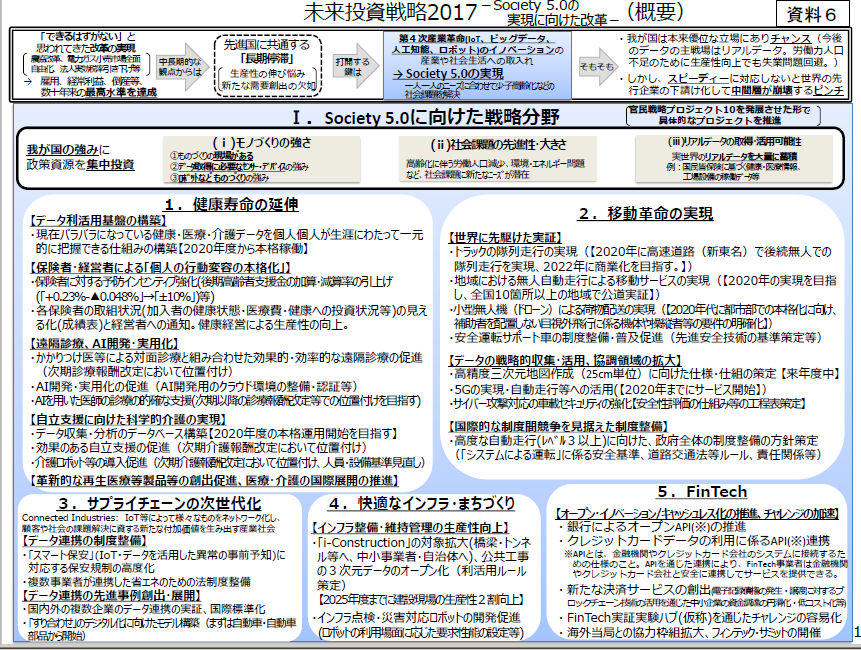
- Ⅱ．Society 5.0に向けた横割課題
- 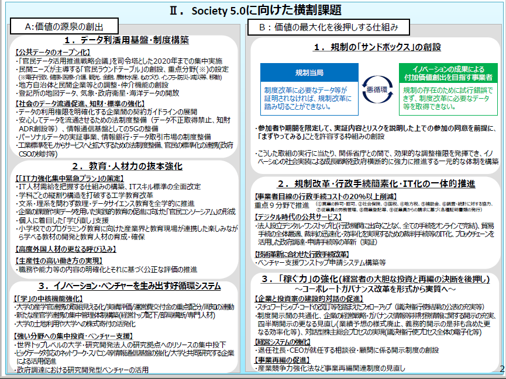
- 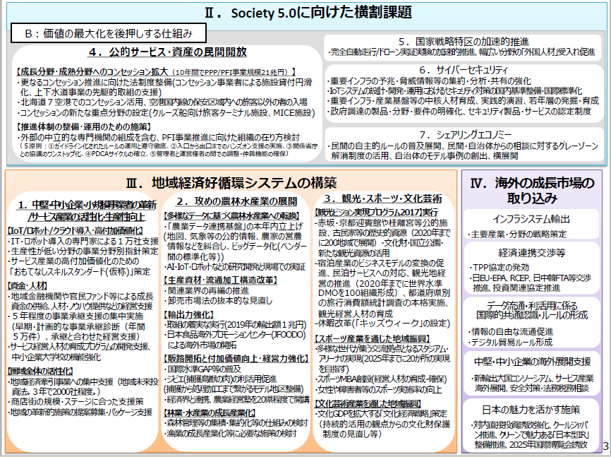
- 概要
- 基本的な考え方
- 「できるはずがない」と思われてきた改革の実現
- 第４次産業革命(IoT、ビッグテータ、人工知能、ロボット)の技術革新の産業や社会生活への取り入れ
- →Society5.0の実現：一人一人のニーズに合わせて少子高齢化などの社会課題を解決
- Ⅰ．Society 5.0に向けた戦略分野
- 我が国の強みに政策資源を集中投資
- (ⅰ)モノづくりの強さ
- (ⅱ)社会課題の先進性・大きさ
- (ⅲ)リアルデータの取得・活用可能性
- １．健康寿命の延伸
- データ利活用基盤の構築
- 予防・健康づくり：保険者・経営者による「個人の行動変容の本格化」
- 医療：新手法の導入促進による「質の飛躍的向上、医師・患者の負担軽減」
- 介護：科学的介護の導入による「自立支援の促進」
- ２．移動革命の実現
- 世界に先駆けた実証
- データの戦略的収集・活用、協調領域の拡大
- 国際的な制度間競争も見据えた制度整備
- ３．サプライチェーンの次世代化
- Connected Industries: IoT等によって様々なものをネットワーク化し、顧客や社会の課題解決に資する新たな付加価値を生み出す産業社会
- データ連携の制度整備
- ・｢スマート保安｣(IoT・データを活用した異常の事前予知)に対応する保安規制の高度化
- ・複数事業者が連携した省エネのための法制度整備
- データ連携の先進事例創出・展開
- ・国内外の複数企業のデータ連携の実証、国際標準化
- ・「すり合わせ」のデジタル化に向けたモデル構築（まずは自動車・自動車部品から開始）
- ４．快適なインフラ・まちづくり
- インフラの特性に合わせた「公共が牽引する社会実装」
- ５．FinTech
- イノベーションに向けたチャレンジの加速
- オープン・イノベーションの推進
- 企業の成長力強化のためのFinTech の活用促進
- キャッシュレス化の推進
- Ⅱ．Society 5.0に向けた横割課題
- A:価値の源泉の創出
- １．データ利活用基盤の構築、徹底したデータ利活用に向けた制度整備
- 公共データの「オープン化」
- 産業界・個人におけるデータ流通・利活用の加速化
- データ利活用を促す知財・標準化戦略
- ２．教育・人材力の抜本強化
- 「何を学ぶべきか」の羅針盤の提示
- 産官学連携による実践的教育
- 大学の数理・データサイエンス教育の強化、工学教育改革等
- 誰もが学び直しできる社会
- ３．イノベーション・ベンチャーを生み出す好循環システム
- 「学」の中核機能強化に向けたインセンティブ強化及び自己資金獲得の促進
- 我が国が強い分野を支える拠点・人材への集中投資
- ベンチャーの自発的・連続的な創出の加速
- B：価値の最大化を後押しする仕組み
- １．規制の「サンドボックス」の創設
- プロジェクト単位の規制の「サンドボックス」の創設
- 国家戦略特区における自動走行、小型無人機等の「近未来技術」の実証を促進する取組
- ２．規制改革・行政手続簡素化・IT化の一体的推進
- 行政目線の「行政手続」から事業者目線の「公共サービス」への転換
- ３．「稼ぐ力」の強化(経営者の大胆な投資と再編の決断を後押し)〜コーポレートガバナンス改革を形式から実質へ〜
- 企業と投資家の建設的な対話の促進
- 経営システムの強化
- 事業再編の円滑化
- ４．公的サービス・資産の民間開放
- 需要が拡大する「成長対応分野」の公共施設等運営権方式導入の拡大
- 人口減少等需要が減少する「成熟対応分野」の公共施設等運営権方式導入の拡大
- 推進体制の整備・運用のための施策
- ５．国家戦略特区の加速的推進
- ６．サイバーセキュリティ
- ７．シェアリングエコノミー
- Ⅲ．地域経済好循環システムの構築
- 地域の現場の付加価値・生産性を向上させるIT 化・データ利活用等の促進
- 成長資金の供給、人材・ノウハウの活用
- 地域の面的活性化、圏域全体への波及
- Ⅳ．海外の成長市場の取り込み
- データ連携・利活⽤を促進する制度・ルール【2017年5月METI】
- Society 5.0につながるConnected Industries
- 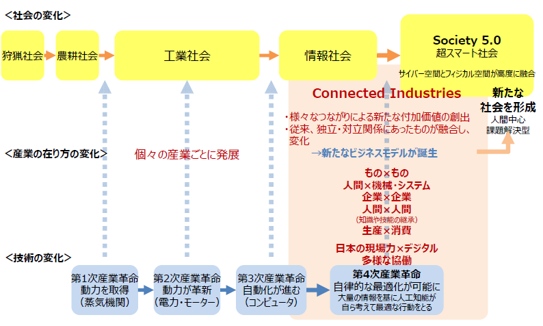
- データの利用権限に関する契約ガイドライン作成の背景
- 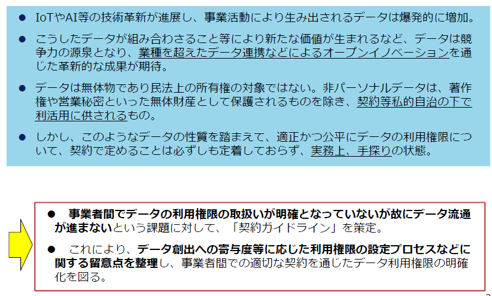
- データの利用権限に関する契約ガイドラインver1.0の概要
- 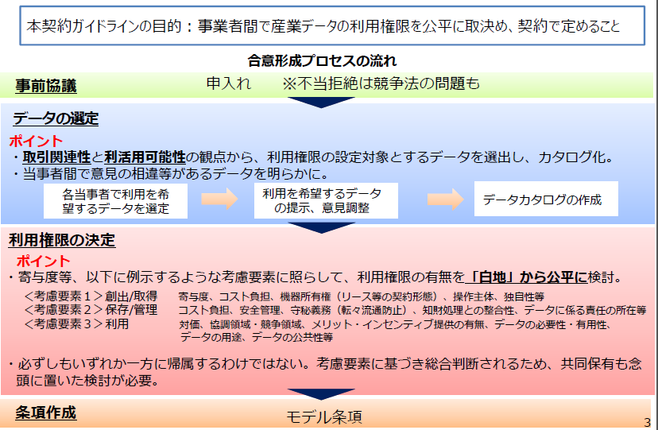
- 【参考】データの利⽤権限の取決めの参考事例
- 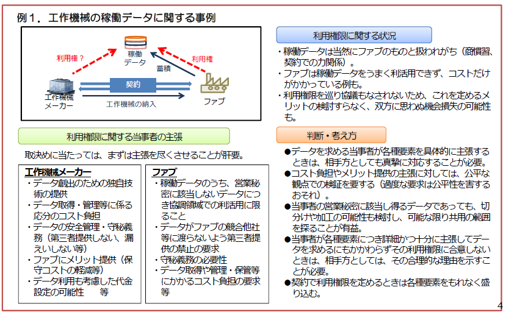
- 不正競争防⽌法における対応の⽅向性（不正な⾏為のイメージ）
- 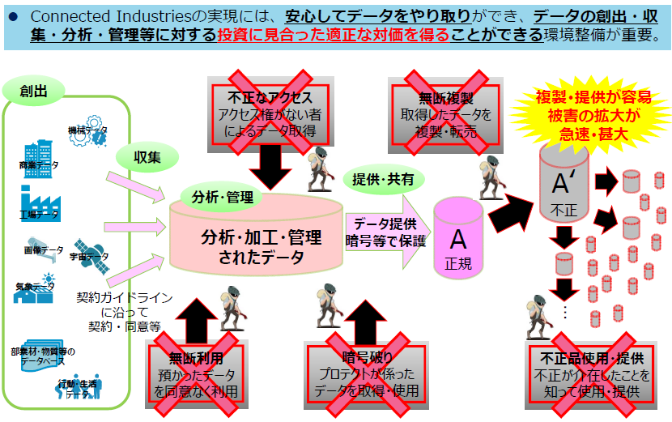
- 「未来投資戦略2017」(素案)本文
-
- 第４次産業革命の推進に当たっては、総合科学技術・イノベーション会議におけるSociety 5.0の基本方針の検討と連携しつつ進める。
-
- ①IT利活用施策の全体像
- ②マイナンバー利活用
- ③データ利活用の推進
- 高度情報通信ネットワーク社会推進戦略本部の下に、データ流通環境整備検討会を設置し、本人の関与の下でのデータ流通・利活⽤を可能とする仕組みについて検討中
- ④－１ 行政手続のIT化
- ④－２ 行政データの徹底開放
- ⑤シェアリングエコノミーの推進
-
- これまでの成果と今後の取組
- サイバーセキュリティーの確保、IT利活用の徹底
- • サイバーセキュリティーの確保、マイナンバーの利活用の拡大、個人情報の適正な取り扱いの確保とデータ利活⽤推進のための体制整備、政府・自治体のIT化・オープンデータの推進等。
- 科学技術
- 総合科学技術・イノベーション会議
-
- 概要
- 「科学技術基本計画」は、科学技術基本法に基づき政府が策定する、10年先を⾒見通した５年間の科学技術の振興に関する総合的な計画
- 第５期基本計画（平成28年度〜32年度）は、総合科学技術・イノベーション会議（ＣＳＴＩ）として初めての計画であり、「科学技術イノベーション政策」を協力に推進
- 本基本計画を、政府、学界、産業界、国民といった幅広い関係者が共に実施する計画として位置付け、我が国を「世界で最もイノベーションに適した国」へと導く
-
-
- 統合イノベーション戦略（素案）（概要）
- － 主要目標と主要施策ー
-
- 科学技術イノベーション総合戦略2017（案）【2017年4月21日】
- ５か年にわたる第５期科学技術基本計画（2016～2020年度）の下、科学技術イノベーション総合戦略を毎年度閣議決定し、来年度に向けて重きを置くべき取組を示す。我が国を「世界で最もイノベーションに適した国」に変革すべく、以下の取組を推進。
- 第１章重点事項
- 世界に先駆けてSociety 5.0を実現するために特に重要な事項。以下に加え、卓越した研究拠点や多様な学術研究を生み出す研究環境を確保することも重要。
- （１）Society 5.0の実現
- ・政府、産業界、学術界が一体となり国民参加の下で推進→若手研究者やベンチャー企業などのチャレンジを誘発
- ・関係省庁等の取組を基礎研究から実用化まで一気通貫で実施→SIP（戦略的イノベーション創造プログラム）に関係省庁等の取組の方向性を合わせ推進
- ・Society 5.0のコンセプトを世界に共有すべく発信
- （２）「科学技術イノベーション官民投資拡大イニシアティブ」の着実な実行
- ＧＤＰ600兆円経済の実現に向け、総合科学技術・イノベーション会議（CSTI）の司令塔機能を強化し、３つのアクションを推進
- ①予算編成プロセス改革アクション
- ・政府研究開発投資をテコとして民間研究開発投資を誘発
- ・「研究開発投資ターゲット領域」を設定し、同領域への政府研究開発投資を重点化
- ・ＳＩＰ型マネジメントの各省への展開、ステージゲート評価の導入
- →ＣＳＴＩの司令塔機能の強化
- ②研究開発投資拡大に向けた制度改革アクション
- ・大学と国研の聖域なき改革の断行と産学連携の深化
- ・「組織」対「組織」の産学連携の促進
- ・多様な資金の獲得に向けた取組の充実
- ・評価性資産（土地・株等）の寄附拡大
- ・公共調達の活用等による中小ベンチャー企業の育成・強化
- ・技術シーズとニーズの実効あるマッチングの推進
- ・イノベーションによる地方創生の推進
- ・産学官連携による科学技術イノベーションを支える人材の育成促進
- ③客観的根拠に基づく効果的な官民研究開発投資拡大アクション
- ・政府研究開発投資や政策効果等の「見える化」、適切な資源配分や評価の実現
- ・重要な政策課題の判断材料を提供するエビデンスシステムの構築と活用
- ・基本計画に基づく指標の継続的な検討、データの把握・公表によるフォローアップ
- →客観的根拠に基づく政策のPDCAサイクルを実現
- Society 5.0とは
- 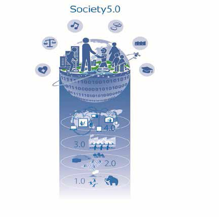
- 第５期科学技術基本計画で提示された未来社会の姿。狩猟社会、農耕社会、工業社会、情報社会に続く、以下のような新たな経済社会をいう。
- ①サイバー空間とフィジカル空間を高度に融合させることにより、
- ②地域、年齢、性別、言語等による格差なく、多様なニーズ、潜在的なニーズにきめ細かに対応したモノやサービスを提供することで経済的発展と社会的課題の解決を両立し、
- ③人々が快適で活力に満ちた質の高い生活を送ることのできる、人間中心の社会
- 第２章未来の産業創造と社会変革に向けた新たな価値創出の取組

- （１）未来に果敢に挑戦する研究開発と人材の強化
- ・ＩｍＰＡＣＴの継続的な運用の改善を通じた更なる発展
- ・挑戦的研究開発を推進するプログラムの展開の促進
- （２）新たな経済社会としての「Society 5.0」を実現する
- ・新たな価値創出を容易とするプラットフォームを構築
- ・「高度道路交通システム」、「エネルギーバリューチェーンの最適化」、
- 「新たなものづくりシステム」をコアシステムとして開発
- ①新たな価値やサービスの創出の基となるデータベースの構築と利活用
- ・共通に活用可能な下記データベースの構築と利活用を先行的に推進（SIPの取組も活用）
- ・Ｇ空間や自動走行用地図等を基にした「地理系データベース」、気象データ及び衛星等による「環境系データベース」、サイバー攻撃等の情報収集に役立つ「サイバーセキュリティ系データベース」の構築
- ②プラットフォームを支える基盤技術の強化
- ・サイバー空間関連基盤技術の強化（ＡＩ技術、ネットワーク技術、ビックデータ解析技術等）
- ・人工知能技術戦略会議策定の産業化ロードマップ等を国家戦略とし、研究開発から社会実装まで政府一体で推進
- ・フィジカル空間関連基盤技術の強化（ロボット技術、デバイス技術、素材・ナノテクノロジー、光・量子技術等）
- ③知的財産戦略と国際標準化の推進
- ・競争領域と協調領域の見極め
- ・データベース構築、データ利活用を推進するインターフェース、データフォーマット等の標準化を推進
- ④規制・制度改革の推進と社会的受容の醸成
- ・AIやロボットを活用する現場の課題を踏まえて、制度の見直しやルールの策定等を先行的に検討
- ・科学技術イノベーションの進展による倫理的視点や社会的影響を含め、産業界、学術界を交えて包括的に研究を実施
- ⑤能力開発・人材育成の推進
- ・IｏＴ等を通じた新ビジネスの創出を担う人材等の育成
- ・高度化する脅威に対するサイバーセキュリティの人材育成
- ・数理科学や計算科学技術、データサイエンスの振興や人材育成
- 第３章経済・社会的課題への対応
- （１）持続的な成長と地域社会の自律的な発展
- ①エネルギー、資源、食料の安定的な確保
- ⅰ）エネルギーバリューチェーンの最適化
- （エネルギープラットフォームの構築/クリーンなエネルギー供給の安定化と低コスト化/水素社会の実現に向けた新規技術や蓄電池の活用等によるエネルギー利用の安定化/革新的な材料・デバイス等の幅広い分野への適用/エネルギー・環境イノベーション戦略の推進）
- ⅱ）スマート・フードチェーンシステム
- （バイオテクノロジーによる生物機能の高度利用/次世代育種システム/ニーズオリエンティッドな生産システム/加工・流通システム/実需者や消費者への有益情報伝達システム）
- ⅲ）スマート生産システム
- （ＡＩ、ＩｏＴ、ビックデータ解析等を活用した生産性向上）
- ②超高齢化・人口減少社会等に対応する持続可能な社会の実現
- ⅰ）世界最先端の医療技術の実現による健康長寿社会の形成
- ⅱ）高度道路交通システム
- （自動走行システムに係る大規模実証実験等の開始、関連技術・システムの開発・実証の推進、応用実装・ビジネスモデルの確立）
- ⅲ）健康立国のための地域における人とくらしシステム
- （ＩＣＴ等の活用による健康等情報の利活用の推進/支援を必要とする者の自立促進及び看護・介護等サービスの支援技術/人にやさしい住宅・街づくりに資する研究）
- ③ものづくり・コトづくりの競争力向上
- ⅰ）新たなものづくりシステム
- （サプライチェーンシステムのプラットフォーム構築/革新的な生産技術の開発）
- ⅱ）統合型材料開発システム
- （信頼性の高い材料データベースの構築/高速で高効率な材料試作計測・評価技術の確立）
- （２）国及び国民の安全・安心の確保と豊かで質の高い生活の実現
- ①効率的かつ効果的なインフラ維持管理・更新・マネジメントの実現
- （構造物の劣化・損傷等を正確に把握する技術/補修・更新の必要性を判断する評価技術/強度や耐久性を付与する技術/アセットマネジメントシステムの構築）
- ②自然災害に対する強靱な社会の実現
- （「予防力」「予測力」「対応力」の向上/府省庁連携災害情報共有方式の導入推進）
- ③国家安全保障上の諸課題への対応
- （安全保障関係/テロ対策関係）
- ④おもてなしシステム
- （多言語音声翻訳システム/空間映像システム）
- （３）地球規模課題への対応と世界の発展への貢献
- （地球環境情報プラットフォームの構築/生物多様性の保全を促す情報基盤の構築）
- （４）国家戦略上重要なフロンティアの開拓
- （民間宇宙ビジネスの拡大に備えた関連規制の整備等）
- 第４章科学技術イノベーションの基盤的な力の強化
- （１）人材力の強化
- ①知的プロフェッショナルとしての人材の育成・確保と活躍促進
- ・国立大学や国研における先駆的な人事政策の促進（任期制若手研究者等のテニュア転換等）
- ・組織の新陳代謝を促す制度（シニア研究者等の任期付への転換等）による若手のポスト確保
- ・人材育成に資する産学協同の研究開発投資の促進
- ②人材の多様性確保と流動化の促進
- ・女性リーダーの登用促進、女性が継続的に活躍できる環境整備
- ・国外の優秀な研究者の受入れ及び国内への定着を促進する環境整備
- ・産学官の壁を越えた人材流動化を促進する制度（ｸﾛｽｱﾎﾟｲﾝﾄﾒﾝﾄ制度等）の導入促進
- （２）知の基盤の強化
- ①イノベーションの源泉としての学術研究と戦略的・要請的な基礎研究の推進
- ・大学等が改革を断行し、民間とパートナーシップを築き、基礎研究に民間の投資を呼び込む取組の加速
- ②研究開発活動を支える共通基盤技術、施設・設備、情報基盤の戦略的強化
- ・ビックデータに対応した情報基盤等の強化
- ③オープンサイエンスの推進
- ・国際的なルールメイキングへの対応と公的資金の研究成果のオープン化（データプラットフォームの整備等）
- （３）資金改革の強化
- ①基盤的経費の改革
- ・大学や国研における長のリーダーシップによる改革の取組推進
- ②外部資金獲得の強化による資金源の多様化
- ・大学と同窓会組織とのつながりの強化など寄附が持続的に促進されやすい文化・環境の醸成
- ・評価性資産（土地・株等）の寄附拡大に向けた分析と評価性資産の寄附を行いやすい制度の在り方を検討
- ・外部資金の獲得に積極的な大学等の事例収集と周知
- ・国立大学が保有する資産の利活用促進と老朽化対策等による施設機能向上、ベンチャー企業等へのインキュベーション施設等の貸付の推進
- ③公募型研究資金の改革
- ・公募型研究資金のより効果的・効率的な予算執行の実現
- ④国立大学改革・国研改革と研究資金改革との一体的推進
- ・民間から大学・国研等への投資３倍増の実現に向けた検討
- ・国研によるベンチャー企業等への自己資金等を活用した出資機能の強化
- ・ライセンス等の対価としての株式、新株予約権の取得と長期保有の在り方の検討
- 第５章イノベーション創出に向けた人材、知、資金の好循環システムの構築
- （１）オープンイノベーションを推進する仕組みの強化
- ・「組織」対「組織」の大型の産学官共同研究を推進
- ・部局横断的に研究者を組織、研究開発を集中管理する組織の設置支援
- ・技術シーズとニーズの実効あるマッチングの推進
- （２）新規事業に挑戦する中小・ベンチャー企業の創出強化
- ・小・中・高等学校から大学までを通じて起業家マインドを持つ人材の裾野拡大
- ・公共調達の活用等による中小ベンチャー企業の育成・強化
- ・大学発ベンチャー等に係るデータベース構築、ベンチャーキャピタルとのマッチングの推進
- （３）イノベーション創出に向けた知的財産・標準化戦略及び制度の見直しと整備
- ・ビックデータ、ＡＩ等に国際的視座から対応した知財システムの構築
- ・標準化人材の育成や戦略的な標準化活動など国際標準化の変化への対応
- （４）「地方創生」に資するイノベーションシステムの構築
- ・地域経済の牽引役となる中核企業の発掘、一貫した成長支援
- ・地域の強み、特性を踏まえた科学技術イノベーション施策による地方創生
- （５）グローバルなニーズを先取りしたイノベーション創出機会の開拓
- ・グローバルニーズを先取りする研究開発や新ビジネスの創出に向けた分析体制の構築
- 第６章科学技術イノベーションの推進機能の強化
- ・大学と国研の聖域なき改革の断行
- ・研究開発の特性を踏まえた政府調達の手続の迅速化
- ・実効性ある科学技術イノベーション政策の推進と司令塔機能の強化
- 平成28年度情報通信白書【総務省】
- 特集「IoT・ビッグデータ・AI ～ネットワークとデータが創造する新たな価値」
- 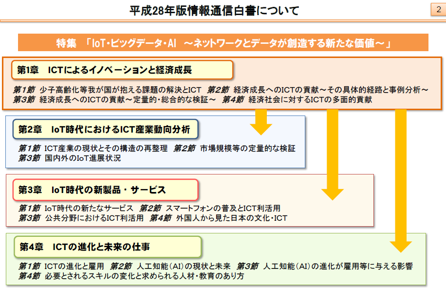
- 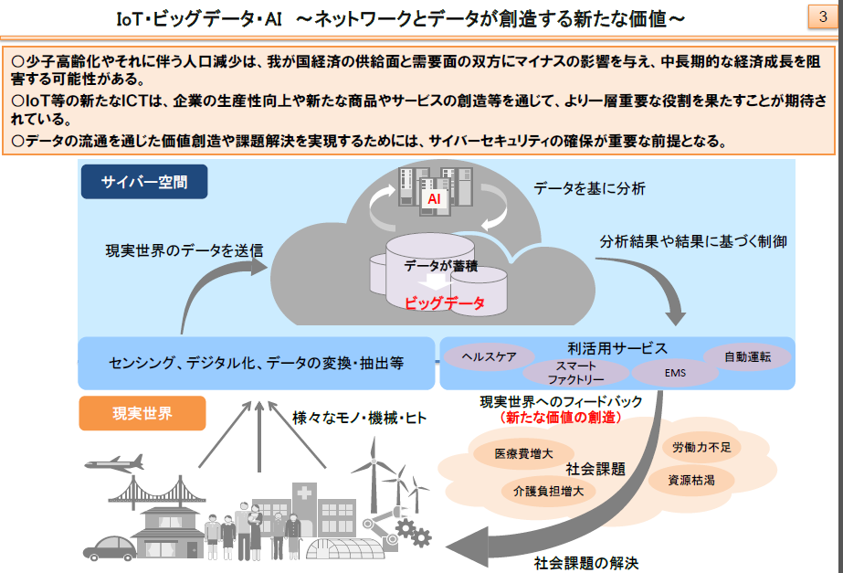
- ICT投資の現状
- ○我が国の大きな課題の一つである少子高齢化による労働力不足に対処するためには、積極的なICT投資を行い生産性向上等を図っていくことが重要。
- ○これまでの日本企業の主なICT投資は、業務効率化及びコスト削減の実現を目的とした「守りのICT投資」。一方米国企業は、「ICTによる製品／サービス開発強化」、「ICTを活用したビジネスモデル変革」などを目的とした「攻めのICT投資」により、ＩＣＴ製品、サービスで先行。
- ○今後の日本企業のＩＣＴ投資は、ハードからソフトやサービスへとシフトする見通しであり、クラウドなど生産性向上に寄与するICTの導入が進む可能性がある。
- ICTがもたらす非貨幣的価値
- ○ICTの価値は企業側と消費者側それぞれにもたらされるが、企業側は最終的にGDPの増加等として既存統計でとらえられるのに対し、消費者側は既存統計でとらえられていない部分（非貨幣的価値）がある。
- ○消費者側にもたらされるICTの非貨幣的価値として、①消費者余剰、②時間の節約、③情報資産（レビュー等）に着目して分析し、以下の結果を得た。
- ①消費者余剰（消費者が支払っても良いと考える価格と、実際に支払われている価格との差）について、音楽・動画視聴サービスを事例に分析すると、
- 利用者は1ヶ月あたり150円～200円程度の余剰を得ている。
- ②時間の節約について、ネットショッピングを事例に分析すると、1回あたり40分～1時間程度の節約になった。
- ③情報資産（レビュー）について、ネットショッピングを事例に分析すると、8割以上の利用者がレビューによって購入する商品を決定した経験がある。
- IoT/ビッグデータ時代に向けた新たな情報通信政策
- IoT/ビッグデータ/AI等の発展による世界的な産業構造の変革にあたって、IoT時代に対応した新たな生産プロセスの開発やサプライチェーン全体の最適化を目指し、官民を挙げた取組が各国で本格化する中、我が国においても、産学官の連携によるIoT推進体制として、平成27年10月に「IoT推進コンソーシアム」が設立された。
- 人工知能（AI）と雇用への影響
- 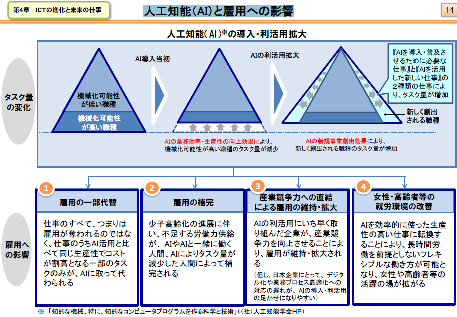
- タスクの変化
- AIの業務効率・生産性の向上効果により、機械化可能性が高い職種のタスク量が減少
- AIの新規事業創出効果により、新しく創出される職種のタスク量が増加
- 新しく創出される職種
- 『AIを導入・普及させるために必要な仕事』と『AIを活用した新しい仕事』の２種類の仕事により、タスク量が増加
- 雇用の一部代替
- 仕事のすべて、つまりは雇用が奪われるのではなく、仕事のうちAI活用と比べて同じ生産性でコストが割高となる一部のタスクのみが、AIに取って代わられる
- 雇用の補完
- 少子高齢化の進展に伴い、不足する労働力供給が、 AIやAIと一緒に働く人間、AIによりタスク量が減少した人間によって補完される
- 産業競争力への直結による雇用の維持・拡大
- AIの利活用にいち早く取り組んだ企業が、産業競争力を向上させることにより、雇用が維持・拡大される
- （但し、日本企業にとって、 デジタル化や業務プロセス最適化への対応の遅れが、 AIの導入・利活用の足かせになりやすい）
- 女性・高齢者等の就労環境の改善
- AIを効率的に使った生産性の高い仕事に転換することにより、長時間労働を前提としないフレキシブルな働き方が可能となり、女性や高齢者等の活躍の場が拡がる
- 人工知能（AI）への対応
- 人工知能（AI）の普及に向けた今後の対応・準備
- 日本では、「対応・準備については、特に何も行わない」とする者が多くみられる。他方、米国では、「人工知能（AI）の知識・スキルを習得するなど、人工知能（AI）を使う側に立って、今の仕事・業務を続けようと対応・準備する」とする者が多くみられる。
- 今後、自分自身が取得したい人工知能（AI）活用スキル
- 習得したいスキルを日米で比較した場合、日本は、いずれにおいても、米国よりも各種人工知能（AI）活用スキルの習得意欲が低い。
- 列挙する
- 学習環境や支援制度に対するニーズ
- AI（人工知能）活用スキルを取得するための学習環境や支援制度について、日米双方で、「大学等高等教育機関における教育・研究の充実」が必要とする者が多くみられる。加えて、米国では、「企業における自己啓発に関する支援制度」を必要とする者も多い。
- 総括
- ○ ＩＣＴの積極的な利活用により、経済成長は加速する。その中核となるのは、ＡＩを活用したＩｏＴであり、データ（ビッグデータ）の収集・活用がキーとなる。
- ○これらのＩｏＴ、ビッグデータ、ＡＩなどの新たなＩＣＴは、企業の生産性向上や新たな需要の創出などを通じて、経済成長への大きな貢献が期待できる。
- ○しかし、企業アンケートや消費者アンケートによると、米英等と比較して、日本の企業は新たなＩＣＴ投資の意向が相対的に十分でなく、また、日本の消費者はＩＣＴを活用した新たな商品・サービスの認知度等が相対的に低いことが浮き彫りになった。
- ○さらに、日本の就労者は、今後職場に浸透するであろうＡＩに対して、米国よりも、対応・準備の遅れが目立つ結果となった。
- ○来るＩｏＴ時代に向け、経済成長の中核となるＩｏＴ活用に我が国が乗り遅れることのないよう、企業や就労者がそれぞれ人材育成等の課題にしっかり対応することが重要である。
- 特集部詳細
- 【第1章第１節】 少子高齢化等我が国が抱える課題の解決とＩＣＴ
- 少子高齢化やそれに伴う人口減少は、我が国経済の供給面と需要面の双方にマイナスの影響を与え、我が国の中長期的な経済成長を阻害する可能性がある。
- 様々なデータを収集し（ＩｏＴ）、蓄積し（ビッグデータ）、人工知能（ＡＩ）にて処理・分析することで、現状把握、予測、機器・サービスの制御を行い、新たな価値の創造や課題解決に貢献することが期待される。
- 【第1章第２節】 ＩＣＴによる経済貢献経路
- 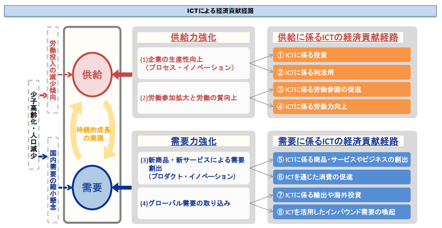
- 【第４章第１節】 ＩＣＴの進化と雇用、働き方
- 我が国就労者は、テレワークやシェアリングエコノミー型ワーク、デジタルファブリケーションなどの新しい働き方で実現が見込まれる多様な働き方に対して、米国就労者に比べて魅力を感じる人が少ない傾向がある。
- 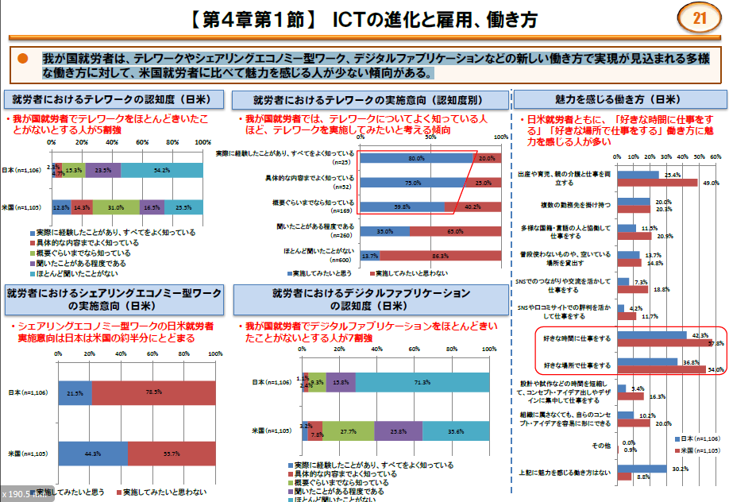
- 【第４章第２節】 人工知能（AI）の現状と未来
- 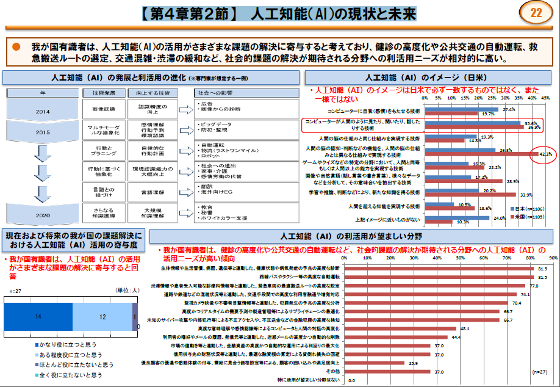
- 人工知能のイメージ
- コンピューターに自我（感情）をもたせる技術
- コンピューターが人間のように見たり、聞いたり、話したりする技術
- 人間の脳の仕組みと同じ仕組みを実現する技術
- 人間の脳の認知・判断などの機能を、人間の脳の仕組みとは異なる仕組みで実現する技術
- ゲームやクイズなどの特定の分野において、人間と同等もしくは人間以上の能力を実現する技術
- 画像や自然言語（話し言葉や書き言葉）、様々なデータなどを分析して、その意味合いを抽出する技術
- 学習や推論、判断などにより、新たな知識を得る技術
- 人間を超える知能を実現する技術
- 人工知能（AI）の利活用が望ましい分野
- 生体情報や生活習慣、病歴、遺伝等と連動した、健康状態や病気発症の予兆の高度な診断
- 路線バスやタクシー等の高度な自動運転
- 渋滞情報や患者受入可能な診療科情報等と連動した、緊急車両の最適搬送ルートの高度な設定
- 道路や鉄道などの混雑状況等と連動した、交通手段間での高度な利用者融通や増発対応
- 監視カメラ映像や不審者目撃情報等と連動した、犯罪発生の予兆の高度な分析
- 高度かつリアルタイムの需要予測や製造管理等によるサプライチェーンの最適化
- 未知のサイバー攻撃や内部犯行等による不正アクセスや、不正送金などの金融犯罪の高度な検知
- 高度な意味理解や感情認識等によるコンピュータと人間の対話の高度化
- 利用者の嗜好やメールの履歴、発信元等と連動した、迷惑メールの高度かつ自動的な削除
- 市場の値動き等と連動した、金融資産の高度かつ自動的な運用による利回りの最大化
- 信用供与先の財務状況等と連動した、最適な融資額の算定による貸倒れ損失の回避
- 優良顧客の優遇や感動体験の付与、需給に見合う価格設定等による、顧客の囲い込みや満足度向上
- その他
- 【第４章第３節】人工知能（AI）の進化が雇用等に与える影響①

- 日米就労者の職場への人工知能（AI）の導入は、現時点ではあまり進んでいない。
- 自分の職場への人工知能（AI）の導入や、仕事のパートナーとしての人工知能（AI）に対する抵抗感は、米国就労者に比べて我が国就労者の方が全体的に小さい傾向がある。
- 人工知能（AI）が果たす役割・機能
- 不足している労働力を補完する
- 既存の労働力を省力化する
- 既存の業務効率・生産性を高める
- 既存の業務の提供する価値（品質や顧客満足度など）を高める
- これまでに存在しなかった新しい価値をもった業務を創出する
- 既存の業務に取組む意欲や満足度を高める
- 新しい業務に取組む意欲や満足度を高める
- その他
- 【第４章第３節】 人工知能（AI）の進化が雇用等に与える影響②
- 人工知能（AI）の導入により、「AIを導入・普及させるために必要な仕事」と「AIを活用した新しい仕事」の2種類の仕事によりタスク量の増加が見込まれる。
- 我が国有識者は、人工知能（AI）導入・普及により、労働力供給の減少を補完できると考えている人が多い。
- 【第４章第４節】 必要とされるスキルの変化と求められる教育・人材育成のあり方

- 人工知能（AI）普及に向けた今後と対応・準備について、我が国就労者は特に何も行わないが過半数を超える。
- 人工知能（AI）普及において政府に期待される役割として、日米ともに就労者については「政策は中立であるべき」という回答が多数派を占めるが、国内の有識者については「実用化および導入を促進する政策をとるべき」との回答が多数派を占める。
- 平成29年度情報通信白書【総務省】
- 報告書2017－AIネットワーク化に関する記憶最適な議論の推進に向けて－【2017年7月28日総務省AIネットワーク社会推進会議】
- 要旨
- はじめに
- 序章
- １． 「ＡＩネットワーク化」と「智連社会」
- ２． 本推進会議の目的
- 第１章 ＡＩネットワーク化をめぐる最近の動向
- １． 国内の動向
- ２． 海外の動向
- 第２章 ＡＩ開発ガイドライン
- １． 背景・経緯
- ２． 整理された論点に関する意見募集の結果等を踏まえたＡＩ開発ガイドライン案の検討の方向性
- ３． ＡＩ開発ガイドライン案の概要
- ４． 今後の展開
- 第３章 ＡＩネットワーク化が社会・経済にもたらす影響
- １． 背景・経緯
- ２． 先行的評価
- ３． 分野別評価
- ４． 雇用・働き方への影響
- ５． 留意すべき事項
- 第４章 今後の課題
- 結びに代えて
- ＜別紙１＞ 国際的な議論のためのＡＩ開発ガイドライン案
- ＜別紙２－１＞ 整理された論点に関する意見募集に寄せられた主な意見に対する考え方
- ＜別紙２－２＞ 報告書２０１７（案）に関する意見募集に寄せられた主な意見に対する考え方
- ＜別紙３＞ ＡＩネットワーク化が社会・経済にもたらす影響 ～先行的評価～
- ＜別紙４＞ ＡＩネットワーク化が社会・経済にもたらす影響 ～分野別評価～
- ＜別紙５＞ ＡＩネットワーク社会推進会議及び分科会構成員一覧
- ＜別紙６＞ 開催経緯
- ＜参考資料＞ 「ＡＩネットワーク社会推進フォーラム」関連資料
- 人工知能技術戦略（人工知能技術戦略会議とりまとめ）【2017年3月31日人工知能技術戦略会議】
- １．人工知能技術、データ、コンピューティングを取り巻く状況
- ・ディープラーニングを始めとする機械学習の進化とともに、インターネットへの膨大なデータの蓄積、ブロードバンドによる通信速度の高速化、スマートフォンなどの小型高性能コンピュータの普及が進んだ結果、人工知能（ＡＩ）技術の研究開発が進み、これを利活用できる領域が広がり、「第４次産業革命」と呼ばれる社会変革が起こり始めている。
- ・現在進んでいるＡＩ技術は特定タスクを行う特化型のＡＩ技術であり、あくまで人間の能力を補完するものである。ＡＩ技術の進化により、過去のデータや画像認識、言語認識などから様々な推論が可能となった。データをベースにＡＩ技術をサービスとして利活用することにより、人間の能力を最大限に引き出し、社会の持続性や環境問題など社会課題への対応を含めて人間社会が豊かになり、経済・産業にも便益がもたらされるものである。
- ・ここ数年のＡＩ技術の利活用の劇的な進展は、データの質や量という観点から検索エンジンなどのインターネットのプラットフォームを握る米国のＩＴ企業が主導してきた。
- ・現在では、センシングなどのＩｏＴ関連技術が産業や生活の現実社会の現場に広がり、リアルの世界におけるデータ収集が進み、画像認識などのＡＩ技術の利活用される領域が拡大し、国際競争が激しくなっている。また、医学論文等の解析による診断支援、音声認識による対話システムの多様なサービスへの展開等、米国の企業が自然言語処理の社会実装を加速している。
- ・我が国では従来からものづくりの現場で良質なデータが生産性向上のために活用されている。また、我が国が長年培ってきた芸術や文化などの分野では世界に誇れるコンテンツを有している。こうした我が国の強みとＡＩ技術を融合し、産業競争力の強化につなげていくことが必要である。「日本は技術で勝ってもビジネスで負ける」と言われてきたが、戦略的に国際標準や知的財産を押さえ、協調領域と競争領域を使い分けることで、技術をビジネスにつなげていくことが重要である。
- ・我が国がＡＩ技術を利活用して各種の産業化を進めていく上では、以下のような課題がある。
- ①ＡＩ技術関連の論文数で見ると、米中に劣後しているなど、官民ともに研究開発に十分投資が行われておらず、官民を挙げて研究開発環境を整備する必要がある。その際には、基礎研究を政府が中心に行うなど、官民の役割に配慮しつつ、社会実装の場の確保、制度面での整備も課題になる。
- ②前述のように、ＡＩ技術の利活用にはデータが不可欠であり、データそのものが競争力となりつつある。我が国では現在でも様々なデータが存在しているが、そもそもデジタル化されていないデータであるケースや、個人情報保護や利用制約への配慮が必要なケースも存在する。今後、医療、交通、物流、インフラなどあらゆる分野でセンサー等の情報入出力デバイスが実装される環境の整備に産学官全体として努力する必要がある。その際、信頼性、セキュリティ、システムの柔軟性、個人情報保護、データの寡占化と利活用のバランス、データ間の連携など解決すべき課題は多い。
- ③ＡＩ技術の社会ニーズは高まっているが、ＡＩ技術の研究者、ＡＩ技術を使いこなすエンジニア・データサイエンティスト（ＡＩ人材）が不足している。また、産業構造の変革に伴う労働者の職業能力の開発も必須となりつつある。こうしたことを背景に、研究者の育成及びＡＩ人材育成策を早急に進める必要がある。
- ④ＡＩ技術の利活用においては、分野を超えた多様なプレーヤーが参加するオープンイノベーション型のプロジェクトが中心となる。特に、機動力のあるベンチャーや研究者、フリーランスなどの人材にＡＩ技術の開発や利活用による産業化の役割が期待される。既存の大企業がベンチャー等へ資金面、事業化の面などで連携し、プラットフォームを形成していくことが望まれる。また、ビジネスとして健全な発展を促していくためには、ＡＩ技術を適切に評価し、提供されるサービスに相応な価格を設定することも重要である。
- ⑤これまで半導体の高集積化により、コンピュータの高性能化が進められてきたが、微細化が限界に近づいてきたと言われており、精度よりも処理速度を追求する学習、推論などのＡＩの用途に特化した半導体の開発も進められている。今後、ＡＩ技術を現場でリアルタイムに利活用するには、高性能コンピュータのさらなる低消費電力化や小型化が必要であり、脳型、量子などの全く新しいアーキテクチャの開発やそれを用いたデバイス・システムの構築も重要な課題である。また、広域のセンサー等からの情報をセキュアかつ超低遅延で伝送し、ＡＩ技術でリアルタイムに判断するためにも、革新的ネットワーク（５Ｇ等）との組合せが重要である。
- ２．政府における人工知能技術開発に係る推進体制
- （１）関係府省の体制
- ・政府では、２０１６年４月の「未来投資に向けた官民対話」における総理指示を受け、『人工知能技術戦略会議』が創設された。同会議が司令塔となって、総務省、文部科学省、経済産業省が所管する５つの国立研究開発法人を束ね、ＡＩ技術の研究開発を進めるとともに、ＡＩを利用する側の産業（いわゆる出口産業）の関係府省と連携し、ＡＩ技術の社会実装を進めることになった。
- ・特に、総務省、文部科学省、経済産業省が所管する、以下の３つの国立研究開発法人に所属する研究センター（３センター）が連携し、中心となって、ＡＩ技術の研究開発を推進している。
- ①情報通信研究機構（ＮＩＣＴ）の脳情報通信融合研究センター（ＣｉＮｅｔ）、ユニバーサルコミュニケーション研究所（ＵＣＲＩ）
- ②理化学研究所（理研）の革新知能統合研究センター（ＡＩＰ）
- ③産業技術総合研究所（産総研）の人工知能研究センター（ＡＩＲＣ）
- ※ＮＩＣＴでは自然言語処理、多言語音声翻訳や脳情報通信等の研究を中心とし、ＡＩＰでは少ないデータからの高精度学習が可能となる新たなアルゴリズムなどの基礎研究・基盤技術の研究を中心とし、ＡＩＲＣではそれらの成果を活用し、ロボットの最適な動作を実現するなど産業分野への応用につなげる研究等を中心に研究を進めている。
- ・また、以下の機関を通じたプロジェクトを実施している。
- ④科学技術振興機構（ＪＳＴ）
- ⑤新エネルギー・産業技術総合開発機構（ＮＥＤＯ）
- ・３省に加え、内閣府（戦略的イノベーション創造プログラム（ＳＩＰ））、厚生労働省、国土交通省、農林水産省などビッグデータを有し、出口産業を所管する府省でもＡＩ技術を利活用したプロジェクトが企画されている。
- （２）人工知能技術戦略会議の検討体制
- ・昨年４月に人工知能技術戦略会議が創設される際、研究連携会議と産業連携会議が設置された。研究連携会議は３省が行う研究開発での連携の具体化を進めた。産業連携会議は３省が行う研究開発その他の事業の社会実装に向けて①産業化ロードマップの策定、 ②人材育成、 ③データ整備・提供及びオープンツール、 ④ベンチャー育成・金融連携などの施策等についてそれぞれ調査・検討を行った。その結果を後述する。
- ・なお、ＡＩ技術の倫理的側面、知的財産権や個人情報保護、オープンデータの推進等については、政府で横断的事項として別途検討の場等が設けられている。
- ３．人工知能とその他関連技術の融合による産業化のロードマップ
- 概要
- ・ＡＩ技術を利活用することで新たなサービス・製品が次々と生まれている。ＡＩ技術はその他関連技術と融合して、様々な社会課題を解決する可能性を大きく含んでいる。産業革命以降の過去の技術を見ても、自動車など社会課題を解決したものが大きな産業に成長している。
- ・我が国が世界をリードしていくために、我が国や世界が直面している社会課題に対して、我が国が有する現場の強みをも踏まえ、ＡＩ技術とその他関連技術による産業化に向けたチャレンジングなロードマップを掲げて、産学官の叡智を結集し、研究開発から社会実装まで一貫した取組を加速していく必要がある。
- ・「人工知能とその他関連技術の融合による産業化のロードマップ（産業化ロードマップ）」はそうした観点から策定されたものである。
- 別紙１
- （１）重点分野
- ・産業化ロードマップとして当面、取り上げるべき重点分野を、 ①社会課題として喫緊の解決の必要性、 ②経済波及効果への貢献、 ③ＡＩ技術による貢献の期待、の観点から検討した結果、「生産性」、「健康、医療・介護」、「空間の移動」の３分野に加え、横断的な分野として「情報セキュリティ」の４つの分野が特定された。
- （２）フェーズの整理
- ・ＡＩ技術はあくまでサービスである。各種データと組み合わさることにより、初めて各領域に利活用が広がっていく（ =「 AI as a service（AIaaS）」）。
- ・３段階のフェーズに分けて産業化の進展を整理した（図１）。
- ＜（図１）フェーズによる人工知能の発展段階の整理＞
- ①フェーズ１：各領域において、データ駆動型のＡＩ利活用が進む
- ②フェーズ２：個別の領域の枠を越えて、ＡＩ、データの一般利活用が進む
- ③フェーズ３：各領域が複合的につながり合い、エコシステムが構築される
- 図１
- ・フェーズ１とフェーズ２の境界は概ね２０２０年、フェーズ２とフェーズ３の境界は概ね２０２５年から３０年を想定している。ただし、本フェーズはあくまで技術面での可能性を整理したもので、社会実装までは、制度整備、社会受容性などの課題を解決する必要があるため、さらなる時間を要する可能性がある。また、自動運転などの分野では、予想よりも早く、技術開発が進展する可能性が大きいことには留意する必要がある。
- ・ＡＩ技術が展開される領域は産業だけでなく、生活圏、所有・省資源、ビジネスなど様々な社会の軸に広がることになろうが、想定外の軸が出てくる可能性は大きい。
- ・ＡＩ技術を構成する半導体アーキテクチャ、利用データの質、情報処理の場所、データ収集など個々の技術レベルやデータ環境などがフェーズの進展に深く関係する。
- （３）各分野の産業化ロードマップ
- ・「生産性」、「健康、医療・介護」、「空間の移動」の各分野について、目指すべき社会像とその実現に向けたフェーズごとの産業化のイメージを取りまとめた。
- ・各分野の目指すべき社会像及び産業化のイメージは以下のとおり。
- ①生産性
- ＜目指すべき社会像＞
- ・生産システムの自動・最適化、サービス産業の効率化・最適化、物・サービスへのニーズとのマッチングによりユーザー主導型のハイパーカスタマイゼーションが実現される。これにより、ものづくり・流通・サービスの融合が進み、エネルギー・食料なども含めた社会全体としての生産性を高めた、無駄のない究極のエコシステムを構築する。
- ・人が創造力を増幅することにより、次々と新しいサービス・製品が生み出される社会が構築される。
- ＜産業化のイメージ（図２）＞
- ②健康、医療・介護
- ＜目指すべき社会像＞
- ・世界で最初に急激な高齢化社会を迎えている日本において、医療・介護の膨大な情報をビッグデータ化し、ＡＩを使って世界一の医療技術先進国・介護技術先進国を構築する。
- ・予防医療の高度化により、病気にならないヘルスケアを実現する健康長寿産業大国を構築する。２０３０年には我が国人口の４０％以上が高齢者となる中で、８０歳でも就業を希望する高齢者が元気に働いている社会を実現する。これにより、個人としての満足度を上げるだけでなく、社会保障費の軽減を図ると同時に労働人口の減少という課題への対応の方策ともなる。
- ＜産業化のイメージ（図３）＞
- ③空間の移動
- ＜目指すべき社会像＞
- ・人の移動時間・移動空間を、「移動」そのものではなく、その他の「作業」、「生活」、「娯楽」を行う時間・空間にする。
- ・全ての人に自由で安全な空間の移動を確保する社会を構築する。人・物の移動にかかる移動手段のシェアリングエコノミーを構築することにより、移動のエコ社会を実現する。これらにより、人的要因による事故を２０３０年にはゼロにすることを目指し、「移動」に伴う社会コストを最小化する。
- ・移動の高付加価値化、自動運転等を活用した自律的な輸送配送、バーチャル移動も完成し、移動そのものに価値が生まれる社会を実現する。
- ＜産業化のイメージ（図４）＞
- ④情報セキュリティ分野
- ・情報セキュリティ分野は、他の分野でのＡＩ活用の進展に合わせて、技術開発や導入が進む横断的な分野である。「情報セキュリティ」技術に関しては、信頼性・安定性が重視されるだけでなく、技術の秘匿性も重視して技術開発を進めていく。
- ４．３センターを中心とした人工知能技術の研究開発及び社会実装に係る取組
- 概要
- ・産業化ロードマップの実現に当たっては、産学官の叡知を結集し、取り組むことが必要であるが、３センターを始めとする国の機関は、基盤的な技術の開発、高度な人材育成、公的データの整備、ベンチャー支援など産学官のプラットフォームの役割を担うべきである。
- （１）研究開発
- ①研究重点方針
- ・ＡＩ技術の研究開発は、他の技術以上に社会との接点が鍵となる。３センターを中心とする国のプロジェクトでは、産業化ロードマップにおけるテーマのうち、いくつかの重点的に取り組むべきテーマについて、実用化研究と、その高度化に貢献する基礎・基盤・要素技術研究を相互補完的に推進する。特に産業化ロードマップのフェーズ２やフェーズ３を見据えたチャレンジングなテーマについて積極的に取り組む。
- ②３センターの連携による研究開発目標（別紙２）
- ・産業化ロードマップを踏まえ、特に国立研究開発法人として中心となって取り組むべき研究開発テーマについて、３センターは連携して取り組む。
- ・３センターが連携して取り組むテーマは以下の観点から選定する。
- －基礎研究から社会実装まで一貫して取り組むべきもの。
- －短期的な収益化が見込めず、民間だけでは開発が進まないもの。
- －国際標準化、共通基盤技術など協調領域であるもの。
- ・具体的には、以下のような研究テーマなどに取り組む。
- ⅰ）「生産性」：ハイパーカスタマイゼーションの実現を目指し、消費者の需要を反映させた適時適量・多品種少量生産を可能とする次世代生産技術の研究開発（理研、産総研）
- ⅱ）「健康、医療・介護」：予防医療の高度化による病気にならないヘルスケアの実現を目指し、認知症を含む疾患の早期発見、最適な治療法選択、対処を可能とするシステムの研究開発（ＮＩＣＴ、理研、産総研）
- ⅲ）「空間の移動」：ＳＩＰにおける自動走行システムと連携しながら、地図データの意味づけやユニバーサルコミュニケーション技術による移動空間の高付加価値化を実現するスマートモビリティの研究開発（ＮＩＣＴ、産総研）
- ③産学官連携による研究開発プロジェクトの推進産学官連携による研究開発プロジェクトの推進
- ・３センターだけで全てのＡＩ技術の研究開発を担えるものではないが、３センターをハブとしつつ、産学官連携によるオープンイノベーションにより、研究開発プロジェクトを推進する。
- ・内閣府のＳＩＰを含め、厚生労働省、国土交通省、農林水産省など出口産業を所管する関係府省のプロジェクトとの連携を進める。
- ・政府では、昨年より、企業から大学・研究開発法人への投資を、今後１０年間で３倍に増やすことを目標としている。ＡＩ技術の研究開発についても、民間投資を促進する。
- 【具体的な取組例】
- ●脳情報通信及び自然言語処理等に関する人工知能技術に関する研究開発（総務省、ＮＩＣＴ）
- ●「ＩｏＴ /ＢＤ/ＡＩ情報通信プラットフォーム」社会実装推進事業（総務省）
- ●ＡＩＰネットワークラボ（ＪＳＴ）
- ●人工知能に関するグローバル研究拠点における産学官連携プロジェクト（産総研、東京大学）
- ●革新的なソフトウェア・ハードウェア技術の研究開発及びそのための最先端のデバイスの試作・設計環境の整備（経済産業省）
- （２）人材育成（別紙３）
- ・研究開発目標と産業化ロードマップの実現に向けて、ＡＩ人材の不足が指摘されるところ、特にフェーズ１において、トップレベルのＡＩ人材を、産学官の強力な連携のもと、即戦力として育成することが急務である。
- ※当該人材は、ＡＩに関する様々な知識・汎用的能力を有し（問題解決）、コンピュータサイエンスの知識・プログラミング技術を駆使でき（具現化）、具体的な社会課題に適用できる（活用）ことを期待。
- ・フェーズ２及び３においてはより広い産業でのＡＩ技術の活用が予想されるところ、ＡＩ技術が創造する価値を産業として普及させる人材を育成していくことも必要である。
- ・ＡＩ人材の育成が効果を発揮するには、ＡＩ人材を惹き付ける環境整備の観点から、ＡＩ人材の活躍できる場の確保が重要である。この観点から、ＮＩＣＴ、理研、産総研が積極的にグローバル水準で活躍できる国内外の若手研究者等を相応に処遇し、給与だけでなく職務環境や内容等も魅力的なものにするとともに、共同研究先の研究者の受入や連携大学院・外部研究者との交流といった取組を推進することが必要である。
- ・社会ニーズに応じた教育環境の整備、企業における処遇やマッチング等の課題もあり、これらに関する議論も併せて進める必要がある。
- 【具体的な取組例】
- ①即戦力育成のための新たな取組
- ●即戦力育成のための教育プログラム（ＡＩに関係する社会人を対象に、業務上必要な分野の最先端の知識やＡＩの体系的な知識の修得、リアルコモンデータ演習を通じた価値創造力の向上を目指す）
- ②大学と産業界の連携
- ●大学と産業界との共同研究、ＯＪＴを通じた人材育成等の取組の面展開（教育プログラムの普及、インターンシップ充実の検討等）
- ③政府・研究機関等によるこれまでの取組と更なる充実
- ●ＪＳＴファンディングによる若手人材育成
- ●データ関連人材育成プログラム
- （３）産学官が有するデータ及びツール群の環境整備（別紙４）
- ①重点分野でのデータ整備の強化
- ・ＡＩ技術の技術開発にはデータが不可欠である。健康、医療、介護、交通、農林水産分野など社会ニーズにつながっているデータの活用、環境整備を行っていく必要がある。そのためにも、３センターと関係府省との連携が必要となっている。
- ・また、データ自体だけでなく、データからＡＩで生成される学習済みモデルはより重要な価値を持つ。学習済みモデルを流通させる仕組みを構築することは重要な課題である。
- 【具体的な取組例】
- ●データ整備を目的としたプロジェクトの実施（ＮＥＤＯ等）
- ●最先端ＡＩデータテストベッドの整備（ＮＩＣＴ）
- ●匿名加工医療情報の円滑かつ公正な利活用の仕組みの整備
- ②産学官連携によるデータ整備・提供の強化
- ・大学や研究機関でデータ整備・提供を行うことは大きな負担が伴う。必要とされるデータを見極め、効果的にデータ整備・管理を行う支援体制の整備・強化が必要である。
- ・また、産学官連携により、模擬環境やシミュレータ、実証環境を整備し、効率的にデータ整備・提供を行うことが必要である。
- 【具体的な取組例】
- ●データ整備専門機関の体制強化（ＮＩＣＴ、ＪＳＴ、理研等）
- ●人工知能に関するグローバル研究拠点における模擬環境、実証環境、ＡＩクラウドの整備（産総研）
- ③民間保有データの利活用促進
- ・官民データ活用推進基本法の制定を受けて、国、地方公共団体、民間事業者が協力してデータ流通の拡大に取り組むことが必要である。
- ・民間保有データ利活用については、データそのものが競争領域と協調領域の判断が難しく、個人情報の扱いなど解決すべき課題も多い。ＩｏＴ推進コンソーシアムのデータ流通促進ＷＧなどの成功事例を共有し、必要なデータ活用を推進する。
- ・データフォーマット等のデータプロファイルの標準化や情報活用に関するルール整備等を進めることも重要である。
- 【具体的な取組例】
- ●データ流通促進ＷＧ（ＩｏＴ推進コンソーシアム）
- ●医療・健康データ利活用モデルの構築（ＰＨＲ等）（ＡＭＥＤ）
- ●データプロファイルの標準化等に向けたＩｏＴ実証プロジェクトなど
- （４）ベンチャー支援（別紙５）
- ①オープンイノベーションによるベンチャー支援の強化
- ・ＡＩ技術の開発を迅速かつ機動的に進める上では、既存の大企業がベンチャー等へ資金面、事業化の面などで連携し、オープンイノベーション型でプラットフォームを形成していくことが望まれる。
- ・大企業とベンチャーとのマッチングの機会を整備するとともに、大企業での目利き人材を特定し、ネットワーク化していくことが重要である。
- ・また、大企業の課題を特定し、解決のための技術を有するベンチャーをつなぐコーディネート人材の育成も重要である。
- 【具体的な取組例】
- ●オープンイノベーション協議会
- ●ＮＥＤＯピッチ（ＮＥＤＯ）
- ●コーディネート人材の派遣（産総研、中小企業基盤整備機構等）
- ②ベンチャーを担う人材の育成・確保
- ・技術はあっても経営ノウハウがないなど、ＡＩ分野を中心にベンチャーの担い手は依然として不足している。ベンチャー人材の育成とともに、新技術を用いた事業化の挑戦への支援や大企業からの資金が難しいプレシーズ段階での資金支援が必要である。
- 【具体的な取組例】
- ●アウトリーチの会（産総研）
- ●ＡＩチャレンジコンテスト
- ●研究開発型ベンチャー支援事業（ＮＥＤＯ）
- ●ＩＣＴイノベーション創出チャレンジプログラム（ I-Challenge!）（総務省）
- （５）ＡＩ技術の開発に係る理解促進
- ・ＡＩ技術の進化・普及は既存の産業や雇用に対する負の影響を懸念する声もあるが、そのような負の影響を克服し、ＡＩ技術をサービスとして利活用することで人間の能力を最大限に活用し、人間社会を豊かにし、経済・産業に便益をもたらすことについて理解を醸成していくことは重要である。
- ・ディープラーニングなどはまだ原理的に未解明な部分はあるが、それによって開発自体が制限されるべきではなく、開発を進めた上で十分な検証を行うことが重要である。
- ・ＡＩ技術の性能や安全性はアルゴリズムやデバイスだけでなく、使用するデータや環境に依存する部分がある。製造者だけでなく、サービスの提供者、使用者にＡＩ技術が理解されることが必要である。
- ５．人工知能技術戦略のフォローアップ
- ・本戦略に掲げられた取組について人工知能技術戦略会議は定期的にフォローアップを行う。
- ・関係府省は、産業化ロードマップを踏まえ、一時のブームに止まらず、中長期的な視点から、継続的に取り組んでいくことが必要である。ＡＩ技術の利活用は急速に進んでおり、関係府省と関係研究機関は常に最新の動向を踏まえた取組を進めるべきである。
- ・本戦略を実施する上で制度的な検討を要するものについては、未来投資会議などの検討の場に情報提供を行い、タイムリーな検討を促すものとする。
- ・本戦略について、関係の経済団体や学会と対話を行い、民間企業、大学での取組を促すこととする。
- 別紙１
- （1-1）フェーズによる人工知能（AI）の発展段階の整理
- （1-2）各領域をつなげる軸が融合しながら進化
- （1-３）人工知能の利活用のベースとなるシステムｘデータｘハードの進化
- （２）人工知能とその他関連技術が融合した産業化のイメージ
- （3-1）人工知能とその他関連技術の融合による産業化のロードマップ【生産性分野】
- （3-2）人工知能とその他関連技術の融合による産業化のロードマップ【健康/医療・介護分野】
- （3-3）人工知能とその他関連技術の融合による産業化のロードマップ【空間の移動分野】
- 別紙２
- ３センターの連携による研究開発目標イメージ
- 別紙３
- AIの研究開発・産業化を担う人材育成の必要性
- AIの研究開発・産業化を担う人材育成の具体的取組
- （参考）求められる人材の知識・技能
- 別紙４
- 産学官が有するデータ及びツール群の環境整備に関する方針について
- 別紙５
- ベンチャーの立ち上げ支援や、ベンチャーと大企業・金融機関等とのマッチング支援等、AI関連ベンチャーの活動の活性化の方針について
-
- 知的財産戦略本部
-
- ～「価値デザイン社会」を目指して」を目指して
- 2025～30 年頃を念頭に、どのような社会になりたいか、という目的を考え、「価値デザイン社会」になろう、というターゲットを掲げた。
- エグゼクティブサマリー
- （１章）
- AI やブロックチェーンなどの技術の活用、モノ消費からコト消費、シェアリングエコノミー、米国の GAFA や中国の BAT などの企業の台頭など、時代の変化のスピードは目を見張るものがある。こうした変化の中には、今後も続く可能性がある予兆が多く含まれている
- （２章）
- 2025 年から 30 年という将来を考えたとき、それを正確に予測することなど不可能だが、どんな社会にしたいのかを考えることはできる。人や産業や社会の仕組みをどのようなものにしていきたいのか。未来の社会において中核となる価値は何か。専門調査会の委員と事務局の間でタブーなく議論を戦わせた。もちろん、予兆がそのまま続くわけでもないし、揺り戻しのようなものも意識してみた
- （３章）
- しかし、これだけでは世界どこでも同じになってしまう。日本の未来を考えれば、海外が一目を置く日本の特徴（独り勝ちを望まないバランス感覚、自然との共生、思想的柔軟性、新しいものを受け入れて研ぎ澄ます編集力など）を活かすことが不可欠だ。一方で均質性など過去には優位性をもたらした特徴が弱点にならないようにする、さらには、他国に先立って日本が直面する状況（最も先を行く少子高齢化）をチャンスにするとの視点も必要だ。これがうまくできれば、日本が生む様々な価値、日本ならではの様々な価値が世界で共感され、リスペクトされる可能性が広がる
- （５章）
- そのためのポイントになるのは、新しい価値を次々に構想し、発信し、これが価値だと定義してしまうくらい世界にも認められるようになることだ。そんな「価値デザイン社会」を日本は目指したい。プラットフォームに人を集め、データを収集し価値を創出するとともにマーケティングに活用していくグーグル、使われてない資源をマッチングさせてユーザーの利便性を向上させたウーバー、そんな新しい価値のデザインを日本から次々と生み出し「その手があったか」「一本取られた」と世界中の人に感じさせたい。もちろん、簡単なことではない。今までの均質ではなく脱平均の発想で臨む、やってなんぼの精神で試行錯誤する、サプライ側から一方的に供給することよりも消費者側のリアルタイムな評価に軸足を置く、など変えなければいけないことは多い。最初から完璧に機能する社会変革はない。様々なステークホルダーが協力し、試行錯誤しながら改善していくのがオープンイノベーションの特徴でもある。そんな「価値デザイン社会」に共感して世界中から異能が集まり何度でもチャレンジする、様々な力が出合い、融合して価値をデザインしていく場がたくさんある、そして世界をうならせる価値をデザインして発信して、世界で共感され、リスペクトされていく。それを実現するために、鍵になる広義の知的財産に関連するようないくつかの新しい仕組みの例も提案した。このビジョンが将来の知財システムを考える戦略の出発点になることを期待する
- 本文
- はじめに ～新しい時代の新しい知財戦略～
- 2002 年に知財立国が打ち出されて以来 15 年余、今や世界経済は、ビッグデータ、人工知能、IoT 関連技術に牽引される第 4 次産業革命の真只中にある。
- そこでは、大きな変化が明確になってきた。今や世界を代表する企業である GAFA や中国の BAT などの活躍は、イノベーションが供給主導から需要主導に大きく変質していることを物語っている。需要側を見ると、モノからコト消費へと比重が移りつつあり、また、所有や交換より共感やシェアリングを志向する人々が増加している。少子高齢化や環境エネルギー等の我が国における、また国際共通課題としての顕在化である。経済社会全体の在り方としても、2015 年に国連で採択された SDGs（持続可能な開発目標：Sustainable Development Goals）が今や世界の共通語として認知されるようになり、これまでの短期志向の金融資本主義は修正を迫られつつある。さらに、今後が期待される新しい技術であるブロックチェーン技術、量子コンピューティング技術、ゲノム編集技術なども、新しい社会の中で重要なツールとして実装され、社会を変えていく可能性を秘めている。我が国では訪日外国人が約 2800 万人に達し、2012 年の 3 倍以上になっている。
- こうした面も含め、2013 年に策定された「知的財産政策ビジョン」の想定を大きく超えた異次元での変化が進行している。
- デジタル・ネットワークがあらゆる場面に普及・浸透して産業構造やライフスタイルを変え、即物的な「モノ」よりも「サービス」や「情報」、「アイデア」、「ビジネスモデル」、「デザイン」等が重要となる中、知的財産は、これまでとは違う形で、しかしこれまで以上に価値創出の核心になるだろう。このような社会全体の変化の方向性を踏まえた中長期の知的財産戦略についてのビジョンが、今求められる理由である。
- そのため、昨年末に知的財産戦略本部の下に「知的財産戦略ビジョンに関する専門調査会」を設置し、幅広い年代・専門性を持つ有識者議員により、
- 2025 年から 2030 年頃を見据え、来るべき社会像と価値の生み出し方、そしてそれを支える知的財産システムについて、中長期の展望及び施策の方向性を示すための議論を重ねてきた。今般、それをビジョンという形で取りまとめたものである。
- 新しい時代を議論するためには、議論の仕方自体もグループ討議など新しい方式を取り入れた。より自由で活発に議論を戦わせることができるよう、
- 議論をオープンにしながらもチャタムハウスルール1により、個々の発言が予期せぬ個人攻撃や誤解を招くことがないようにした。
- 今後、このビジョンを世に問い、自由で活発な議論が行える場でその有効性を検証しながら見直しを行いつつ、この新たなビジョンを政府全体で共有した上で、将来社会に必要な具体的システム設計を積極的かつ創造的に行って実施していく。そのことが、知財立国からさらに進化した我が国が、力強い産業と文化の発展を実現し、国際社会にも認められながら成長していくために必要不可欠である。
- 図１ 知的財産戦略ビジョン策定のアプローチ
- 第１．将来の社会変化につながると考えられる現在の環境変化や兆候
- 図２ 「未来」の兆し
- １．価値観・社会状況における変化の兆候
- （リニア型から複雑系イノベーション・モデルへ）
- （オープンイノベーションの高まりと課題）
- （消費者需要の変化－モノからコト、サービスへ）
- （SNS の普及と社会行動の変化）
- （シェアリングエコノミーの拡大）
- （価値観の多様化と経済指標としてのGDP の相対化）
- （リアルからサイバー・バーチャルへ）
- （組織を中心とした社会参画から個人としての社会参画へ）
- ２．新技術の進展と浸透
- 表１ 新技術の概要と応用例
- 「IoT」
- 「ビッグデータ」
- 「人工知能（AI）」
- 「ブロックチェーン技術」
- 「3D プリンタとファブレス生産」
- 「仮想現実（VR）／拡張現実（AR）」
- 「量子コンピューティング」
- 「5G」
- 「ゲノム編集技術」
- （新技術及びその組合せによるイノベーションの加速）
- これらの新技術とその周辺技術はそれぞれ新しい製品やサービスを生み出している。しかし、より重要なのは、これら新技術が社会全体に浸透することにより、分野を超えて組み合わされて活用されつつある点である。
- 例えば、「IoT」や「ビッグデータ」「人工知能」によるデータ分析を従来産業と組み合わせることにより、新しいビジネスを生み出すといったことが、ものづくりの生産現場や医療・ヘルスケア産業、農業などあらゆる分野で加速度的に進みつつある。さらに、グローバル企業においては、ユーザーが生み出す膨大なデータを解析して新しい価値を予想し提供していくことが大きなビジネスチャンスになりつつある。また、人工知能（AI）、仮想現実（VR）/拡張現実（AR）技術やブロックチェーン技術の実用化はまだ端緒についたばかりであり、社会の様々な場面でさらに新技術が融合し、需要者のニーズデータと結びついて浸透すれば、あらゆる産業が大きく変容していくことが見込まれる。
- （サイバー空間の増大とリアル空間との融合）
- 新たな技術をあらゆる産業や社会生活に取り入れてイノベーションを創出し、一人一人のニーズに合わせる形で社会的課題を解決する新たな社会として 2016 年に提唱された「Society 5.0」への取組が、産業界も含め様々な分野において加速している。
- ここでは、「サイバー」の占める割合が増大するとともに、さらに「リアル」と「サイバー」の結びつきが強化され、それを通じてデータを媒介にした異業種同士や供給者と顧客の直接の結びつきが加速される。
- （個人がクリエイターやサプライヤーへ）
- このようなサイバー空間の発展や自動翻訳の発展に伴い、コンテンツやデータに関する距離、時間、費用、言語の制約が減少し、これまで以上に共有しやすくなる。そのため、ものづくりやコンテンツ作成・発信が誰にとっても容易になり、加えて、それに対する対価徴収や利益配分の仕組みも技術的に整備されることで、ビジネス化までも容易になる。
- このような状況においては、従来はアイデアがあってもなかなか実現できなかったことが、今後はアイデアの発案から実現までを個人でもできることになり、その意味で発案から実現までの距離や時間が短くなるととともに、従来のユーザーも容易にクリエイターやサプライヤーになることができるようになる。
- （ブロックチェーン技術の普及－データの信頼性確保へ）
- サイバーの世界でブロックチェーン技術を活用した「仮想通貨」の広がりが注目を集めている。従来各国が発行する法定通貨が経済活動の基軸であったが、政府外主体が発行し世界中で瞬時に送金が可能な仮想通貨の広がりにより、消費者の決済やビジネス（特にベンチャー企業）の資金調達、あるいは価値貯蔵の方法が変わる兆しが出てきている。ブロックチェーン技術は「仮想通貨」で注目を浴びているが、その分散台帳技術は、データが氾濫する中、データの透明性と信頼性を確保する技術として、金融分野だけではなく、コンテンツ分野を始め広い範囲で応用が模索され始めている。
- こうした新技術の進展においては、特に計算能力（コンピューティングパワー）が重要になるが、計算能力は電気料金の影響が大きいため、電気料金の国際的に特に低い一定国に集中するようになってきており、今後さらにその傾向が強まるとの指摘もある。同様に、データも重要であるが、個人情報や医療情報をはじめとする情報の取扱いに関する制度・規制が国ごとに異なっているため、データが入手容易な国においてそれを活用した人工知能等の分野のビジネスが急成長しているとの指摘もある。
- （プロダクトライフサイクルの短期化とデザイン思考の重要性の拡大）
- 全体的に供給が需要を上回る状況では、常に最新のものを使えるとの意識を需要側が持つようになり、技術進歩及び技術の浸透・伝播のスピードが速くなっていることもあいまって、プロダクトサイクルも短期化している。技術の国際的普及も早くなっており、技術のみによる差別化はますます困難となっている。このため、技術や市場を起点にするのではなく、ユーザー起点、すなわち成果物がユーザーに使われる具体的な場面から発想して、ユーザー自身も気付いていない潜在的なニーズを捉え、新しい商品やサービスを考えていくデザイン思考がますます重要となる。
- ３．国際関係における環境変化
- （米中の存在感の拡大）
- （グローバルなプラットフォーム企業の台頭）
- （保護主義的傾向の強まり）
- （SDGs など世界共通的課題への本格的な取組）
- （経済大国から発信立国へ）
- 第２．現在の兆候から予測される将来の社会像～人が幸せになる未来を作ろう～
- 図３ 将来の社会像
- １．主に人の将来像（生き方、働き方、価値観）
- （多彩な能力を発揮する）
- （自ら舵取りをする生き方へ）
- （リアルの価値は上がっていく）
- デジタル社会では、低廉なコストで複製・普及が可能なデジタルに比べ、相対的にリアル（非デジタル）の価値が向上すると見込まれる。
- ここでリアル（非デジタル）とは、例えば、人同士の直接的な関係性、（人工知能ではなく）人の手による作品、実際の体験、歴史や伝統などである。
- また、情報の共有・AI 技術の社会への浸透により、人は容易に他者の行動などを知ることができるようになる。
- その結果として画一化が進んだり極端化の方向へ進んだりする可能性がある中、多様性を確保することや、その肝となる個人の選択の自由度を確保することの価値が高まる。
- また、これらの技術を駆使すれば、個別のニーズを把握し、それに応じてカスタマイズすることのコストが下がるため、モノやサービスの提供に当たって画一化する必然性が下がり、多様な選択肢の確保などが可能となる。
- 多くの選択肢が、技術的に可能となっても、平均化・順応の圧力がかかると実際に選択することはできないので、多様な選択肢の中から個人が自由に安心して選択できるような社会にすることもあわせて必要である。
- 加えて、多様な個性を発揮しながら、創意工夫する人同士の交流により、価値が新たに創造（再発見や再編集を含む）されることが可能になる。
- この際、必ずしも新しい価値を創造するリーダーのみならず、それを支持するファーストフォロワーも重要であり、新しいもの、これまでと違うものに率先して共感を示す者がいなければ、新たな創造も社会に普及しないことを見逃してはならない。
- 「幸せ」の多様化と自分の「幸せ」の追求）
- ２．主に産業の将来像（イノベーション、競争力）
- （データを活用することにより生産性は劇的に改善）
- これまで述べたとおり、IoT によりあらゆるものがつながり、そこから出てくるデータを人工知能で分析することにより従来の産業分野を超えて、またサプライ・サイドとディマンド・サイドの垣根を超えて、大きな変革が起きると考えられる。
- 人工知能により資源の有効活用が進み、生産性が劇的に向上するとともに、種々雑多なデータから重要な部分を抽出し活用する、いわばデータのメタ化によって消費者行動や潜在的需要を把握し、それに基づく事業を展開できるということが、競争力の源泉になるだろう。
- （夢×技術×デザインで新たな市場を開拓へ）
- 人工知能やデータ活用による生産効率向上は既存の産業分野における競争力向上に重要となるものの、より大きな生産性向上を実現するためには、新市場を開拓して新たな付加価値を産み出すことが重要となる。
- そのためには、「夢（や目的）」（実現したいこと・解決したいこと）、「技術」（それを実現する手段）、「（ビジネスの）デザイン」（どのように実現するか）の３つを重ね合わせて、新しい価値を生み出し、それを持続的に行うことが重要となる。
- 技術については、個々の製品・サービスに必要な技術がますます多岐に渡るようになるため、技術一つ一つの相対的重要性は下がる可能性がある。
- 逆に消費者の共感を得て需要を生んでいくことが重要になるため、まずは「夢」やコンセプトを語る一方、パッケージ化、信頼獲得やイメージ戦略、ブランディングを通じて消費者のハートをつかむことの方が相対的に重要になる。
- その際、人は必ずしも合理的経済人ではなく、感情が行動を大きく左右する生き物であり、そうした感情へ訴えかけるには、アソビ（ゆとり）やアートが重要となる。
- （上市までのスピードが大事に）
- 情報伝達のスピード、社会が変わるスピードがこれまで以上に加速しているので、実用化、市場投入までのスピード感が重要になる。
- 一度の挑戦で必ず成功することを目指して、じっくり時間をかけるのではなく、挑戦と失敗を何度も繰り返しながら、市場と対話しながら完成度を高めていくこと、そうした試行錯誤（トライ＆エラー）を許容する環境・文化が不可欠になる。
- （オープンイノベーションの深化）
- 第１章第１節で述べたとおり、リニア型から複雑系イノベーション・モデルへ変化する中、より要求水準が高まる消費者のニーズに対して一企業で対応できることが限られており、複数企業で、さらにはユーザーも巻き込んで、そのニーズを満たすためのオープンイノベーションの必要性はますます増大することが予想される。
- （日本固有の価値や文化の活用が国際競争の鍵へ）
- 国際的な競争を勝ち抜く上では、世界の中での自らの立ち位置を理解することも大切である。例えば、新興経済大国への対抗戦略としては、量での競争ではなく、その他の部分で勝負する方が理にかなう。後述するような日本の特徴を活かし、その価値観に共感を得られる世界の消費者を見極め、それをターゲットにして、日本固有の価値や文化を生かした付加価値の高い商品、サービス、観光などをマーケッティングしていくことが重要になるだろう。
- （独占から利用へ、保有からアクセスへ、パイプラインからプラットフォームへ）
- 社会の変化とともにビジネスの形も変化してきた。特にプラットフォームを形成し集積された情報を活用できる企業が国際的に存在感を増しており、その傾向が一層顕著になるだろう。
- すなわち、従前のようにそれぞれの役割を担う主体が構成するバリューチェーンを順番に進めるパイプライン型のビジネスから、多様なプレイヤーやユーザーが様々な活動を実現して様々な価値の交換を行う「場」を提供するプラットフォーム型のビジネスに変化し、さらにその上で取り交わされる情報が様々に活用され、さらにビジネスを加速していくのである。
- このようなビジネスにおいては、一人のプレイヤーではビジネス全体を実施できず、複数人のプレイヤーが相互に他者の技術や資産へアクセスして利用し合いビジネスを協働する必要があることから、ビジネスモデルの前提が「独占」から「利用」に移行し、技術についても自己「保有」から他者が有するものへの「アクセス」という形に変化していくだろう。
- 昨今急速に拡大しているシェアリングエコノミーは、資産を「利用していない者」と「利用したい者」をつなげるプラットフォームを提供するビジネスとしてその一つの典型例と言える。
- ３．主に社会の将来像（仕組み・ルール、国際関係）
- （国・組織の境界の柔軟化）
- これまで見てきたとおり、個人の能力拡張や単独組織への依存からの脱却などにより個人の組織を通じた社会への参画の在り方が大きく変わる中、組織の柔軟性がますます求められるようになる。
- また、ネットワーク技術の進展による国境を越えたモノ・サービスの取引増加、サイバー空間の拡大、国家を超えるようなパワーを持つグローバル企業の登場などにより、国家間の境界についても従来とは異なる状況になっていく。
- また、例えば仮想通貨は国ではない主体から発行されており現在の金融政策の射程に組み込まれていないため、その流通規模が拡大すれば、国家による既存の金融政策の有効性が薄れる可能性がある。
- 国家も組織も、従来の境界を前提とした考え方、仕組みやルールが機能不全になる状況となり、その調整や再構築を行う必要が生じる可能性がある。
- （人間社会における国家の位置付けの相対化）
- 国家と企業の関係も変わりつつある。サイバーの世界では国境が事実上ないため、国内法の適用が大きく課題となりつつある一方、例えば仮想通貨は国家ではないところから発行されているため、その利便性は認識されつつも、金融・信用政策への観点から各国で検討がされている。
- 上述したように、複数の IT プラットフォーム型の多国籍企業は国家に匹敵する経済規模となっており、その世界全体に及ぼす社会的・経済的影響力はますます大きくなっている。これら企業にはますます適切な社会責任が求められており、社会としての課題を政府と多国籍企業とが協同して建設的に解決していくことも必要になってくる。
- （「オア」社会から「アンド」社会へ）
- 技術の進展は、これまで不可能だったことを可能にする。そうした状況の下では、これまで複数の選択肢のうち一つを選ばなければならなかったものが（「オア」社会）、将来はその全てを選ぶことができる、同時に存在することができるという「アンド」社会になる可能性がある。
- 例えば、デジタル「or」アナログという世界から、サイバー「and」フィジカル、コンテンツ「and」サイエンスという世界へ、また、職業 A「or」職業 B ではなく SF 作家「and」科学技術者、技術目利き「and」事業の見巧者19、産「and」学へ、というケースが増大する。
- そこでは、個人が個人の多様な能力を活かして活動できる仕組み（「独立」）と、他の誰かと協働して活動できる仕組み（「アライアンス化」） とが、同時に起こり、そのバランスが将来社会において重要になっていく。
- （効率的な学び、互学互習の増加）
- 変化のスピードがますます速くなる時代においては、変化に柔軟に対応し、世界で競争・協働できる人材育成が必要である。
- 国境を越えたキャリア形成も重大な選択肢となる。IT の有効な活用によって、特に高等教育においては学びをモジュール化20すること等が有効になり、効率的な学びが促進される。
- また、これまでのともすれば一方的な知識の伝授に偏りがちな面もあった教育から、学習の場に参加する人すべてが、主体的に学ぶとともに相互に学び合う（「互学互習」の）機会を設けることも IT の活用によって容易になるだろう。
- 一方、将来においては、多くのものがサイバー空間において、あるいはそれを経由して創造され、逆にリアルの価値が増していくため、学びの場においては、リアルの体験を通じた、身体面・情操面に関する教育が一段と価値のあるものとなるであろう。
- （大学や学びの場は学びだけではなく、人材流動化のプラットフォームへ）
- 大学や様々な学びの場は、複数の組織で働く副業・複業が増えたり、また、 学んで働くというサイクルを複数回繰り返したりするような働き方の一般化が想定される中、その都度必要な学習ができるような生涯学習の場として重要になる。
- また、これらの場は様々な人材が集積してアイデアの交換、創発、社会実験や試行錯誤を行う場となり、（学生の入学・卒業や人材交流等によっ て）人材が自動的に流動するという特性を活かして、人の停滞が起こらず、その意味で生産性の高いプラットフォームとして機能することが期待される。
- （知的資産における所有からシェアへ － 知的資産の高付加価値化へ）
- このような将来において、知的資産について俯瞰すると、社会の価値観が「所有」から「シェア」へと変化したり、オープンイノベーションにより組織の内外で協働して価値を創造したりするようになるのと同様、知的資産においても、オープンソースソフトウェア等におけるコピーレフト21の考え方や、クリエイティブ・コモンズ22など著作者が主体的に多くの人がより利活用しやすいルールを設定できるツールなどが普及する可能性がある。
- このような仕組みを通じて、例えば、作者は著作権を保持したまま作品を自由に流通させることができ、受け手はライセンス条件の範囲内で再配布やリミックスなどをすることができる、という工夫が可能になり、知的資産の共有・共働の仕組みが拡大すると考えられる。
- 製品は時間とともに物理的に劣化することは避けられず、一般的には価値が減っていくが、サービスは使えば使うほどデータが増えて、それを人工知能で分析することで、さらに高度なサービスを提供できるので価値が上がっていく。
- 知的資産の価値を最大化することを考えると、このような違いや変化を踏まえ、データや知財のマネジメントや仕組みを変えていくことが重要である。
- ４．「未来」の相反性（人々が幸せを感じる未来になっているか？）
- 技術の進展に代表される様々な変化は、基本的に社会の利便性、効率性を高め、人々の生活をより豊かにするものと考えられるが、それらによって本当に人々が幸せを感じる社会になっているのかという観点から、利便性や効率性の向上だけではない価値についても検討することを忘れてはならない（図４）。
- 図４ 「未来」の相反性
- 例えば、SNS などで常に他の人とつながっており様々な利便を享受できるようになる一方、時にはそのつながりから解放されたいという欲求もあるのではないか。
- インターネットですぐに検索できることは便利であるが、一方で、利便性を越え、考えて探して辿り着く喜びもあり、デジタル時代だからこその知的な探索・散策の有する価値の再評価も必要ではないか。
- 働き方、生き方から毎日の消費に至るまで、多様性の提供が実現した社会では、多数の選択肢から選択する自由を得られるが、一方で、あらゆることに選択肢が増えることの煩雑さを感じ、選択できることを好まない人が一定数存在するのではないか（自由にメニューの組合せを選択できる「カフェテリア方式」を好む人もいれば、予めメニューの組合せが決まっており一つ一つ選択する必要のない「幕の内弁当方式」を好む人もいる。）。
- また、科学や社会システムが発達するにつれ巨大化・複雑化・ブラックボックス化することにより、物質的に豊かになったとしても、疎外感や不安感を感じる人もいるし、これまでのような科学技術主導のイノベーションだけに価値があるわけではないという人も出てくるのではないか。
- これらは、国、会社、家族などの包摂力が弱まるときに、さらに顕著になると考えられ、そのために個々人の帰属欲求をどう満たすのかについてのソリューションが必要となる。
- イノベーションに伴って技術的には実現可能となった監視社会や生命操作、フェイクニュースによる洗脳等の事象について、その捉え方や対応について真剣に対峙し議論をしなければならない。
- 極端な例では、サイバー空間で人を模した自律的存在（ボット）などでは、「人」の概念が捉えなおされる可能性すらある。
- さらには、このような新しい技術やシステムを使いこなすことで富を集め、その富で技術やシステムを高度化しさらに富を得るというように富裕になる層が現れる一方、そのような技術やシステムを使いこなせないため富を得ず、それゆえさらに技術やシステムから遠のいてしまう層も現れ、これらの二極化が加速される可能性があり、富の再分配はますます大きな課題となりうる。
- また、都市中心型社会の進展する中、中心となる都市と中心から離れた地方の分断や、都市への人材の偏在化という現象がさらに進む可能性がある。
- 全てが機械化・自動化された技術支配の世界になるか、主体的に技術を活用して都市と田舎の相互交流を確保し、自然とも共存しつつ都市にもアクセスできる社会になるかという選択の分岐点が今現在だと言えるのかもしれない。
- このような相反性があるということを認識しながら、多様な価値観に基づき幸せを感じることができる人がより多くなる未来を主体的に作ろうとする姿勢が大切となっている。
- 第３．将来における「価値」とそれを生む仕組み
- １．望ましい将来において重要となる「価値」
- （１）個人の多面性と多様性を活かす
- （２）リアル（実物、体験、本物、歴史、文化など）の価値が高まる
- （３）「新しい」を創る（イノベーション）・創発が不可欠に
- （４）社会が多様な価値を許容することが基盤
- ２．我が国の新しいビジネスや国際競争力向上につながる「価値」の創出の仕組み
- （１）多様な個性を生みだす仕組み
- （２）多様な個人が活躍する環境整備
- （３）知識のプラットフォーム化
- （４）多様な価値を包摂する社会システム
- （５）将来の価値創造エコシステムの一例
- 第４．日本の特徴を活用して価値をデザインし、世界へ発信する
- 第５．将来の「仕組み」に向けて今後の検討が必要な課題
- １．「価値デザイン社会」への挑戦
- 図7 知的財産戦略ビジョンの実現のための全体的な枠組の例
- 知的資産に関する仕組みを内包する社会の姿
- １つめは、多様な能力があり、尖った人、チャレンジする人（奇傑）が我が国からも生まれ、また世界から集まる社会である。このためには、敢えて平均から外れた、均質を破ることを評価し、参加者が安心して思い切ったことができる場があることが必要になる。すなわち、誰も試みたことのない、あるいは自分にとって新しいことに挑戦しやすく、試行錯誤（トライ＆エラー）を何回も繰り返すことができる環境を整備する（それを仕組みの前提にする）ことが求められる。単一の軸でなく様々な主体が多様な価値を追求することが、様々な選択を可能にするだけでなく、多様であるが故に、より不確実性を増す将来においても持続的に、アジャイルに価値を創出することを可能にする。
- これらの前提となるのは、多様な価値観を包摂する社会であり、SDGs の発想とも共通性のある「三方よし」「会社は社会の公器」のような考えを活かしながら、複数軸で価値が評価される仕組みがあり、実践が行われることが望ましい。その際、厳格なルールに基づき、権限のある特定の者が評価・判断する中央集権的なやり方ではなく、多様な者が意思決定や評価のプロセスに参画することが、多元的な価値を実現し、ひいては全体の便益をより大きくするものと考えられる。
- ２つめに、個人が有する複数の能力やアイデアについて、その能力を発揮したりそのアイデアを実現したりする時間や場所を、それぞれのニーズに合わせて分散し、さらに他人の能力・アイデアと適切に組み合わせることで、その発揮・実現ができる社会である。この「分散」と「組合せ」を可能にするためには、何らかの仕組み（例えば、データ等のプラットフォーム）を構築し、そこでは、参加する個人や組織が、互いに合意したルールに則って 様々な知的資産をより自由に活用・流通できるようにすることが必要であ る。そこでは、デザイン思考で全体の「組合せ」を考え、価値に育てることができる人材が重要であることに加え、ブロックチェーン技術などの先端技術を活用して、能力やアイデアが価値を生む過程のトランザクションを明確にし、正当な評価や利益配分を容易にすることが有効であると考えられる。
- ３つめに、日本の社会や文化の特徴、そして今後向かっていく方向性のどこかの要素に共感を持つ海外の理解者、「ファン」を積極的に受け入れる社会である。国際社会に我が国の「ファン」が増えることで、彼らに評価される価値・感性が拡散し、世界への自然な拡散が期待される。これにより、我が国が創出するモノ・サービスの国内外での消費が増え、また「ファン」によるフィードバックを価値創出の仕組みにまた取り入れることで、価値の多様性を確保し、世界に共有される価値や感性を持続的に生産・発信・展開することができるだろう。
- ２．具体的なシステムの例
- （１）脱平均で価値を生みだすチャレンジをする人材・組織の育成・集積と彼らが力を発揮してイノベーションを生みやすい場の提供
- ① 新たな価値創造を行える人材の育成【短・中期】
- ② 価値創造メカニズムの見える化とそれを活かした組織経営【短・中期】
- ③ 多様な価値を見える化、評価するシステムや指標づくり【中・長期】
- ④ 多様な価値を満たす事業にチャレンジするベンチャーを後押しする仕組み【短・中期】
- （２）技術・データ・コンテンツ等知的資産（人を含む）の柔軟な交流や共有を促し、価値を拡大する仕組みの構築
- ① 多様な人材・組織が集う場の形成【短・中期】
- 図8 人材育成・価値創造メカニズムの見える化・場の形成
- 破壊的イノベーションや独創的なコンテンツを生む異能の持ち主を含め、チャレンジする人々を国内外から惹きつける。彼らが活躍し、加速的にイノベーションやクリエーションを生み出しやすいよう、サイバー空間におけるものを含め多様な人材・組織が集まって相互に刺激して学び合い、挑戦や失敗を許容しつつ協働できる環境を整える。（図８参照）
- ② SDGs 等実現のための知的資産プラットフォーム【短・中期】
- 図９ ナレッジプラットフォーム for SDGs（SDGs 等実現のための知的資産プラットフォームの一例）
- 膨大な文化的・技術的集積を有するとともに、「企業は社会の公器」に代表されるように企業は社会とともに発展するという考え方を実践し世界の共通語となってきた SDGs と親和性の高い我が国の特色を生かし、SDGs の達成や中小企業支援による地域活性化といった社会的課題の解決に資する多様な知的資産を、サプライ・サイド及びディマンド・サイドの双方から結集した知的資産のプラットフォームを構築する。そこでは、プラットフォームに参加する企業が、一定の知的財産をコモンズとして活用することにより、新たなアイデアやビジネスを組成する34。
- ③ 次世代のコンテンツ創造・活用システムの構築【中・長期】
- 図１０ 次世代のコンテンツ創造・活用システムの構築（ブロックチェーン（分散台帳技術）、ＡＩ等新技術の活用）
- 我が国の文化の一側面とも言える価値ある正規のコンテンツが素早く、幅広く配信され、適正な対価が関係者に還元されるよう、ブロックチェーン技術等の活用によって権利管理や利益配分の自動化・簡略化を進め、制作・活用の両方の局面におけるコラボレーションの活性化、新たな資金調達手法の構築、さらには二次利用市場の拡大等を円滑化しつつ、海賊版を根絶するような仕組みを構築する。あわせて、AI の利用による生産性の向上、新たな創作表現の実現、マーケティングや翻訳等ローカライズの円滑化などを促す。一方で、新たな才能を生み出す場でもあるユーザー・ジェネレイテッド・コンテンツ（UGC）については健全性を担保するためのアーキテクチャーの導入や紛争処理の仕組みを検討する。
- （３）世界に共有される価値や感性の持続的な生産・発信・展開
- ① クールジャパンの魅力分析・効果的発信【短・中期】
- ② クールジャパンを支える外国人の集積・活用【短・中・長期】
 ③ デジタルアーカイブの構築【短・中期】
③ デジタルアーカイブの構築【短・中期】- 企業、大学、行政機関や、美術館・博物館や図書館など、様々な主体が 保有する多様な分野の知的資産をデジタルアーカイブとして可能な限り利用しやすい形にし、時間や空間の制約を超え、日本の価値観や歴史、文化を継承・共有・再発見する目を養うとともに、新たなコンテンツクリエーションの源泉として利活用していく。
- 分野横断的な統合ポータルを入口としたデジタルアーカイブジャパンの構築・活用と国際連携に取り組む。
- ブロックチェーン技術等の活用による知的資産の権利管理・利益配分システムの構築を促進する。
- （４）その他の今後検討すべき課題
- 社会の様々な部分でのトライアル（キャリア、ビジネス）を可能にする制度の整備（複業推進、サンドボックス制度40、テストエリア41、時限付規制緩和等）
- 政策の企画立案における人工知能（AI）活用
- おわりに
- 知財ビジョンは、2025～30 年頃を念頭に、どのような社会になりたいか、という目的を考え、「価値デザイン社会」になろう
- 「知財立国」では知財というツールを使って日本を強くすることを目指 し、進めてきた。一方、知財ビジョンは、2025～30 年頃を念頭に、どのような社会になりたいか、という目的を考え、「価値デザイン社会」になろ う、というターゲットを掲げた。ツールとしての知財ではなく、目的を明確にした上で、それに資する知財を考えるという、これまでとは違うレイヤーの議論を中心に据えた。このビジョンをいかに広げ、実践していくかがこれからの勝負である。
- どのようにすれば「多様な価値観に基づき幸せを感じることができる人がより多くなる未来」を作ることができるか
- このビジョンには、どのようにすれば「多様な価値観に基づき幸せを感じることができる人がより多くなる未来」を作ることができるかという思いの下、多様な有識者が集う「場」をこしらえ、ワークショップ形式で自由闊達に意見を出し合った。まさに「オープンイノベーション」の実践の成果として生まれたこのビジョンは、そこへ向けて関係者が一丸となって突き進んでいきたくなるような、目的地を示すものである。
- 、「未来」＝「夢」×「技術」×「デザイン」という式
- その中では、「未来」＝「夢」×「技術」×「デザイン」という式を示 し、我が国が目指す方向性として、新しい価値を次々と構想し、発信し、世の中に共感され、リスペクトされていく「価値デザイン社会」を提示した。そこでは、脱平均の個人や企業が分散型で価値を生み出す。「やってなん ぼ」の精神で次々と着手・挑戦し、だんだん良くなるアジャイル型で発展していく。そんな考えに多くの読者が共感し、ともに歩んでいただけることを願っている。
- 一方で、このビジョンは、これからの歩みを進めるための出発点に過ぎず、次の一歩が重要である。
- 第一は、より多くの人に考えを共有してもらいつつ、フィードバックを得ることである。そのために、専門調査会の委員や事務局、政府の関連部局などが、わかりやすい形で、自らが得意な方法で、自らが訴求しやすい相手に発信していく。
- 第二は、考えを共有する人たちが、思いをもって、価値のデザインに次々と着手して、トライ＆エラーで行動して、発信していくことである。
- 第三は、新しい挑戦を阻むような仕組みや規制を撤廃し、挑戦に誘導していくような仕組みを政府などが作ることである。その重要な一つのピースが知財関連システムであり、どのようなシステムが必要なのか、関係者が英知を結集して深堀していく。
- そして第四は、この検討を通じての大きな気づきの一つであるが、このような形での未来についての自由で幅広い議論の場があり、真剣な本音の議論が行われ続けることである。そのため、専門調査会では、引き続きこのビジョンの有効性を検証しつつ、修正や新たな提案を行っていく。
- これらによって、我が国が「価値デザイン社会」として世界からリスペクトされ、あこがれられる国になることを願い、結びとする。
-
- １．新たな知財戦略ビジョン策定の背景
- ２．「知的財産戦略ビジョン」の構成
- （１）現在の兆候から予測される将来の社会像
- （２）将来における「価値」とそれを生む仕組み
- 専門調査会における委員意見：キーワードと今後の方向性
- （３）目指すべき「ビジョン」と今後の検討方向性
- ビジョン実現のためのシステム例①ナレッジプラットフォームfor SDGs
- ビジョン実現のためのシステム例②次世代のコンテンツ創造・活用システムの構築
- ビジョン実現のためのシステム例③クールジャパンの再生産
- 知的財産戦略ビジョンに関する専門調査会について
-
- 今後10年を見据えた取組
- はじめに
- 従来の事業モデルの「改善」だけでなく、事業モデルそのものを創造・転換する「イノベーション」を競争力の源泉に
- オープン化された知的活動環境を活用し、世界中で創造された価値を取り込んで事業に繋げていくことが重要
- ③デジタル・ネットワーク社会に対応した環境整備
- 利用の都度クラウド上のコンテンツにアクセスする形態
- クリエーターが作成するコンテンツのみならず、ユーザーが作成するものや、教育コンテンツ、更には公共セクターが保有する公共データ、ビッグデータ
- 活用される場面も、教育・医療・電子商取引にまで多岐にわたるなど、従来の文芸やエンターテインメントに止まらない広がりや変容
- 検討にあたっては関連産業全体を見通した視点が不可欠
- 権利者と利用者の利害対立の構造を超えた柔軟な制度設計により、コンテンツの活用と再生産につながるサイクル
- ④コンテンツを中心としたソフトパワーの強化
- 知的財産としてのマンガ、アニメ、ゲームといったコンテンツに止まらず、我が国独自の文化としてのファッション、食、伝統芸能・工芸、観光などまで含めて
- 第１．産業競争力強化のためのグローバル知財システムの構築
- ３．グローバル知財人財の育成・確保（p.35）
- 第２．中小・ベンチャー企業の知財マネジメント強化支援
- 第３．デジタル・ネットワーク社会に対応した環境整備（p.50）
- 非営利目的での利用のみならず産業利用も含めたコンテンツ利用の促進
- クリエイティブ・コモンズ・ライセンスといったパブリックライセンスの普及（文科省）
- ビジネスや教育を含む公共サービスにおける利用促進のための統一的なルールなどの基盤整備（内閣官房）
- 魅力的なコンテンツを通じて日本のプレゼンスの向上に大きく寄与するコンテンツ産業に対して、資源配分の重点化と政策資源の充実を図る。（内閣官房）⇒デジタル化
- ３．コンテンツ産業の市場拡大に向けた環境醸成
- （１）新しい産業の創出環境の形成に向けた制度整備（p.54）
- クラウドサービスやメディア変換サービスといった新たな産業の創出や拡大を促進。（文部科学省）
- （２）クリエーターへの適切な対価還元に向けた制度整備
- コンテンツの再生産につながるサイクルを生み出すための仕組みを構築する。（文部科学省、経済産業省）
- （３）新しい産業の創出・拡大に向けたコンテンツの権利処理の円滑化
- コンテンツにＩＤを付与し、権利処理に係る情報を集約してクラウドなどによりネットワーク上で参照可能とするデータベースの整備とコンテンツ利用に係る対価の徴収・分配システムの整備を促進する。（総務省、文部科学省）
- （５）電子書籍の普及促進(p.60)
- 海外の巨大プラットフォーム事業者などに対する交渉力向上
- 個人の作品や専門書を含む多種多様な電子書籍コンテンツ数の拡大
- オープン型電子出版環境を実現するため、電子書籍交換フォーマットの標準化や国内外への普及促進
- （６）プラットフォームの形成の推進
- 多様なコンテンツを提供するプラットフォーム支援を通じてコンテンツがプラットフォームをリードするエコシステムの実現の促進を支援する。（総務省、経済産業省）
- （７）ビッグデータビジネスの振興
- 大量に生成されるユーザー情報、映像・音声、センサー情報といった、価値ある知的財産を生み出すビッグデータを経営資源として捉え、データの収集・蓄積・分析による多様な付加価値の創造に資する研究開発などに取り組む。（総務省、文部科学省、経済産業省）
- ４．デジタル・ネットワーク環境促進の基盤整備(p.64)
- （１）文化資産のデジタル・アーカイブ化の促進
- コンテンツを利用するためのハードの保存や文化資産としてのデジタル・アーカイブ化及びクラウド上に存在する新しいタイプのコンテンツの記録方法についても検討が必要
- 文化資産及びこれらの関連資料などのデジタル・アーカイブ化を促進するとともに、各アーカイブ間の連携を実現するための環境整備及び海外発信の強化について検討し、必要な措置を講じる。（内閣官房、総務省、文部科学省、経済産業省）
- 第４．コンテンツを中心としたソフトパワーの強化(p.68)
- １．コンテンツ産業を巡る生態系変化への対応
- コンテンツ関連施策に対して重点的に資源配分するとともに、政府としての総合的な推進体制の在り方について検討し、必要な措置を講じる。(内閣官房
- ２．日本の伝統や文化に根ざした魅力あるコンテンツ・製品などの発掘・創造
- （１）ターゲット国・地域で売るためのコンテンツ・製品の制作などに係る支援
- （２）世界のコンテンツの中心となる人財・開発拠点の整備
- （３）地域ブランドの確立
- （４）日本の高度な技術力を生かしたコンテンツ制作の促進
- ３．日本ブランドのグローバルな発信（p.74）
- ４．戦略的な海外展開の推進
- ５．国内外から人を日本に呼び込むインバウンドの推進
- ６．模倣品・海賊版対策の強化
- ７．コンテンツ人財の育成
- （１）クリエーターの裾野の拡大
- （２）若手クリエーターの育成
- （３）グローバル人財の育成
- （４）コンテンツ制作現場の環境の改善
-
- 「知財計画2016」内のアーカイブ関連記述目次
- 第３．コンテンツの新規展開の推進
- ２．アーカイブの利活用の促進
- （１）現状と課題
- 国立国会図書館、関係府省の連携の枠組みの下でのアーカイブ間の連携促進、各分野のアーカイブ構築の促進、アーカイブ利活用のための基盤整備の推進 等
- デジタルアーカイブ構築に関して
- 複数の連携モデルからの選択又はそれらの組み合わせにより、分野と地方の両方から連携に必要な検討を進める
- 分野や地方に応じて、国立国会図書館サーチとの直接的な連携、分野を束ねるアグリゲーターとの連携、地域を束ねるアグリゲーターとの連携、といった複数の連携モデルからの選択又はそれらの組み合わせ
- アーカイブ利活用促進に関して
- メタデータを自由に二次利用可能な条件で公開するオープン化が世界的な方向であり、公的機関を対象にメタデータのオープン化に必要な対応について検討する
- サムネイル／プレビューについても、権利者の利益に配慮しつつ、コンテンツの解説や紹介等のための一般的な利用を容易に行うことができるよう、運用面、制度面での整備
- 公的機関のものや公的助成を受けて作成されたデジタルコンテンツについては、より自由な利用条件で公開されることが望ましく、これを推進する方向で検討を進める
- 目的に応じたポータルの効果的な構築、メタデータの複合的利用による新しい付加価値サービスの提供等、集約・共有されたメタデータの利活用事例について共有し、分かりやすく発信していく
- （２）今後取り組むべき施策
- ＜＜アーカイブ間の連携の促進＞＞
- （関係省庁等連絡会及び実務者協議会の開催）
- （短期）（内閣府、国立国会図書館、文部科学省、総務省、経済産業省）
- （統合ポータルの構築）
- 国立国会図書館サーチと、文化財分野における文化遺産オンラインを始めとする各分野のアグリゲーターが運用している主要アーカイブとの間でメタデータレベルでのアーカイブ連携
- アグリゲーターの先行事例となる特定の分野又は地方におけるポータルサイトの整備のための取組を進める。
- （短期・中期）（国立国会図書館、文部科学省、総務省）
- （利活用の推進のための連携）
- 集約・共有されたコンテンツ及びメタデータの利活用事例や連携の効果を示す事例の収集及び共有化を図るとともに、利活用推進のための具体的課題、対応策を検討し、必要な措置を講ずる。
- （短期）（国立国会図書館、内閣府、関係府省）
- （地方におけるアーカイブ連携の促進）
- 自治体が保有する情報を蓄積する公共クラウドやふるさとデジタル図書館等の取組を通じ、地方ゆかりの文化情報等のコンテンツの収集や利活用を促進する。（短期・中期）（総務省）
- 地方における各機関の協力や連携の在り方を検討する。
- （短期・中期）（国立国会図書館、内閣府、関係府省）
- ＜＜分野ごとの取組の促進＞＞
- （分野ごとのアグリゲーターによる取組）
- 収集対象の選定やメタデータ形式の標準化等のアーカイブ構築の方針の策定等、分野内のアーカイブ機関における収蔵資料のデジタル化への協力、メタデータの集約化を行う。
- （短期・中期）（国立国会図書館、文部科学省、総務省）
- （書籍等分野）
- コンテンツの拡充に向けて、公共・大学図書館等の所蔵資料のデジタル化を促進するため、アーカイブ構築の手順等についての研修等を行う。
- （短期）（国立国会図書館、文部科学省）
- 統合ポータルとの連携強化のため、公共・大学図書館等に対し、デジタル化した資料へメタデータ付与や外部連携インターフェース（ＡＰＩ）を付した形での公開を支援するための助言等を行うとともに、所蔵資料のデジタル化及びアーカイブ連携のための取組を促進するため、必要な情報の周知を図る。
- （短期）（国立国会図書館、文部科学省）
- 国立国会図書館所蔵資料のデジタル化に引き続き取り組むとともに、デジタル化データの利活用の促進に向けた取組を強化する。
- （短期）（国立国会図書館）
- （文化財分野）
- 2020 年東京オリンピック・パラリンピック競技大会に向けて、文化財情報を海外に発信するため、地域の文化資源に関するデータの集約、画像掲載率の向上、多言語化を含め利活用に資する取組を推進する。
- （短期）（文部科学省）
- 全国の博物館・美術館等において文化財等のデジタルアーカイブ化とそのデータの利活用が促進されるよう、地方の博物館・美術館等に対して必要な情報の周知を図る。また、各館における紙媒体の収蔵品目録のデータベース化等、デジタルアーカイブ化と利活用促進のための具体策を検討し、その推進を図る。
- （短期）（文部科学省）
- （メディア芸術等分野）
- メディア芸術データベースの利用実態調査結果を含め、改善点等を検討するとともに、外部との連携を可能とするためのシステム改修等、更なる内容の充実化とその利活用促進を図る。
- （短期）（文部科学省）
- ・東京国立近代美術館フィルムセンターにおいて、映画フィルムの収集や保存のためのデジタル化を引き続き実施する。
- （短期）（文部科学省）
- ・民間主体でのアーカイブ構築を促進するため、デザイン等のモデル分野における中核拠点の形成を支援する。
- （短期）（文部科学省）
- （放送コンテンツ分野）
- ＜＜アーカイブ利活用に向けた基盤整備＞＞
- （メタデータオープン化の課題と対応策の検討）
- 実務者協議会等において、統合ポータルとの連携によって集約されるメタデータのオープン化の促進に向けた課題の整理と対応策の検討、サムネイル／プレビューの取扱いの検討、デジタルコンテンツの拡充とその利用条件の表示促進の検討を行い、メタデータ及びコンテンツの流通促進を図る。
- （短期・中期）（国立国会図書館、内閣府、関係府省）
- （集約されたメタデータの利活用の促進）
- 統合ポータルからデータセットを抽出する機能の普及等の環境整備を進めるとともに、統合ポータルで集約され提供されるメタデータを活用した目的別ポータルの構築や利活用事例の共有に向けた取組を行う。
- （短期・中期）（国立国会図書館、内閣府、関係府省）
- （アーカイブの構築と利活用の促進のための著作権制度の整備）
- 美術館等が所蔵する著作物に関し、解説・紹介のために当該著作物のデジタルデータの利用を可能とすることについて具体的な制度の検討を行い、必要な措置を講ずる。
- （短期・中期）（文部科学省）
- 権利者不明著作物等の利用を円滑化するため、著作権者不明等の場合の裁定制度における補償金供託について、一定の場合に後払いを可能とすること等の見直しについて内容を検討し、次期通常国会への法案提出を視野に、必要な措置を講ずる。
- また、利用者による権利者探索コスト低減のための民間団体の取組に対する支援の在り方について2016年度中に検討を行い、必要な措置を講ずる。
- （短期・中期）（文部科学省）
- （利活用の促進のための周辺環境の整備）
- 権利処理手続を円滑化し、コンテンツの活用を促進するため、コンテンツ等の権利情報を集約化したデータベースの整備を官民が連携して分野ごとに進めていく。
- （短期・中期）（文部科学省、経済産業省）【再掲】
- デジタルコンテンツの利活用を促進するため、実務者協議会等と連携しつつ、国際標準化機関（ISO)における技術委員会TC46 の国内委員会におけるデジタルコンテンツの二次利用を促進するための権利表示の国際標準化に対する取組等を推進する。
- （短期・中期）（経済産業省）
- （アーカイブ関連人材の育成）
- これまでのアーカイブの構築を通じて得られたノウハウや成果を活用しつつ、アーカイブの構築をけん引する人材や利活用をサポートする人材の育成を支援するため、美術館・博物館、大学・研究機関、民間施設の関係者に対し、アーカイブの必要性やアーカイブ人材の重要性の認識を広めるためのシンポジウム、研修開催等の取組を実施する。
- （短期・中期）（国立国会図書館、文部科学省、総務省）
- デジタルアーカイブに関連する大学における司書や学芸員の養成課程等において、省令改正により、2012 年度からデジタルアーカイブ関係の内容を含む科目が新設されたことを踏まえ、デジタルアーカイブに関する専門的知識を有する人材の育成がより充実されるよう促していく。
- （短期・中期）（文部科学省）
-
-
- はじめに
- 序章 デジタルアーカイブ社会
- 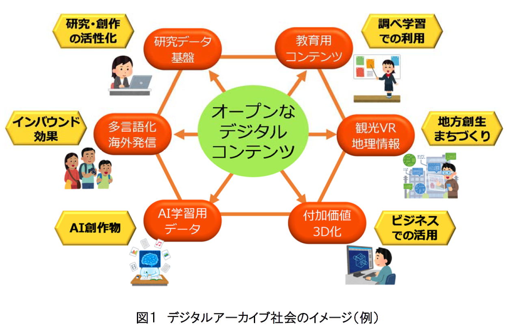
- 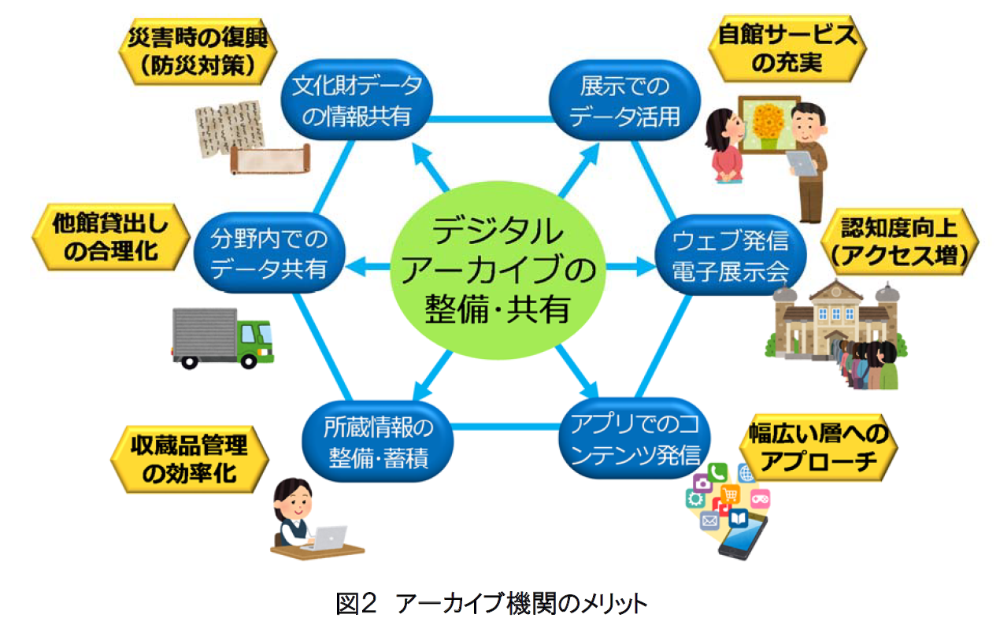
- 第１章 現状と課題
- １．諸外国の現状
- （１）アーカイブの構築と連携について
- （２）アーカイブの活用促進について
- ２．日本の現状
- （１）アーカイブの構築と連携について
- （２）アーカイブの活用促進について
- ３． 諸外国の現状を踏まえた日本の課題
- （１）アーカイブの構築と連携について
- ① デジタルアーカイブ構築と連携のための体制について
- ② 中小機関及び地方における課題について
- （２） アーカイブの活用促進について
- ① 自由に使えるデジタル情報資源の不足について
- ② 法的課題について
- 第２章 我が国におけるデジタルアーカイブ推進の在り方
- １．「共有」が支えるデジタルアーカイブサイクル
- 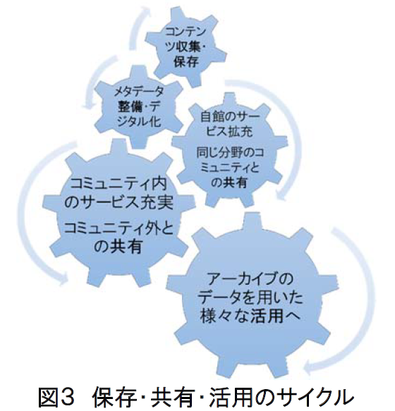
- ２．デジタルアーカイブ社会の構築
- 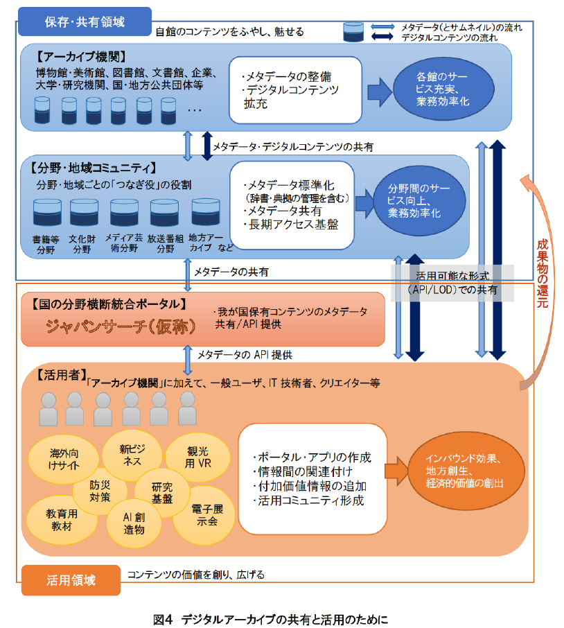
- ３．各アーカイブ機関に求められる役割
- （１） 「デジタルアーカイブの構築・共有・活用ガイドライン」の活用
- （２） 人材の確保及び育成
- （３） 評価指標の見直し
- （４） 海外発信の強化
- ４．つなぎ役に求められる役割
- （１） 分野/地方の独自性を反映したポータルの整備・提供
- （２） メタデータの整備推進、標準化及び用語の統制
- （３） デジタルコンテンツ等のオープン化の推進・二次利用条件の整備、活用促進の取組
- （４） デジタルコンテンツ拡充及び保存のための技術や法務上の業務支援
- （５） 評価指標の見直しとインセンティブの付与
- （６） 意識啓発・人材育成
- ５． 国や地方自治体等に求められる役割
- （１） デジタルアーカイブの積極的な活用
- （２） 活用コミュニティの形成支援
- （３） 各アーカイブ機関の課題解決支援策等
- （人的・財政的支援措置）
- （技術や法務上の業務支援のための整備）
- （地方における取組の支援）
- 第３章 今後の国の取組の方向性
- （１） 「デジタルアーカイブの構築・共有・活用ガイドライン」の策定
- （２） 国・地方自治体が保有するデジタル情報資源のオープン化推進
- （３）国の統合ポータル構築の取組推進
- （４）デジタルアーカイブ活用促進のためのフォーラムの設置の検討
- （５） つなぎ役の取組支援
- （６） アーカイブ機関の人材教育支援
- （７）アーカイブ機関による取組促進のためのインセンティブの検討
- 第４章 残された論点
- 国家戦略として、アーカイブ機関の取組をさらに強力にけん引するようなビジョンの構築とその実現のための枠組の継続的な検討が必要
- 国や公的機関が中心となり、アーカイブ機関が無理なくデータを整備・共有・連携できる共通基盤（プラットフォーム）の構築についての検討を行うことが望まれる
- おわりに
- （補足資料）
- 評価指標（例）一覧
- アーカイブ連携・活用の優良事例
- （関連資料）
-
- はじめに
- （本ガイドラインの背景）
- 様々なデジタル情報資源が、二次利用を促進する形でオープンに提供され、広く流通することが望まれる。
- 様々な立場の人が多様な目的で活用できるデジタル情報資源が増えることで、新たなイノベーションが生み出され、社会が活性化する。
- アーカイブ機関
- 博物館・美術館、図書館、文書館といった文化的施設に加えて、大学・研究機関、企業、市民団体、官公庁・地方公共団体などの有形・無形の様々なコンテンツを保有する機関・団体等
- （本ガイドラインの対象者と目的）
- （本ガイドラインにおける用語の整理）
- 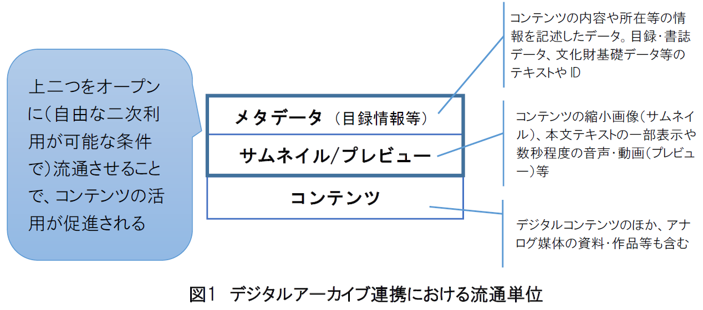
- １．我が国として目指すべきデジタルアーカイブ推進の方向性
- （デジタルアーカイブ社会）
- 〔保存・共有領域〕
- 〔活用領域〕
- ２．デジタルアーカイブの整備に当たって
- (1) メタデータの整備
- (2) サムネイル/プレビューの作成
- (3) デジタルコンテンツの作成・収集
- (4) 長期アクセスの保証のために
- ３．データを共有するに当たって
- (1) 公開ポリシーの考え方
- (2) 二次利用条件の表示方法
- (3) 望ましい利用条件（オープン化の推進）
- (4) 利用条件表示の検討に当たっての留意点
- (5) データ共有の方法
- ４．データを活用するに当たって
- (1) データの活用における留意点
- (2) 付加価値情報の付与
- (3) 情報間の関連付け
- (4) 活用の結果できた成果物の還元
- (5) 活用のためのコミュニティ形成
- おわりに
- （補足資料）
- ●用語集
- ●利用条件表示一覧
- （参考資料）
- ●確認すべき標準・ガイドライン等
- ●活用できる表形式のデータとは？
- ●よくある質問
- ●ガイドライン早見表
-
-
- （検討会報告書概要）
- １．（１）第四次産業革命と知財システムを取り巻く環境
- これまで
- 「モノ」に関する技術が競争力の源泉
- 多数存在する同業他社間での競争を通じて自前技術を確立し国際競争力を確保
- 「知財」として独占することと市場を広げる「標準」化を組み合わせたオープン＆クローズ戦略を推進
- 現在
- IoT、AI及びビックデータに代表される技術革新が進展
- 「データ」及びその「分析技術」、それらを活かした「ビジネスモデル」が新たな競争力の源泉に
- 様々なつながりにより新たな付加価値が創出される産業社会“Connected Industries” が到来
- オープン・イノベーションを通じて利益の獲得やビジネスを拡大することが求められている
- これから
- オープン＆クローズ戦略の対象の拡大・深化が必要
- 「知財」及び「標準」に「データ」を加えた三次元的な複合戦略が必要
- 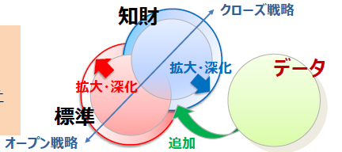
- １．（２）第四次産業革命と知財システムを取り巻く環境
- 知財、データ、標準の三次元的な複合戦略及び検討対象項目

- ２．データの利活用
- データ利活用に関しては、一定の法的基盤が整備されつつある
- 一方で、データを不正な利用から保護する仕組みが十分でない
- データの利活用やアクセスに関する権限は法的な位置付けが明確でなく契約に委ねられている
- 不正競争防止法等におけるデータの保護
- 不正競争防止法の改正を視野に入れ検討する
- （検討例）
- データの不正取得の禁止
- データに施される暗号化技術等の保護強化
- 営業秘密としているデータ分析方法等に係る民事訴訟の負担軽減（政令）
- （産業構造審議会「営業秘密の保護・活用に関する小委員会」において検討中、今春を目途に方向性のとりまとめ。）
- 情報のデジタル化を踏まえ、営業秘密管理指針・秘密情報の保護ハンドブックの記載を充実させる
- 利用権限に関する契約
- データの利用権限に関するガイドライン等の策定を行うための検討を行う
- （検討内容）
- 企業間におけるデータの利活用や契約の実態に即した、保護の在り方や契約等のルールについて
- ３．（１）産業財産権システム～「データ」・「サービス」等への対応～
- 今後のイノベーションにより、新たなデータ構造の創出が想定される
- IoTが普及する中、サービスとモノが結びついたビジネス関連発明の特許出願が増加している
- これら新たな競争力の源泉は、どのような要件を備えれば権利化できるのか、分かりづらい
- AI、３Dプリンティング、ネットワーク化等に関する技術の進展により、新たな課題も生じている
- データ構造の取扱いの明確化
- 特許の対象となるデータ構造の事例を公表（平成29年3月）
- 今後とも、予見性を高める取組を継続
- IoTを活用したビジネスモデルを支える知財
- 特許を着実に取得し活用するための環境を整備（平成29年度中）
- （具体例）
- ソフトウェア関連発明の審査基準の点検
- ビジネス関連特許の活用方法の整理
- 新設した特許分類の活用
- 分野横断的な審査体制の整備
- 新技術への対応
- 国境をまたいだ侵害行為に対する権利保護（裁判例の蓄積等を注視しつつ、引き続き検討）
- 将来的なAIによる発明等の産業財産権上の取扱い（現時点では、現行法で保護。今後の動向を注視）
- 3Dプリンティング用データの産業財産権上の取扱い（現時点では、現行法で保護。今後の動向を注視）
- ３．（２）産業財産権システム～特許紛争の解決～
- IoTの普及に伴い、企業間の連携が増加する中、知財の管理コストが増大するおそれ
- 米国では、パテント・トロール※１による濫用的な権利行使が社会問題化
- つなげる社会インフラの一部を構成する規格については、その実施に必要な特許をめぐる紛争が多発・長期化すれば、経済・産業に悪影響が及ぶおそれ
- 特に、中小・ベンチャー企業は、交渉や訴訟への対応に当たり困難に直面する可能性
- 標準必須特許に係る裁定制度の導入（標準必須特許）
- 標準必須特許をめぐる紛争を対象とし、行政が適正なライセンス料を決定するADR※２制度（標準必須特許裁定）の導入を検討
- 平成30年の特許法改正を目指し、検討を進める
- 紛争の早期解決に資するあっせん制度の検討（多様な紛争解決）
- ライセンス契約や特許権侵害紛争を対象とし、中小企業等が使いやすいADR制度（あっせん）について、検討
- 民間ADR（日本知的財産仲裁センター等）との関係を整理した上で、制度設計を検討
- 用語
- ※１パテント・トロール：ライセンス料や高額な和解金を得ることを目的とした権利行使をビジネスとする者
- ※２ADR（Alternative Dispute Resolution）：調停、あっせん等の、裁判以外の方法による紛争解決手段
- ４．国際標準化を推進するための体制・人材育成
- ハード分野のみならず、ソフト分野を含めた国際標準化を迅速に行うことの重要性が増加
- 標準化活動の中心は、デジュール※１からフォーラム／コンソーシアム※２へ変化
- 研究開発やビジネスの検討段階から、標準化活動を行わないと他国にスピードで追いつかない
- 領域融合的な分野では、従来の特定の工業会を主体とした標準化の取組が困難化
- 標準化体制の整備不足や国際標準化を支える人材の質的・量的に不足
- 各種ツールを活用した業種横断テーマの推進（標準化推進体制）
- 官民の標準化体制を強化
- （具体例）
- •「新市場創造型標準化制度」※３の活用
- •国立研究開発法人の更なる活用による業種横断プロジェクト組成の検討
- （ドイツ等と連携したスマートマニュファクチャリング分野の国際標準化等）
- 標準化人材育成の取組の強化（標準化人材育成）
- 「標準化人材を育成する３つのアクションプラン」※４等に基づき標準化人材を育成
- （具体例）
- 経営層の標準化に対する理解の深化
- 最高標準化責任者（CSO：Chief Standardization Officer）の設置
- 政府によるルール形成戦略に関する情報の収集体制を強化等
- 標準関連業務に関与する知財に関する専門家としての弁理士の役割を明確化
- 用語
- ※１デジュール標準：公的な機関で明文化され公開された手続により作成された規格
- ※２コンソーシアム／フォーラム標準：特定分野に関心のある企業等が集まり、合意により作成された規格
- ※３国内における業界団体を通じたコンセンサスを求めない規格化の仕組み
- ※４産官学から構成される「標準化官民戦略会議」の下の標準化人材WGにおいて、平成29年１月に本プランを策定
- ５．個別産業分野及び中小・ベンチャー企業等の視点からの検討
- 個別産業分野で行うことが適当な取組例
- ものづくり等（ロボット分野）
- エッジコンピューティング※等のビジネスモデルを意識した知財ポートフォリオの構築
- 工場のネットワーク化のためのデータフォーマットの国際標準化の推進など
- モビリティ（自動車分野）
- 車両データ等の第三者による不正利用に対する保護のルール作り
- 商習慣の異なるIT業界による特許の動向を踏まえた、知財戦略の構築など
- 健康・医療・介護（医療・介護及びバイオ分野）
- 医療技術に関する事業者間のデータの保護のルール作り
- 臨床データ等の取得方法やその保存のためのデータフォーマットの国際標準化の推進など
- 中小企業等の支援の観点から行うことが適当な取組例
- 「地域知財活性化行動計画」（平成28年９月策定）に基づく、国内外での特許取得や海外展開の支援
- 「新市場創造型標準化制度」を利用した迅速な標準化による市場拡大の支援
- 大企業と中小・ベンチャー企業との連携の促進
- 用語
- ※エッジコンピューティング：デバイス側に高度な情報処理機能を持たせ一定の処理を分散的に行わせることで、通信環境に左右されることなく大量のデータを処理する情報処理形態。
- （検討項目詳細等）
- ＩｏＴ俯瞰図（データ、産業財産権、標準の絡み合い）
- 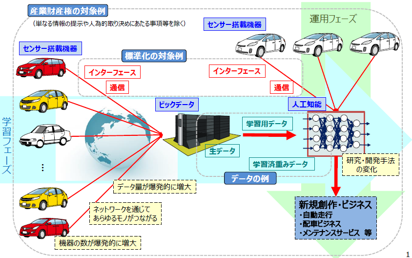
- 不正競争防止法等におけるデータ保護の在り方
- 利用権限に関する契約の在り方
- データの取扱いに関しては、他者とデータを融通し合う商慣行や取決めが根付いておらず、契約当事者間でのデータを巡る権利関係の整理・明確化も必ずしも進んでいない。

- 企業間におけるデータの利活用や契約の実態に即した、保護の在り方や契約等のルールについて検討し、ガイドライン等を策定する。
- 産業財産権の対象としてのデータの取扱いの明確化
- 構造を有するデータについては、特許の対象となり得るが、具体的にどのような構造を備えれば特
許の対象となるのか、分かりづらい。 
- 審査での判断手法を示すべく、審査ハンドブックでわかりやすい事例を公表済（平成29年3月）。
- 今後も権利取得の予見性を高める取組を行う。
- IoTを活用したビジネスモデルを支える知財システムの在り方
- どのようなビジネス関連発明が特許されるのか、取得した特許をどう活用すればいいのか分かりづらい。
- IoT化はあらゆる技術分野に及ぶため、先行技術調査や審査の困難性が増している。
- 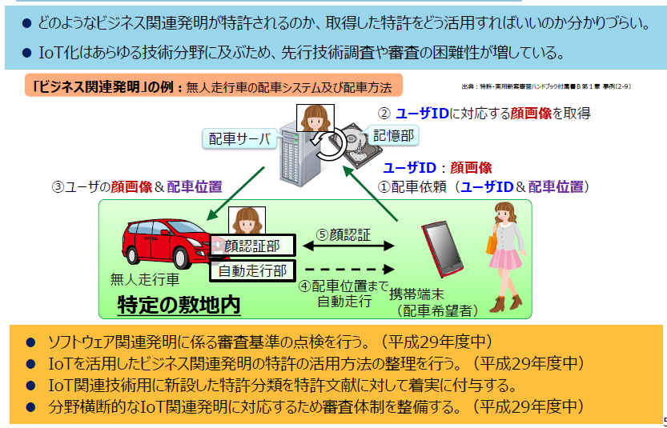
- ソフトウェア関連発明に係る審査基準の点検を行う。（平成29年度中）
- IoTを活用したビジネス関連発明の特許の活用方法の整理を行う。（平成29年度中）
- IoT関連技術用に新設した特許分類を特許文献に対して着実に付与する。
- 分野横断的なIoT関連発明に対応するため審査体制を整備する。（平成29年度中）
- 国境をまたいだ侵害行為に対する権利保護の明確化
- 特許発明の構成要件の一部が日本国外(例国外サーバ)で実施された場合に、特許権侵害に該当しないと判断されるおそれがある。

- 厳格な属地主義にとらわれずに、特許発明の実施地が日本国内であると柔軟に解釈することが考えられる。
- 他国における法適用の状況や、今後の裁判例の蓄積等を注視しつつ、引き続き検討を行う。
- 将来的なAIによる発明等の産業財産権上の取扱いの明確化
- AIの技術進展により人間の関与が小さくなった創作に関し、成果物として得られた発明等の取扱いや、発明者の特定等について、論点を整理する必要がある。
- 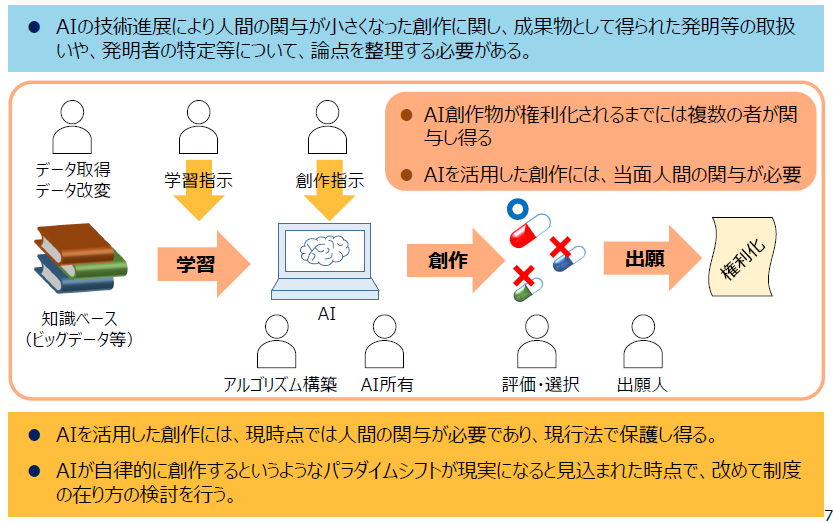
- AIを活用した創作には、現時点では人間の関与が必要であり、現行法で保護し得る。
- AIが自律的に創作するというようなパラダイムシフトが現実になると見込まれた時点で、改めて制度の在り方の検討を行う。
- 3Dプリンティング用データの産業財産権上の取扱いの明確化
- 産業財産権を有する物品が3Dデータを介して複製された場合、三次元データの作成者等に対し、間接侵害を訴えることができるか否かを整理する必要がある。

- 「プログラム等」に該当する3Dデータは、保護の客体にも、間接侵害を構成する「物」にもなりうる。
- データ・データ構造については、審査での判断手法を示すべく、審査ハンドブックでわかりやすい事例を公表済（平成29年3月）。
- 今後、社会的なニーズが高まった場合には、必要な措置について検討を行う。
- 標準必須特許を始めとする多様な特許紛争の迅速・簡便な解決①
- IoTの普及に伴い、様々なつながりが増加する中、知財（特に情報通信技術を利用する分野）の管理コストが増大するおそれ。米国では、パテント・トロール※による濫用的な権利行使が社会問題化
- つなげる社会インフラの一部を構成する規格について、その実施に必要な特許をめぐる紛争が多発・長期化すれば、経済・産業に悪影響が及ぶおそれ

- 標準必須特許をめぐる紛争を対象とし、行政が適正なライセンス料を決定するADR※制度（標準必須特許裁定）の導入を検討
- 標準必須特許を始めとする多様な特許紛争の迅速・簡便な解決②
- IoTの普及に伴い、中小・ベンチャー企業を含む多様な企業間の連携が増加する中、知財の管理コストが増大するおそれ
- 特に、中小・ベンチャー企業は、交渉や訴訟への対応に当たり困難に直面する可能性

- ライセンス契約や特許権侵害紛争を対象とし、中小企業等が使いやすいADR※制度（あっせん）について、民間ADR（日本知的財産仲裁センター等）との関係を整理した上で、制度設計を検討。
- 新市場創造型標準化制度や国立研究開発法人を活用した業種横断プロジェクトの推進
- 研究開発から標準化等が並行的に推移する中、①標準化の対象拡大（システム分野への広がり）、②標準獲得手法の複線化（デジュール＋フォーラム／コンソーシアム、デファクト）に対応する必要がある。
- 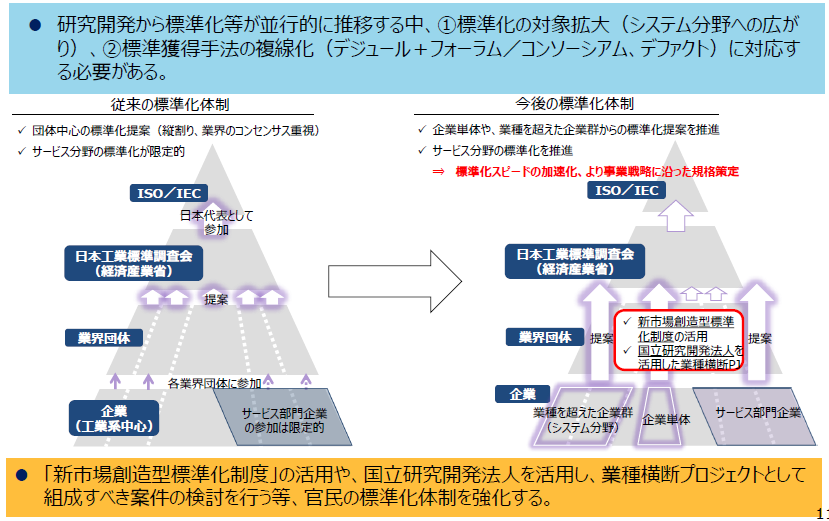
- 「新市場創造型標準化制度」の活用や、国立研究開発法人を活用し、業種横断プロジェクトとして組成すべき案件の検討を行う等、官民の標準化体制を強化する。
- 国際標準化を推進するための体制・人材育成の在り方
- 欧米の戦略的な標準化や新興国の対応に対抗するため、標準化人材を確保・育成する必要がある。

- 産学官から構成される標準化官民戦略会議の下に設置された標準化人材育成WGにおいて策定した「標準化人材を育成する3つのアクションプラン」（平成29年1月）等に基づき標準化人材育成の取組の強化する。
- 標準関連業務に関与する知財に関する専門家としての弁理士の役割を明確化する。
- 中小・ベンチャー企業等における今後の対応

- 第四次産業革命の下で中小・ベンチャー企業等を取り巻くビジネス環境は変化
- 課題と対応策
- IoT化に対応したビジネスに必要な特許を国内外で取得できていない。知財の重要性に関する認識が不十分
- 「地域知財活性化行動計画」（2016年９月策定）に基づいた、国内外での特許取得支援や、相談から出願、侵害対策まで一体となった海外展開支援の活用促進
- 技術競争力の獲得による市場拡大
- 新市場創造型標準化制度を利用した迅速な標準化の実現により、市場拡大を支援
- 中小・ベンチャー企業と大企業との連携促進
- 知財のマッチング等の推進
- 連携の際の留意点や連携で生じた懸念等に関する相談を知財総合支援窓口で受付
- 営業秘密の保護・管理に関する普及啓発
- 大企業が中小・ベンチャー企業との積極的な連携を通じて挙げた顕著な実績を知財功労賞の選考に反映
- 第四次産業革命に対応するための支援にあたっては、中小・ベンチャー企業等の実情を考慮する。
-
- 構成
- イノベーション創出
- I-3グローバル市場をリードする知財・標準化戦略の一体的推進
- ・総合的な知財マネジメントの推進（知財に加えデータ・標準等）
- ・国立研究開発法人を活用した業種横断的な標準化の推進、人材育成
- I-2 知財システム基盤の整備
- ・証拠収集手続の強化
- ・ＡＤＲ制度（標準必須特許裁定）の創設
- I-1 データ、人工知能の利活用促進による産業競争力強化に向けた知財制度の構築
- ・データ利用の契約ガイドラインの策定
- ・不正競争防止法改正（データの不正取得等の禁止等）
- ・著作権法改正（柔軟性のある権利制限規定の整備）
- ・ＡＩ学習済モデルの特許化の具体的要件や保護範囲の検討
- Ｉ第４次産業革命（Society5.0）の基盤となる知財システムの構築
- 地方創生
- II-2地方・中小企業による知財活用と産学・産産連携の推進
- ・中小企業への知財意識の普及啓発、知財を活用した海外展開支援
- ・産学連携の橋渡し・事業化支援
- II-1 「攻め」の農林水産業・食料産業等を支える知財活用・強化
- ・地理的表示(GI)や植物品種の国内外での保護、相談体制の充実
- ・我が国農林水産物の強みをアピールするJAS規格の制定
- ・データ等を活用したスマート農業の推進
- II-3 「国民一人ひとりが知財人材」を目指した知財教育・知財人材育成の推進
- ・新学習指導要領における知財教育の充実
- ・「知財創造教育推進コンソーシアム」によるカリキュラム・教材開発
- ・「地域コンソーシアム」構築
- ＩＩ知財の潜在力を活用した地方創生とイノベーション推進
- 文化創造
- III-1 コンテンツの海外展開促進と産業基盤の強化
- ・「クールジャパン官民連携プラットフォーム」、地方版クールジャパン会議と拠点構築・相互連携
- ・コンテンツ分野の人材育成・教育機関との連携
- III-2 映画産業の振興
- ・制作支援強化や資金調達の多様化による中小制作会社等の海外展開促進
- ・ロケ撮影の環境改善に係る官民連絡会議
- III-3 デジタルアーカイブの構築
- ・国として分野横断統合ポータルを構築し、産学官連携の下、研究・ビジネス・インバウンド等に活用
- ＩＩＩ２０２０年とその先の日本を輝かせるコンテンツ力の強化
- 本文
- はじめに
- I．第４次産業革命（Society5.0）の基盤となる知財システムの構築
- １．データ・人工知能（AI）の利活用促進による産業競争力強化に向けた知財制度の構築
- （１）現状と課題
- （２）今後取り組むべき施策
- ２．知財システム基盤の整備
- （１）現状と課題
- （２）今後取り組むべき施策
- ３．グローバル市場をリードする知財・標準化戦略の一体的推進
- （１）現状と課題
- （２）今後取り組むべき施策
- II．知財の潜在力を活用した地方創生とイノベーション推進
- １．攻めの農林水産業・食料産業等を支える知財活用・強化
- （１）現状と課題
- （２）今後取り組むべき施策
- ２．地方・中小企業による知財活用と産学・産産連携の推進
- （１）現状と課題
- （２）今後取り組むべき施策
- ３．「国民一人ひとりが知財人材」を目指した知財教育・知財人材育成の推進
- （１）現状と課題
- （２）今後取り組むべき施策
- Ⅲ．2020 年とその先の日本を輝かせるコンテンツ力の強化
- １．コンテンツの海外展開促進と産業基盤の強化
- （１）現状と課題
- （２）今後取り組むべき施策
- ２．映画産業の振興
- （１）現状と課題
- （２）今後取り組むべき施策
- ３．デジタルアーカイブの構築
- （１）現状と課題
- （２）今後取り組むべき施策
- 我が国における分野横断型統合ポータル構築に向けたアーカイブ間の連携と利活用を促進するため、関係府省において以下の取組を推進することとする。
- ①アーカイブ間連携と利活用の促進
- （産学官でのデジタルアーカイブのフォーラムの開催）
- （デジタルアーカイブ推進のための工程表の作成）
- （国の統合ポータルの構築）
- （国の各アーカイブ機関におけるガイドラインの順守）
- （利活用の推進のための連携）
- （地方におけるアーカイブ連携の促進）
- ②分野ごとの取組の促進
- （分野ごとのつなぎ役による取組と支援）
- （分野横断の取組）
- （書籍等分野）
- （文化財分野）
- （メディア芸術等分野）
- （放送コンテンツ分野）
- ③アーカイブ利活用に向けた基盤整備
- （オープン化の促進）
- （アーカイブの構築と利活用の促進のための著作権制度の整備）
- （利活用の促進のための周辺環境の整備）
- （アーカイブ関連人材の育成）
- デジタルアーカイブジャパン推進委員会（第1回）（2017年9月5日）
- 文化芸術関連
- 文化庁文化審議会
-
-
- 第一 趣旨
- １．文化芸術の振興にとどまらず、観光、まちづくり、国際交流、福祉、教育、産業その他の各関連分野における施策を法律の範囲に取り込むこと
- ２．文化芸術により生み出される様々な価値を文化芸術の継承、発展及び創造に活用すること
- 第二 改正の概要
- １．題名等
- 法律の題名を「文化芸術基本法」に改めるとともに、前文及び目的について所要の整理を行う。
- ２．総則
- 基本理念を改めるとともに、文化芸術団体の役割、関係者相互の連携及び協働並びに税制上の措置を規定する。
- 〈基本理念の改正内容〉
- ①「年齢、障害の有無又は経済的な状況」にかかわらず等しく文化芸術の鑑賞等ができる環境の整備
- ②我が国及び「世界」において文化芸術活動が活発に行われる環境を醸成
- ③児童生徒等に対する文化芸術に関する教育の重要性
- ④観光、まちづくり、国際交流などの各関連分野における施策との有機的な連携
- ３．文化芸術推進基本計画等
- 政府が定める「文化芸術推進基本計画」、地方公共団体が定める「地方文化芸術推進基本計画」（努力義務）について規定する。
- ４．基本的施策
- ① 芸術、メディア芸術、伝統芸能、芸能の振興について、伝統芸能の例示に「組踊」を追加するとともに、必要な施策の例示に「物品の保存」、「展示」、「知識及び技能の継承」、「芸術祭の開催」などへの支援を追加。
- ② 生活文化の例示に「食文化」を追加するとともに、生活文化の振興を図る。
- ③ 各地域の文化芸術の振興を通じた地域の振興を図ることとし、必要な施策の例示に「芸術祭への支援」を追加。
- ④ 国際的な交流等の推進に関する必要な施策の例示に「海外における我が国の文化芸術の現地の言語による展示、公開その他の普及への支援」及び「文化芸術に関する国際機関等の業務に従事する人材の養成及び派遣」を追加。
- ⑤ 芸術家等の養成及び確保に関する必要な施策の例示に国内外における「教育訓練等の人材育成への支援」を追加。
- など
- ５．文化芸術の推進に係る体制の整備
- 政府の文化芸術推進会議、地方公共団体の文化芸術推進会議等について規定する。
- 第三 その他
- 文化芸術に関する施策を総合的に推進するため、文化庁の機能の拡充等について、その行政組織の在り方等を含め検討を加え、必要な措置を講ずる。
-
- 「文化芸術振興基本法」の改正要望【文化芸術振興議員連盟】
-
- 「文化芸術振興基本法」から「文化芸術基本法」へ改正
- 文化省の創設
- 実演芸術、映画、美術など芸術分野の固有の政策を確立、充実するため、
- 「国立劇場」、「国立映画センター」、「芸術助成機構」、「国立美術館」、「国立文化財機構」を専門機関として文化芸術振興施策の軸として確立し、
- 全国の特長ある地域文化、観光、まちづくりを視野に入れた地域文化振興を図る文化行政広域圏事務所、さらに世界的な文化芸術、観光、外交、国際文化交流、文化産業の振興などを視野とした重層的、総合的な文化行政を展開する必要がある。
- 新たな文化芸術基本法による政策を実現する体制づくりには、まず文化大臣を配置し、2020年に向け東京五輪文化プログラムを梃子としてさらなる政策・予算の充実を図る必要がある。
- そのため文化関連予算の国家予算に占める割合をまずは倍増し、長期的に0.5％（約1000億円から5000億円）に高め、文化省を創設することを強く要望する。
- 文化芸術振興基本法の一部を改正する法律案要綱案 （平成29年4月6日）
- 第四 文化芸術に関する基本的施策の拡充
- 二 メディア芸術の振興に係る規定に関する改正
- メディア芸術の振興に関する必要な施策の例示としてメディア芸術の「展示」、「メディア芸術の制作等に係る物品の保存」及び「メディア芸術に係る知識及び技能の継承」への支援を加えるとともに、「芸術祭等の開催」を加えること。 （第九条関係）
- （現行法では、メディア芸術という分野＝映画，漫画，アニメーション及びコンピュータその他の電子機器等を利用した芸術）と定義されている。）
-
-
- 対象期間を、2020年度までのおおむね６年間（平成27年度～平成32年度）
- 我が国が目指す「文化芸術立国」の姿
- ✔あらゆる人々が全国様々な場で創作活動への参加、鑑賞体験ができる機会の提供
- 子供から高齢者まで，あらゆる人々が我が国の様々な場で，創作活動へ参加，鑑賞体験できる機会等を，国や地方公共団体はもとより，NPO，企業等様々な民間主体が提供している。
- ✔ 2020年東京大会を契機とする文化プログラムの全国展開
- 全国の地方公共団体，多くの文化芸術団体，文化施設，芸術家等の関係者により，世界に誇る日本各地の文化力を生かしながら，2020年東京大会を契機とする文化プログラムの全国展開等がなされている
- ✔被災地からは復興の姿を、地域の文化芸術の魅力と一体となり国内外へ発信
- 日本全国津々浦々から，世界中に各地の文化芸術の魅力が発信されている。 東日本大震災の被災地からは，力強く復興している姿を，地域の文化芸術の魅力と一体となって，国内外へ発信している。
- ✔文化芸術関係の新たな雇用や産業が現在よりも大幅に創出
- 2020年東京大会を契機とする文化プログラムの全国展開等に伴い，国内外の多くの人々が，それらに生き生きと参画しているとともに，文化芸術に従事する者が安心して，希望を持ちながら働いている。そして，文化芸術関係の新たな雇用や，産業が現在よりも大幅に創出されている。
- 第３ 文化芸術振興に関する基本的施策
- １ 文化芸術各分野の振興
- （１）芸術の振興
- （２）メディア芸術の振興
- （２）メディア芸術の振興
- （４）芸能の振興
- （５）生活文化，国民娯楽及び出版物等の普及
- （６）文化財等の保存及び活用
- ２ 地域における文化芸術振興
- ３ 国際交流等の推進
- ４ 芸術家等の養成及び確保等
- ５ 国語の正しい理解
- 「文字・活字文化振興法」（平成17 年法律第91 号）に基づき，図書館や学校等において，国民が豊かな文字・活字文化の恵沢を享受できるよう，環境の整備を図る
- ６ 日本語教育の普及及び充実
- ７ 著作権等の保護及び利用
- ８ 国民の文化芸術活動の充実
- （１）国民の鑑賞等の機会の充実
- （２）高齢者，障害者等の文化芸術活動の充実
- （３）青少年の文化芸術活動の充実
- （４）学校教育における文化芸術活動の充実
- ９ 国民の文化芸術活動の充実
- （１）劇場，音楽堂等の活性化
- （２）美術館，博物館，図書館等の充実
- 図書館が，資料や情報等の継続的な収集，調査研究への支援や資料の利用相談，時事情報の提供等の機能を充実させることにより，地域を支える情報拠点となるよう，先進事例の収集・情報提供や図書館の充実方策を提示するなどの支援を行う。
- 地域や住民にとって役に立つ，魅力ある図書館づくりの核となる司書等の資質向上を図るため，研修等の充実を図る。
- 各地域に所在する貴重な文化芸術資源の計画的・戦略的な保存・活用を図るため，博物館・図書館・公文書館（ＭＬＡ）等の連携の促進に努める。
- 人口過少地域における博物館や図書館等の活動の活性化を図るため，情報通信技術の活用により，遠隔地間の連携による研修や遠隔講座等の実証研究を行う。
- （３）地域における文化芸術活動の場の充実
- １０ その他の基盤の整備等
- （１）情報通信技術の活用の推進
- （２）地方公共団体及び民間の団体等への情報提供等
- 国内外の文化芸術に関する各種の情報や資料の収集・保存（アーカイブの構築）及び活用方法について検討を行い，国立国会図書館をはじめとする関係機関と連携し，国と民間，国と地方公共団体との役割分担を図りつつ，国民に提供する。
- （３）民間の支援活動の活性化等
- （４）関係機関等の連携等
- （５）顕彰
- （６）政策形成への民意の反映等
- 重点戦略４：国内外の文化的多様性や相互理解の促進
- 貴重な各種文化芸術資源を継承し，次代の文化芸術創造の基盤となる知的インフラを構築するため，映画，舞台芸術，アニメ，マンガ，ゲーム，デザイン，写真，建築，文化財等の文化資産及びこれらの関連資料等の収集・保存及びデジタルアーカイブ化等を，国立国会図書館等の関係機関と連携しつつ促進する。
-
- 報告書（案）
- はじめに
- 第１章 新たな時代のニーズに的確に対応した権利制限規定の在り方等
- 第１節 問題の所在
- 第２節 検討手法と検討経過
- 第３節 検討結果（権利制限規定の整備について）
- 第４節 検討結果（ライセンシング体制の充実について）
- 第５節 優先的に検討することとしたニーズ以外のニーズについて
- おわりに
- 第２章 教育の情報化の推進等
- 第１節 教育機関における著作物利用の円滑化
- 第２節 デジタル教科書
- 第３章 障害者の情報アクセス機会の充実
- 第４章 著作物等のアーカイブの利活用促進
- 第１節 著作物等の保存に係る著作権制度上の課題
- 第２節 著作物等の活用に係る著作権制度上の課題
- 第３節 著作物等の流通推進のための権利処理の円滑化について
- おわりに
- 付属資料
- １ 新たな時代のニーズに的確に対応した権利制限規定の在り方等（第１章）参考資料
- ２ 委員名簿
- ３ 審議経過
- ４ ヒアリング・意見発表団体一覧
- ポイント
- 複数の権利制限規定の組合せによる「多層的」な対応
- ［第１層］著作物の本来的利用には該当せず，権利者の利益を通常害さないと評価できる行為類型
- ①著作物の表現の知覚を伴わない利用行為（例：情報通信設備のバックエンドで行われる著作物の蓄積等）
- ②著作物の表現の知覚を伴うが，利用目的・態様に照らして当該著作物の表現の享受に向けられたものと評価できない行為（例：技術開発の試験の用に供するための著作物の利用等）
- 解釈
- 著作権者の許諾なしに書籍を全文電子テキスト化することを認める
- ［第２層］著作物の本来的利用には該当せず，権利者に及び得る不利益が軽微な行為類型
- インターネット検索サービスの提供に伴い必要な限度で著作物の一部分を表示する場合
- 所在検索や情報分析の結果提供の際に表示する目的でその準備のために行われる複製行為
- 解釈
- 人工知能（AI)を活用した多様な検索、情報分析に活用することを認める
- スニペット表示を認める
- ［第３層］公益的政策実現のために著作物の利用の促進が期待される行為類型
- 著作物の本来的利用を伴う場合も含むが，文化の発展等の公益的政策目的の実現のため権利者の利益との調整が求められる行為類
- 引用，教育，障害者，報道等の様々な場面に係る権利制限規定がこれに該当
- 権利者に及び得る不利益の度合に応じた権利制限規定の３つの層について
- 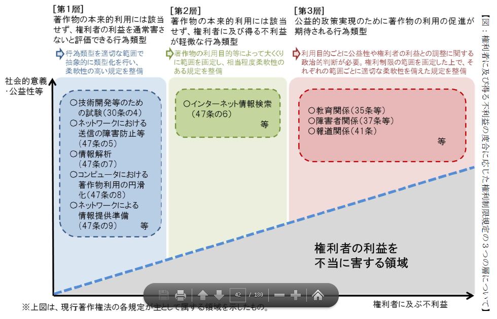
- 経済産業関連
- 2017年版ものづくり白書【2017年6月6日METI】
- 第１部 ものづくり基盤技術の現状と課題
- 第１章 我が国ものづくり産業が直面する課題と展望
- 第１節 我が国製造業の足下の状況
- １ 我が国製造業の業績動向
- （１） 企業業績と金融市場の動向
- （２）実体経済への波及と「好循環」へ向けた動き
- ２ 経常収支の黒字縮小と稼ぎ方の変化
- （１）我が国の製造業と貿易収支
- （２）海外展開に伴い所得・サービス収支でも稼ぐ我が国製造業
- （３）地域に応じて稼ぎ方を変える我が国製造業
- ３ グローバル最適地生産の中での製造業の役割
- （１）最適地生産の中でみられた国内回帰の動き
- （２）日米間の貿易構造
- ４ 製造業と雇用の関係
- （１）ものづくりが雇用に与える影響
- （２）我が国製造業における労働供給面での課題
- ５ 我が国製造業の低収益性と第四次産業革命下における国内外の取組状況8
- （１）我が国製造業の付加価値獲得の現状
- （２）第四次産業革命へ向けた我が国製造業の取組状況
- （３）製造業の第四次産業革命への対応に向けた政府の取組
- （４）民間推進団体を中心とした取組
- （５）各国の取組状況
- （６）各国との協力
- ６ 第１節のまとめ
- 第２節 産業タイプ別の第四次産業革命への対応
- １ 顧客などの課題解決を行う「ソリューション」起点でのデジタル技術の活用
- ２ 製造業・産業タイプ別の分類
- ３ 製造業・産業タイプ別の取組の方向性
- （１）最終製品
- （２）部品・部材
- （３）素材
- （４）設備
- ４ 今後の取組に向けた課題
- （１）全般的な示唆
- （２）産業タイプごとの特徴
- 第３節 我が国製造業の変革の方向性
- １ 技術革新に伴う「顧客価値の実現」の手段の変化：「モノの所有」から「機能の利用」、「体験の提供」へ
- ２ 思考：｢顧客起点｣かつ｢全体最適化｣の重要性
- （１）「顧客起点」に基づいた事業全体のバリューチェーンの「全体最適化」
- （２）デザイン思考とは
- （３）システム思考とは
- （４）重要性を増す「システム思考」「デザイン思考」と人材育成プログラム6
- （５）顧客起点・システム思考による全体最適化に重要な「機能的価値」と「意味的価値」の統合
- ３ 行動特性：俊敏（アジャイル）な経営と価値最大化の仕組みづくりの重要性
- （１）顧客ニーズへの迅速な対応に向けた俊敏（アジャイル）な経営
- （２） 価値の最大化の仕組みづくり（プラットフォーム構築、スケーラブルなモデルへの志向、エコシステムの構築など）
- ４ 手段：アライアンス構築や外部資源活用などの重要性
- （１）外部経営資源の活用
- （２）M&A の活用
- （３）ベンチャー企業との連携
- ５ 「強い現場」の維持・強化
- （１）現場力のあり方
- （２）人手不足対策
- （３）レジリエンス対策
- ６ “Connected Industries” の実現に向けたIoT などのデジタルツールの利活用などのための環境整備
- （１）産業サイバーセキュリティ
- （２）人材育成
- （３）データ流通促進にむけたルール整備など
- （４）標準化
- （５）その他（規制見直しなど）
- 第２章 ものづくり産業における人材の確保と育成に関する課題と対応
- 第１節 ものづくり産業における中小企業の人材の確保と育成に関する課題と対応
- １ ものづくり産業における中小企業の現状
- （１）ものづくり産業における中小企業の役割
- （２）ものづくり産業における中小企業を取り巻く社会・経済環境
- ２ ものづくり産業における中小企業の人材の確保及び育成の現状
- （１）社会・経済環境の変化と人材の確保、定着及び育成の状況
- （２）人材の確保、定着及び育成に関する課題
- （３）人材の定着・育成などのために行われている取組
- （４）今後、ものづくり産業が成長していく上で、求められる人材像
- ３ ものづくり産業における中小企業の人材の定着・育成などのために行われている取組
- 第２節 ものづくり産業における人材育成支援の取組について
- １ より効果的なものづくり訓練に向けて
- （１）訓練ニーズを踏まえたものづくり訓練の実施
- （２）ものづくりの現場に求められる能力を身につけることのできる職業訓練の実施
- （３）産業界や地域の訓練ニーズを踏まえた訓練分野の不断の見直し
- ２ 民間で実施する職業訓練の向上に向けて
- （１）民間企業における職業訓練
- （２）事業主団体等が実施する認定職業訓練
- （３）訓練の質の向上に向けて
- ３ 女性技能者育成の支援
- （１）女性に対する製造業の魅力の発信
- （２）女性のものづくり分野への入職促進・定着促進
- ４ 若者のものづくり離れへの対応
- （１）ポリテクカレッジを始めとする学卒者訓練
- （２）若年者への技能継承
- （３）ものづくりの魅力発信
- （４）地域若者サポートステーション
- ５ 社会的に通用する能力評価制度の構築
- （１）技能検定制度
- （２）職業能力評価基準
- （３）社内検定認定制度
- ６ キャリア形成支援
- （１）キャリアコンサルティング
- （２）ジョブ・カード制度の活用
- （３）教育訓練給付制度
- 第３章 ものづくりの基盤を支える教育・研究開発
- 第１節 超スマート社会の実現に向けた優れたものづくり人材の育成
- １ 科学技術イノベーション人材の育成
- （１）先端基盤技術を高度に活用できる人材の育成
- （２）優れた若手研究者の育成・活躍促進
- （３）多様な場で活躍できる人材の育成
- （４）次代を担う科学技術イノベーション人材の育成
- （５）産業界と連携した理工系人材の戦略的育成
- （６）経済成長を担うグローバル人材の育成
- ２ ものづくりにおける女性の活躍促進
- （１）女性研究者への支援
- （２）理系女子支援の取組
- （３）理系女性に求められるスキルの見える化の取組
- 第２節 ものづくり人材を育む教育・文化基盤の充実
- １ ものづくりへの関心・素養を高める理数教育の充実等
- （１）小・中・高等学校の各教科におけるものづくり教育
- （２）科学技術を支える理数教育の充実
- （３）小・中・高等学校におけるプログラミング教育
- ２．各学校段階における特色ある取組
- （１）大学の人材育成の現状及び特色ある取組
- （２）高等専門学校の人材育成の現状及び特色ある取組
- （３）専門高校の人材育成の現状及び特色ある取組
- （４）専修学校の人材育成の現状及び特色ある取組
- ３ キャリア教育・職業教育の充実
- （１）キャリア教育・職業教育の充実
- （２）社会人の学び直しの取組
- ４ ものづくりの理解を深めるための生涯学習
- （１）ものづくりに関する科学技術の理解の促進
- （２）公民館・図書館・博物館などにおける取組
- ５ 伝統的なものづくり技術等の後世への伝承
- （１）重要無形文化財の伝承者養成
- （２）選定保存技術の保護
- （３）地域における伝統工芸の体験活動
- 第３節 超スマート社会を実現するための研究開発の推進
- １ ものづくりに関する基盤技術の研究開発
- （１）新たな計測分析技術・機器の研究開発
- （２）最先端の大型研究施設の整備・活用の推進
- （３）未来社会を見据えた先端基盤技術の強化
- （４）その他のものづくり基盤技術開発
- ２ 産学官連携を活用した研究開発の推進
- （１）産学共同研究等、技術移転のための研究開発、成果の活用促進
- （２）大学等における研究成果の戦略的な創出・管理・活用のための体制整備
- （３）地域イノベーション創出のための取組
- 第２部 平成28 年度においてものづくり基盤技術の振興に関して講じた施策
- 第1 章 ものづくり基盤技術の研究開発に関する事項
- 第1 節 ものづくり基盤技術に関する研究開発の推進等
- １ ものづくり基盤技術に関する研究開発の実施及びその普及
- （１）研究開発税制等の推進
- （２）ものづくり基盤技術の開発支援
- （３）国家基幹技術の開発・利用によるものづくり基盤の強化
- （４）提案公募型の技術開発支援
- （５）オープンイノベーション拠点TIA の取組
- （６）先端技術の実用化への橋渡し支援
- ２ 技術に関する研修及び相談・助言等
- （１）（独）中小企業基盤整備機構における窓口相談・専門家派遣、人材・情報提供事業4
- （２）中小企業・小規模事業者ワンストップ総合支援事業
- ３ 知的財産の取得・活用に関する支援
- （１）模倣品・海賊版対策について
- （２）知的資産経営の推進
- （３）営業秘密管理
- （４）知財権情報の活用・出願手続等に関する支援
- （５）権利化に対する支援
- （６）知的財産の戦略的な活用に対する支援
- ４ 戦略的な標準化・認証の推進
- （１）中堅･中小企業等における標準化の戦略的活用の推進
- （２）戦略的な国際標準化の推進
- （３）戦略的なJIS 化の推進
- （４）世界に通用する認証基盤の強化
- （５）アジア諸国等との協力関係強化
- （６）標準化人材の育成 267
- 第２節 ものづくり事業者と大学等の連携
- １ 大学等の能力を活用した研究開発の促進
- （１）大学発新産業創出拠点プロジェクト（START）
- （２）研究成果最適展開支援プログラム（A-STEP）
- （３）産学共創プラットフォーム共同研究推進プログラム（OPERA）
- （４）地域イノベーション・エコシステム形成プログラム
- （５）センター・オブ・イノベーション（COI）プログラム
- （６）マッチングプランナープログラム
- ２ 大学等の研究成果の利用の促進
- （１）知財活用支援事業
- （２）産学連携知的財産アドバイザーによる支援
- （３）グローバルアントレプレナー育成促進事業（EDGE プログラム）
- 第２章 ものづくり労働者の確保等に関する事項
- 第１節 失業の予防その他雇用の安定
- １ 景気循環に対応した雇用の維持・安定対策
- （１）雇用調整助成金による雇用の維持・安定
- （２）労働移動支援助成金による失業なき労働移動の実現
- ２ 労働力需給調整機能の強化
- （１）雇用関係情報の積極的な提供等
- （２）製造業の請負事業の適正化及び雇用管理改善の推進
- ３ 若年者の就業支援の推進及び職業意識の啓発
- （１）地域若者サポートステーション
- ４ いくつになっても働ける社会の実現
- （１）希望すれば働き続けられる高齢者雇用の促進
- （２）高年齢者等の再就職支援の促進
- （３） 高年齢者が地域で働ける場や社会を支える活動ができる場の拡大
- 第２節 職業能力の開発及び向上
- １ 職業能力開発対策の推進
- （１）公共職業訓練の推進
- （２） 求職者支援制度の推進
- ２ 事業主が行う職業能力開発の推進状況
- （１）事業主に対する助成金の支給
- （２）認定職業訓練に対する支援
- ３ 労働者の自発的な職業能力開発のための環境整備
- （１）教育訓練給付制度
- ４ 職業能力形成機会に恵まれない者に対する能力開発支援
- （１）ジョブ・カード制度の推進
- 第３節 ものづくりに関する能力の適正な評価、労働条件の確保・改善
- １ 職業能力評価制度の整備
- （１）技能検定制度の運用
- （２）職業能力評価基準の整備
- （３）社内検定認定制度の推進
- ２ ｢ものづくり立国｣の推進
- （１）業界等が取り組む熟練技能者を活用した技能継承の支援・促進
- （２）各種技能競技大会等の実施
- （３） 若年技能者人材育成支援等事業
- ３ 労働条件の確保・改善
- （１） 労働条件の確保対策
- （２） 機械災害防止対策の推進
- （３） あんぜんプロジェクト等の推進
- 第３章 ものづくり基盤産業の育成に関する事項
- 第１節 産業集積の推進等
- １ 新たな集積の促進又は既存集積の機能強化及び新規産業等に係る支援機能の充実
- （１）伝統的工芸品産業の振興対策事業
- （２）地域中核企業創出・支援事業
- （３）地域イノベーション戦略支援プログラム
- （４）BOP/ ボリュームゾーンビジネスの促進
- （５）インフラシステム輸出
- （６）レアアース・レアメタル対策
- （７）地域未来投資の活性化のための基盤強化事業
- （８）医療機器産業の振興
- ２ 環境性能の高い製品の普及促進等
- （１）電気自動車、プラグインハイブリッド自動車、燃料電池自動車等の導入促進
- （２）自動車税の減免措置
- （３）住宅省エネリノベーション促進事業
- （４）J －クレジット制度
- 第２節 中小企業の育成
- １ 取引条件の改善
- （１）下請等中小企業の取引条件の改善
- （２）下請代金支払遅延等防止法（下請代金法）
- （３）下請中小企業振興法（下請振興法）
- （４）下請取引適正化のための普及・啓発
- （５）取引あっせん、商談会による販路開拓支援
- ２ 中小企業の経営の革新及び創業促進
- （１）経営革新の促進
- （２）創業・ベンチャーの促進
- （３）新事業促進支援事業
- （４）中小企業の海外展開支援
- ３ 中小企業のものづくり基盤技術強化
- （１）戦略的基盤技術高度化支援事業
- （２）中小企業・小規模事業者人材対策事業
- （３）中小企業等経営強化法
- （４）中小企業投資促進税制
- 第４章 ものづくり基盤技術に係る学習の振興に関する事項
- 第１節 学校教育におけるものづくり教育の充実
- １ 初等中等教育において講じた施策
- （１）スーパー・プロフェッショナル・ハイスクール
- （２）全国産業教育フェアの開催
- （３）教員研修の実施
- （４）産業教育施設・設備の整備
- （５）スーパーサイエンスハイスクール
- （６） 理数教育充実のための総合的な支援
- （７）知的財産に関する創造力・実践力・活用力開発事業
- ２ 専修学校教育において講じた施策
- （１）成長分野等における中核的専門人材養成等の戦略的推進
- （２）「職業実践専門課程」の認定
- 第２節 ものづくりに係る生涯学習の振興
- １ 一般市民や若年層に対する普及啓発
- （１）日本科学未来館での取組
- （２）「子どもゆめ基金」事業による科学体験活動等への支援
- （３）（独）国立科学博物館における講座・教室等
- （４）文化財の保存技術の保護
- ２ 技術者に対する生涯学習の支援
- （１）研究人材キャリア情報活用支援事業
- 第５章 その他ものづくり基盤技術の振興に関し必要な事項
- 第1 節 国際協力
- １ 技能評価システム移転促進事業
- ２ アジア太平洋地域人材養成協力事業
- ３ 開発途上国における在職職業訓練指導員の能力向上事業
- ４ アジア 太平洋地域技能就業能力計画に対する協力
- ５ JICA 事業への協力等政府間の技術協力
- ６ 外国人技能実習制度
- 第２節 ものづくり日本大賞
- １ 第７回ものづくり日本大賞の実施
- 第６章 東日本大震災に係るものづくり基盤技術振興対策
- 第1 節 資金繰り対策
- １ 震災からの再建・再生に向けた資金繰り支援
- （１）東日本大震災復興特別貸付
- （２）東日本大震災復興緊急保証
- （３）二重債務問題対策
- （４）中堅・大企業向け資金繰り対策
- 第２節 工場等の復旧への支援
- １ 仮設工場、仮設店舗等整備事業等
- ２ 中小企業組合等共同施設等災害復旧費補助金
- ３ 復旧・復興のための支援専門家派遣
- 第３節 職業能力の開発及び向上
- １ キャリア形成促進助成金の特例措置の実施
- 第４節 原子力災害からの復興支援
- １ 福島県における医療関連拠点整備
- 第７章 熊本地震に係るものづくり基盤技術振興対策
- 第1 節 資金繰り対策
- １ 震災からの再建・再生に向けた資金繰り支援
- （１）政策金融事業
- （２）信用保証事業
- 第２節 工場等の復旧への支援
- １ 中小企業組合等共同施設等災害復旧費補助金
- 第３節 職業能力開発体制の復旧
- １ 職業能力開発施設の復旧支援
- 第８章 ものづくり分野に関係する主な表彰等制度
- コラム・目次
- 第１部 ものづくり基盤技術の現状と課題
- 第１章 我が国ものづくり産業が直面する課題と展望
- 第１節 我が国製造業の足下の状況
- ・ロボット革命イニシアティブ協議会の取組
- ・Industrial Value chain Initiative の取組
- ・IoT 推進ラボの取組
- ・世界中のものづくりを愛する人のために・・・（株）smart-FOA
- ・“Manufacturing USA” について
- 第２節 産業タイプ別の第四次産業革命への対応
- ・コマツ流の「つながる化」による生産改革で、サプライヤーを巻き込んだダントツ商品の生産現場のさらなる強化を目指す・・・コマツ
- ・トラクターなどの農業機械の自動走行の実現などによる農業のスマート化
- ・産業用ボイラー分野のサービス・ソリューション提供・・・三浦工業（株）
- ・鍵のシェアリングによる新たなビジネスモデルへの挑戦・・・（株）tsumug
- ・我が国医療機器産業における第四次産業革命の取組
- ・外部との柔軟な連携によりゼロからIoT ビジネスを立ち上げる・・・（株）ジンズ
- ・「寝具の製造販売」から「睡眠環境コンサルティング」事業へ、寝具のIoT 活用の取組・・・西川産業（株）
- ・「走る歓び」「優れた環境・安全性能」の具現化を支える「モデルベース開発」・・・マツダ（株）
- ・SURIAWASE 2.0 構想
- ・IoT 活用による『 金型の息づかい』 見える化やAI を活用した個別受注見積の技能継承などの取組・・・IBUKI（株）
- ・「物言わぬ金型」から「かしこい金型」へ～かしこい金型研究会の取組～・・・（株）クライムエヌシーデー
- ・日本初の半導体・LED・電子部品用封止金型ファブレスメーカー・・・（株）CAPABLE
- ・ものづくり× ＩＴ × 知財戦略による製造プロセスイノベーションから新たな価値の創出へ・・・（株）井口一世
- ・デンソーが目指すダントツ工場（Factory IoT）は人が主役・・・（株）デンソー
- ・高精度導電性繊維によるヘルスケアサービス・ソリューション提案・・・ミツフジ（株）
- ・素材産業のセンサーなどを活用したサービス展開・・・太平洋セメント（株）
- ・タイヤにセンサーを装着し、路面状態判別技術を世界で初めて実用化・・・（株）ブリヂストン
- ・諸外国における計算機シミュレーションなどを用いた物質・材料研究開発の取組
- ・「現場力」の「人」に着目したソリューションの提案・・・（株）ジェイテクト
- 第３節 我が国製造業の変革の方向性
- ・リアルソーシングを特徴とするソーシャルマニュファクチャリングサービス“MONOCOTO（モノコト）” の提供・・・
- コシオカ産業（株）
- ・製造業のサービス化と共創価値・・・明治大学・産業技術総合研究所
- ・デザイン思考を取り入れるための組織づくり及び人材育成・・・カシオ計算機（株）
- ・ユーザー体験に基づく新しい製品開発の取組・・・ソニー（株）
- ・なぜ、今、「デザイン思考」なのか
- ・「デザイン思考」を学ぶ日本企業は続々と増えている
- ・中長期のグローバル最適な経営意思決定の仕組みのシステム化に向けて・・・統合事業計画：IBP（integratedbusiness planning）
- ・米国におけるシステムズ・アプローチによる工学強化の取組・・・米国科学財団（National Science Foundation：NSF）の 工学研究センター（Engineering Research Centers：ERC）
- ・「システム思考」、「デザイン思考」とは・・・慶應義塾大学大学院システムデザインマネジメント研究科
- ・意味的価値と機能的価値を統合した価値実現に向けたSEDA モデル・・・一橋大学イノベーション研究センター延岡教授
- ・顧客の課題をともに見いだし、イノベーションを創りだす「協創」に向けた組織変革・・（株）日立製作所
- ・人・技・知の出会いによる顧客との共創の場「inovas」 ・・・日東電工（株）
- ・世界中の企業との戦略的な提携を通じ、ドローンを活用した土木測量サービスからドローン運行のプラットフォーマーへ・・・テラドローン（株）
- ・中小ものづくり企業にイノベーションをもたらすプラットフォーマー・・・ラクスル（株）
- ・荷主とトラック空車をマッチングさせる物流シェアリングサービス・・・トランコム（株）
- ・新しい洋服との出会いを・・・（株）エアークローゼット
- ・ドイツの人材流動などを通じた有機的な産学官連携のエコシステム
- ・共感をビジネスへ！アイデアを具現化してビジネスとするための共創の場を提供・・・富士通（株）
- ・技術のパッケージ化・オープンソース化により用途と顧客の幅を拡大・・・オムロン（株）「SENSING EGGPROJECT」
- ・地域の中小企業が集まり航空機部品参入に挑戦・・・金剛ダイス工業（株）（和歌山県―技衆―Team 輝のくに）
- ・ベンチャー企業とのオープンイノベーション推進による革新技術の実用化・・・味の素（株）
- ・新しい水ビジネスモデル創出を目指した海外ベンチャー企業との連携・・・栗田工業（株）
- ・グローバルなスポーツ市場の拡大を見込んだ海外ベンチャー企業との連携・・・（株）アシックス
- ・洗えるIoT シャツ「e-skin」を開発した東大発ベンチャー・・・（株）Xenoma
- ・産業用ロボット導入を容易にする制御システム開発ベンチャー・・・リンクウィズ（株）
- ・モノづくりの情報発信基地GarageSumida・・・（株）浜野製作所
- ・多様な主体が集う知識プラットフォームを構築し、研究者・ベンチャー企業による科学技術の社会実装を支援・・・（株）リバネス
- ・ものづくり企業における働き方改革：グループ会社で、育児と仕事の苦労を理解するため全部長が育児短時間にトライ・・・サトーホールディングス（株）
- ・“BizRobo!” というソフトウェアを活用してホワイトカラーの定型業務を劇的に削減、間接部門の生産性向上を実現・・・リコージャパン（株）
- ・人とロボットの協働・共生・共存によりライフサイエンスのパラダイムシフトを目指す・・・ロボティック・バイオロジー・インスティテュート（株）
- ・人とロボットが協働する未来へ・・・ライフロボティクス（株）
- ・現場力やノウハウなどの技能継承が重視される製鉄業において、シニア人材活用制度を設け、人材育成に取り組む・・・JFE スチール（株）
- ・「人財」育成を通じて、企業全体を強化する・・・（株）半谷製作所
- ・航空機産業における国内サプライチェーン強化に向けた人材育成の取組
- ・TAKUMI4.0 を目指そう！・・・（一社）日本機械工業連合会
- ・完全自動化による人の付加価値の高い仕事へのシフト・・・HILLTOP（株）
- ・現場に根ざした生産技術× IT の統合システム構築で、品質・生産性・働き方を大きく変革・・・小林製作所（株）
- ・匠の技と最先端のデジタル技術を駆使し、設計段階ですべてを作り込むCAD/CAM/CAE/CAT の一貫したシステム・・・（株）今西製作所
- ・自動車部品製造企業がゼロから開発したIoT システムにより現場のカイゼン活動の加速、従業員のモチベーション向上の好循環を形成・・・旭鉄工（株）
- ・災害時の地域を超えた相互連携の締結によるBCP 対策の取組・・・（株）賀陽技研
- ・有事の代替生産の取組・・・神奈川県メッキ工業組合
- ・地域連携BCP・・・工業団地単位でのものづくりの事業継続力強化の取組
- ・震災の教訓を糧に・・・ルネサス エレクトロニクス（株）
- ・防災、事業継続対策を企業価値の向上に～ BCM（事業継続管理）格付融資の挑戦～・・・（株）日本政策投資銀行（DBJ）
- ・米国や我が国におけるデジタル人材育成に向けた取組
- ・中小製造業へのIoT などのデジタルツールの導入に向けて・・・スマートものづくり応援隊
- 第２章 ものづくり産業における人材の確保と育成に関する課題と対応
- 第1 節 ものづくり産業における中小企業の人材の確保と育成に関する課題と対応
- ・ものづくり産業の将来を担う人材確保と技能向上の取組・・・イハラ鋼業（株）
- ・学歴や経歴だけに頼らない人材確保・・・ナイトライド・セミコンダクター（株）
- ・自社他社問わない姿勢で人材育成に取り組む・・・（株）TEKNIA
- ・文系出身者や未経験者を活かしたものづくり人材の育成・・・（株）テクノ・ライン
- ・外部連携を活用した製品開発・人材育成・・・宇治電化学工業（株）
- ・技術力の向上のために ～挑戦し続ける現場～・・・ツウテック（株）
- ・３社の町工場が一緒になって取り組む人材育成～「つながる町工場プロジェクト」の取組～・・・（株）今野製作所
- ・従業員の声を反映した取組により生産性を向上・・・（株）梅田製作所
- ・経験と勘だけに頼らないものづくりと職員の業務改善提案を尊重した労働生産性の向上・・・（株）西山酒造場
- ・岐阜県の取組 ～人材の確保に向けた産学金官の連携～
- ・語学力も磨く ～海外工場で活躍できる人材育成～・・・村田発條（株）
- ・若手集団を支えるベテラン技術者 ～技能伝承の取組例～・・・（株）昭和精機
- ・強い町工場を目指した人材育成 ～外部講師を活用した勉強会の取組～・・・（株）丸十
- 第２節 ものづくり産業における人材育成支援の取組について
- ・事業主推薦制度を活用したポリテクカレッジにおける現場リーダーの育成・・・東和電機工業株式会社
- ・誇れる技術で新たな未来を切り開く熟練技能者へ
- ・認定職業訓練校における建具専門職の育成
- ・建築コンクールで金賞を受賞！ポリテクカレッジ女子学生の活躍
- ・ビビビっと営業からものづくりへ！～女性に求められる繊細さ～
- ・ポリテクカレッジと工業高校との連携例
- ・ものづくりマイスター制度の実例①～山梨県南巨摩郡の山梨県立峡南高等学校における貴金属装身具製作の実技指導～
- ・ものづくりマイスター制度の実例②～兵庫県姫路市の企業における機械検査の実技指導～
- ・ 2016 年度の現代の名工の紹介① ～複合材料合金鋳物など鋳造の困難な製品の製造に卓越した技能を発揮し、後進技能者の育成に多大なる貢献～
- ・ 2016 年度の現代の名工の紹介② ～高級時計の組立・調整において卓越した技能を有し、時計産業および技能継承の両面に多大なる貢献～
- ・技能五輪全国大会について（第54 回技能五輪全国大会優勝者インタビュー）
- ・輝け！ものづくり東北の未来 アビリンピックの開催
- ・技能グランプリについて（第29 回技能グランプリ優勝者インタビュー）
- ・若年者ものづくり競技大会（大会参加校（沖縄県立沖縄工業高等学校）へのインタビュー）
- ・三条地域若者サポートステーション 利用者の体験談～自分の出来ることから可能性を広げたA さん～
- ・技能士の名に恥じない仕事をする。・・・富和鋳造（株）
- ・厚生労働大臣が認定した「社内検定」であることをアピールできる「社内検定認定制度」のロゴマークを決定4
- ・ジョブ・カードを活用した人材の育成例
- 第３章 ものづくりの基盤を支える教育・研究開発
- 第１節 超スマート社会の実現に向けた優れたものづくり人材の育成
- ・ダイバーシティ研究環境実現イニシアティブによる大学の取組
- 第２節 ものづくり人材を育む教育・文化基盤の充実
- ・大学における取組
- ー千葉大学ー
- ー福岡工業大学ー
- －奈良先端科学技術大学院大学－
- ・高等専門学校における取組
- －アイデア対決・全国高等専門学校ロボットコンテスト－
- －舞鶴工業高等専門学校－
- －金沢工業高等専門学校－
- ・専門高校における取組
- 「スーパー・プロフェッショナル・ハイスクール｣の取組－栃木県立宇都宮工業高等学校－
- 「全国産業教育フェア｣における｢全国高等学校ロボット競技大会｣での取組
- －愛知県名古屋市での取組－
- ・専修学校における取組
- －学校法人二本松学院京都伝統工芸大学校－
- －学校法人誠和学院専門学校日本工科大学校－
- ・連携で広がるものづくり体験－富山市科学博物館－
- ・2016 年度選定保存技術公開事業「文化庁日本の技体験フェア」
- 第３節 超スマート社会を実現するための研究開発の推進
- ・RI ビームファクトリー（RIBF）における新元素「ニホニウム」発見
- ・情報科学・データ科学の材料開発への適用と材料開発の革新
- ・光格子時計の開発～宇宙年齢138 億年で１秒以下の誤差～
- ・フォトニック結晶レーザー～加工機市場を塗り替える可能性を持つ日本発のレーザー～
- IT関連
- IT戦略本部
-
- Ⅰ.世界最先端 IT 国家創造宣言に基づくこれまでの成果
- １. これまでの代表的な成果
- (１) 行政情報システム改革を通じた利用者志向の行政サービスの実現
- (２) マイナンバー制度を活用した国民生活の利便性の向上
- (３) 安全・安心なデータ流通の促進
- (４) 農業のIT 化による国際競争力強化
- (５) 世界で最も安全で環境にやさしく経済的な道路交通社会の実現
- ２．IT 利活用による目指すべき社会の実現に向けた今後の重点的な取組方針
- II. 「国から地方へ、地方から全国へ」（IT 利活用の更なる推進のための３つの重点項目）
- １．[重点項目１] 国・地方のIT 化・業務改革（BPR）の推進
- (１) 国のIT 化・業務改革（BPR）の更なる推進
- (２) 地方公共団体のIT 化・業務改革（BPR）の推進
- (３) ガバナンス体制の強化
- ２．[重点項目２] 安全・安心なデータ流通と利活用のための環境の整備
- (１) 利用者志向のデータ流通基盤の構築
- (２) データ流通の円滑化と利活用の促進
- (３) 課題解決のためのオープンデータの「実現」（オープンデータ2.0）
- ３．[重点項目３] 超少子高齢社会における諸課題の解決
- (１) ビッグデータを活用した社会保障制度の変革
- (２) マイナンバー制度等を活用した子育て行政サービスの変革
- (３) IT 利活用による諸課題の解決に資する取組
- ① 産業競争力の強化
- ② 地方創生の実現
- ③ マイナンバー制度を活用した国民生活の利便性の向上
- ④ 安全で災害に強い社会の実現
- III. 推進体制等
- １．政府 CIO の司令塔機能の発揮
- ２．関係本部等との連携体制
- ３．進捗管理における評価指標の設定・管理
- ４．国際貢献及び国際競争力の強化に向けた国際展開

-
- ○電子行政オープンデータ戦略の概要（抜粋）61
- Ⅰ．基本的方向性
- ＜基本原則＞
- － 政府自ら積極的に公共データを公開すること
- － 機械判読可能な形式で公開すること
- － 営利目的、非営利目的を問わず活用を促進すること
- － 取組可能な公共データから速やかに公開等の具体的な取組に着手し、成果を確実に蓄積していくこと
- Ⅱ．具体的な施策
- １．公共データ活用の推進
- ①公共データ活用ニーズの把握
- ②データ提供方法等に係る課題の整理、検討
- ③民間サービスの開発
- ２．公共データ活用のための環境整備
- ①公共データ活用のために必要なルール等の整備
- 各府省におけるデータ公開時の著作権の取扱い、利用条件、機械からのアクセスルール、利用者と提供者の責任分担の在り方、機微情報の取扱いの在り方等について、利用者の利便性と権利者の権利の保護に十分配意しつつ、公共データ活用のために必要なルール等を整備する。
- ②データカタログの整備
- ③データ形式・構造等の標準化の推進等
- ④提供機関支援等についての検討
- 官民データ活用推進基本法（平成28年法律第103号）
-
- 体制
- 高度情報通信ネットワーク社会推進戦略本部（IT本部）
- 官民データ活用推進戦略会議
- ＜法律（官民データ活用推進基本法）により設置（平成28年12月14日）
- 議 長：内閣総理大臣
副議長：情報通信技術（IT）政策担当大臣、内閣官房長官、総務大臣、経済産業大臣
議 員：議長・副議長を除く全国務大臣、政府CIO及び有識者
- 官民データ活用推進基本計画実行委員会
- ＜官民データ活用推進戦略会議議長決定により設置（平成29年3月31日）＞
- 会長：民間委員、（委員会構成：民間委員＋各省庁局長級
- 概念
- 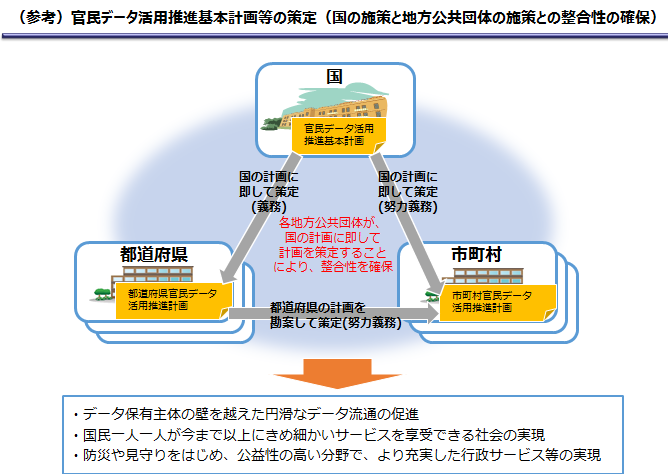
- 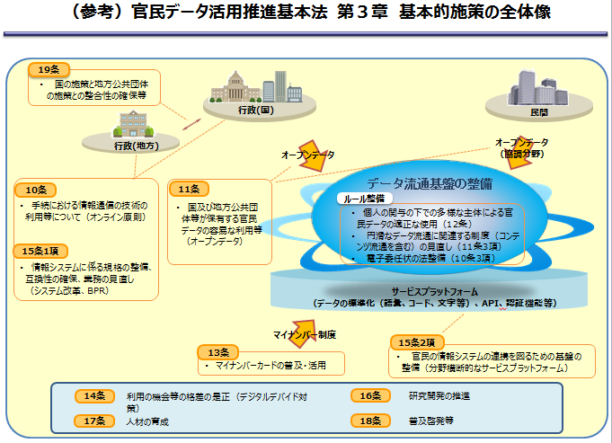
- オープンデータ基本指針（案）の概要
- 本基本指針の位置づけ
- 平成28年12月14日に公布・施行された「官民データ活用推進基本法」において、国、地方公共団体、事業者が保有する官民データの容易な利用等について規定された。本文書は、これまでの取り組みを踏まえ、オープンデータ・バイ・デザイン（注）の考えに基づき、国、地方公共団体、事業者が公共データの公開及び活用に取り組む上での基本方針をまとめたものである。
- １．オープンデータの意義
- （１）国民参加・官民協働の推進を通じた諸課題の解決、 経済活性化
- （２）行政の高度化・効率化
- （３）透明性・信頼の向上
- ２．オープンデータの定義
- ① 営利目的、非営利目的を問わず二次利用可能なルールが適用されたもの
- ② 機械判読に適したもの
- ③ 無償で利用できるもの
- ３．オープンデータに関する基本的ルール
- （１）公開するデータの範囲
- ・・・各府省庁が保有するデータは、原則オープンデータとして公開。公開することが適当でない公共データは、公開できない理由を原則開示するとともに、限定的な関係者間での共有を図る「限定公開」といった手法も積極的に活用。
- （２）公開データの二次利用に関するルール
- ・・・ 原則、政府標準利用規約を適用。
- （３）公開環境
- ・・・特にニーズが高いと想定されるデータは、一括ダウンロードを可能とする仕組みの導入や、APIを通じた提供を推進。
- （４）公開データの形式等
- ・・・機械判読に適した構造及びデータ形式で掲載することを原則。法人情報を含むデータは、法人番号を併記。
- （５）公開済みデータの更新
- ・・・可能な限り迅速に公開するとともに適時適切な更新。
- ４．オープンデータの公開・活用を促す仕組み
- （１）オープンデータ・バイ・デザインの推進
- ・・・行政手続き及び情報システムの企画・設計段階から必要な措置
- （２）利用者ニーズの反映
- ・・・各府省庁の保有データとその公開状況を整理したリストを公開→利用者ニーズを把握の上、ニーズに即した形での公開
- ５．推進体制
- （１）相談窓口の設置
- ・・・総合的な相談窓口（内閣官房IT総合戦略室）・相談窓口（各府省庁）の設置
- （２）推進体制
- ・・・内閣官房IT総合戦略室は、政府全体のオープンデータに関する企画立案・総合調整、各施策のレビュー、フォローアップを実施等
- ６．地方公共団体、独法、事業者における取組
- 地方公共団体
- ・・・官民データ法の趣旨及び本基本指針を踏まえて推進。
- 独立行政法人
- ・・・国費によって運営されていること又は実施している事業や研究があることに鑑み、基本指針に準拠して取組を推進することが望ましい。
- 公益事業分野の事業者
- ・・・その公益性に鑑み、本基本指針及び利用者ニーズを踏まえて推進することが望ましい。
- オープンデータ・バイ・デザインの推進（案）
- １．オープンデータ・バイ・デザインの定義
- 「行政が保有するデータについては、オープンデータを前提として情報システムや業務プロセス全体の企画、整備及び運用を行う」
- ２．オープンデータ・バイ・デザインの具体的な内容
- 行政が保有するデータを原則としてオープンデータ化するとともに、利用者が活用しやすい形で公開するため、行政手続及び情報システムの企画・設計段階から必要な措置を講じる。
- （１）一括ダウンロードやAPIを通じたデータ提供
- 特にニーズが高いと想定されるデータは一括ダウンロードを可能とする仕組みの導入や、APIを通じた提供を推進する
- （２）メタデータの公開
- 公開データについて適切なメタ情報を付与し、政府のデータカタログサイトへ漏れなく登録がされるようにする
- （３）機械判読に適したファイル形式およびデータ構造
- 公開可能なデータを抽出/出力/公開するための仕組みをシステム要件に含める
- 公開データがJSON・CSV等、機械判読に適したファイル形式で公開されるようにする
- 各府省庁が行う委託・請負契約に当たっては、報告書等の成果物を機械判読に適したファイル形式で納品されるようにする
- （４）データ構造やデータ形式の標準化
- 可能な限り標準化された形式やコード体系等でデータを格納・出力する法人情報を含むシステムの開発・更新に当たっては、法人番号の併記を原則とする
- （５）公開済みデータの更新
- データ公開後も適切にデータの更新がされるように仕組みや運用体制を構築する
- また、データベース構築にあたっては、オープンデータを前提とする（非公開とすることに合理的な理由がないものについては、予算計上を認めないこととする）。
- 今後オープンデータ・バイ・デザインの取組は、
- 「デジタル・ガバメント推進方針」の動き※と連携しながら進めていく。
- デジタル・ガバメント推進方針【2017年5月】
- デジタル・ガバメント実行計画【2017年内】
- 【2018年以降】
- 実行計画に基づく各種取組の推進
- 各府省における中長期的な計画の策定、推進 等
- 企画・設計時の具体的な実施事項については「政府情報システムの整備および管理に関する標準ガイドライン」及び同実務手引書に盛り込み、政府情報システム全体への浸透を図ることとする。
- 地方公共団体の取り組み促進（案）
- 地方公共団体におけるオープンデータへの取組を加速する改良版パッケージの提供。
- オープンデータに取組む意思や必要性は感じているが、具体的な取組方法が分からない地方公共団体を支援するため、関係諸団体と連携し、オープンデータのデータカタログとダッシュボードアプリケーションをパッケージ化して提供することで、地方公共団体によるオープンデータの導入・活用を促進する。
- 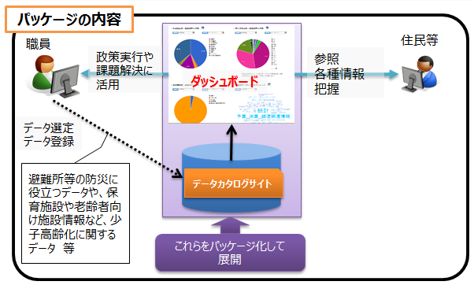
- ■期待される効果
- ・防災関連や少子高齢化など地域課題に関係するデータの公開による、地域課題解決の一助
- ・公開と活用両方の自治体展開パッケージの提供による、地方公共団体の取組を容易化
- ・標準化の推進（登録データのフォーマット標準例の提供等）
- パッケージはオープンソースとしてGitHubで公開することにより、他の地方公共団体に展開可能とする (※) 。
- ※パッケージ一式導入用：
- https://github.com/nes-opendata/odpkg-docker
- ※ダッシュボードのみ導入用：
- https://github.com/nes-opendata/odpkg-dashboard
- オープンデータに取り組む地方公共団体数
- 導入予定
- ・福岡市、久留米市へダッシュボードを導入。（平成29年4月公開）
- ・長崎県（平成29年6月公開予定）、京都府（平成29年6月公開予定）へパッケージを導入。
- 世界最先端ＩＴ国家創造宣言・官民データ活用推進基本計画【2017年5月30日付け閣議決定】
-
- 第１部 総論 . 3
- Ⅰ IT 戦略の新たなフェーズに向けて（「データ」がヒトを豊かにする社会の実現） 3
- Ⅰ－１ これまでのIT 戦略 3
- Ⅰ－２ IT 戦略の新たなフェーズに向けて（「データ」大流通時代の到来） 3
- Ⅰ－３ 「データ」の上で、ヒト、モノ、カネが活いきる社会 . 5
- Ⅰ－４ 「データ」がヒトを豊かにする社会、「官民データ利活用社会」のモデル構築 . 6
- Ⅱ 「官民データ利活用社会」のモデルの構築に向けて 8
- Ⅱ－１ IT をめぐる諸動向 8
- Ⅱ－１－(1) 技術・サービスの動向等 . 8
- Ⅱ－１－(2) データ利活用への期待の高まり . 9
- Ⅱ－２ 我が国の置かれた状況等 10
- Ⅱ－２－(1) 急速な人口構造の変化等に伴う諸課題 10
- Ⅱ－２－(2) 今の国民が生活において求めるもの（国民視点での取組の強化） 10
- Ⅱ－３ 「官民データ利活用社会」のモデルの構築 11
- Ⅱ－３－(1) 我が国の置かれた諸状況を踏まえたデータ利活用による新たなライフスタイルの提案 . 11
- Ⅱ－３－(2) 官民データの利活用に向けた環境整備 12
- Ⅱ－３－(3) 我が国が目指す社会の構築等 14
- Ⅲ 推進体制 .15
- Ⅲ－１ 官民データ活用推進基本計画のPDCA . 15
- Ⅲ－２ 他の推進本部等との連携 16
- Ⅳ 地方公共団体との連携・協力 .18
- Ⅴ 事業者等との連携・協力 .18
- 第２部 官民データ活用推進基本計画 . 20
- Ⅰ 官民データ活用推進基本計画に基づく推進の施策 .20
- Ⅰ－１ 官民データ活用の推進に関する施策についての基本的な方針 20
- Ⅰ－１－(1) 基本計画の策定とその着実な実施 20
- Ⅰ－１－(2) 重点分野の指定（分野横断的なデータ連携を見据えつつ） 21
- Ⅰ－１－(3) 国と各地方公共団体の施策の整合性の確保 23
- Ⅰ－１－(4) 成果の横展開 24
- Ⅰ－１－(5) 官民データ活用によるEBPM の推進 . 24
- Ⅰ－２ 具体的施策 25
- Ⅱ 施策集 37
- Ⅱ－１
- Ⅱ－１－(1) 行政手続等のオンライン化原則【基本法第10 条関係】 39
- Ⅱ－１－(2) オープンデータの促進【基本法第11 条第１項及び第２項関係】、データの円滑な流通の促進【基本法第11 条第３項関係】 44
- Ⅱ－１－(3) データ利活用のルール整備【基本法第12 条関係】 52
- Ⅱ－１－(4) マイナンバーカードの普及・活用【基本法第13 条関係】 56
- Ⅱ－１－(5) 利用の機会等の格差の是正（デジタルデバイド対策）【基本法第14 条関係】. 61
- Ⅱ－１－(6) 情報システム改革・業務の見直し【基本法第15 条第１項関係】 65
- Ⅱ－１－(7) データ連携のためのプラットフォーム整備【基本法第15 条第２項関係】 70
- Ⅱ－１－(8) 研究開発【基本法第16 条関係】 77
- Ⅱ－１－(9) 人材育成、普及啓発等【基本法第17 条、第18 条関係】 . 83
- Ⅱ－１－(10) 国の施策と地方の施策との整合性の確保等【基本法第19 条関係】 . 88
- Ⅱ－１－(11) 国際貢献及び国際競争力の強化に向けた国際展開 89
-
- アクセシビリティ
- 情報通信分野においては、高齢者や障害者等、ハンディを持つ人にとって、情報やウェブサービス、ソフトウェア等が円滑に利用できることを意味する。
- アジャイル
- ソフトウェア開発手法の1 つで、開発対象を多数の小さな機能に分割し、反復(イテレーション) と呼ばれる短い開発期間単位ごとに1 つの機能を開発・ソフトウェアリリースを行う手法である。短いサイクルで一連のPDCA を回す開発手法であり、日々生じる変化にすばやく適応することに主眼が置かれている。
- 医療等ID
- 医療等ID は、患者の医療情報の連携や研究利用など、保健医療分野の情報連携を安全で効率的に行うための、一意的な識別子のことである。「医療等分野における番号制度の活用等に関する研究会」(平成27 年12 月報告書取りまとめ)において、具体的な制度設計等が取りまとめられた。
- ウェアラブル端末
- 腕や頭部などの身体に装着して利用する情報端末のこと。デバイスに搭載されたセンサーを通じて装着している人の生体情報を取得・送信し、クラウド上で解析しフィードバックすることで、フィットネスやヘルスケア分野などでの活用が期待されている。また、スマートフォンと連携してのハンズフリーでのアプリ操作や、産業分野での作業支援などにも使われ始めている。
- オープンデータ
- 一般的には、データは誰もが制限なしにアクセス、再利用、そして再配布できるように、利用可能にすべきであるという概念のことであるが、本戦略においては、公的機関が保有するデータを、民間が編集・加工等をしやすい形で、インターネットで公開することを意味する。
- オープンデータ・バイ・デザイン
- 行政が保有するデータについて、 オープンデータを前提として情報システムや業務プロセス全体の企画、整備及び運用を行うこと。
- おもてなしシステム
- 訪日外国人の同意の下、属性（性別・年代・国籍等）や行動履歴（宿泊・買い物・移動等）に関するデータを事業者間で共有・活用し、先進的かつ多様なサービス・決済環境を提供する仕組みのこと。
- 海事生産性革命(i-Shipping)
- IT を利活用して船舶の設計から建造、運航に至る全てのフェーズにおいてイノベーションの創出・生産性向上を目指す政府の取り組みの総称。
- 課題解決型オープンデータ
- データの公開のみにとどまらず、公開されたデータを積極的に利活用することによって様々な社会課題の解決を目指す、オープンデータに係る取組のこと。
- 共通語彙基盤
- 氏名や住所等語彙の表記・意味・データ構造を共通化してデータの交換・活用を容易にする基盤のこと。
- 業務改革（BPR）
- BPR はBusiness Process Reengineering の略である。既存の組織やビジネスルールを抜本的に見直し、利用者の視点に立って、業務プロセス全体について職務、業務フロー、管理機構、情報システムを再設計すること。
- クラウドサービス
- インターネット等のブロードバンド回線を経由して、データセンタに蓄積されたコンピュータ資源を役務（サービス）として、第三者（利用者）に対して遠隔地から提供すること。
- クラウド・バイ・デフォルト
- システム導入に際し、クラウドサービスの活用を前提とする考え方のこと。
- 公共価値
- 制度の不知等利用者の置かれた環境にかかわらず、公平・公正な行政サービスを享受できること、行政サービスの利用が簡便でメリットがあること、また、行政機関が保有する資産を利用することで新たなビジネスを創造できること等、利用者たる国民等にとっての行政サービスの有用性を意味する。
- 公的個人認証サービス
- 公的個人認証サービスとは、オンラインで（＝インターネットを通じて）申請や届出といった行政手続などやインターネットサイトにログインを行う際に、他人による「なりすまし」やデータの改ざんを防ぐために用いられる本人確認の手段。 「電子証明書」と呼ばれるデータを外部から読み取られるおそれのないマイナンバーカード等のIC カードに記録することで利用が可能となる。
- 電子証明書には、以下の２種類がある。
- 署名用電子証明書・・・インターネット等で電子文書を作成・送信する際に利用（例 e-Tax 等の電子申請）。「作成・送信した電子文書が、利用者が作成した真性なものであり、利用者が送信したものであること」を証明する。
- 利用者証明用電子証明書・・・インターネットサイトやコンビニ等のキオスク端末等にログインする際に利用（例 マイナポータルへのログイン、コンビニでの公的な証明書の交付）。「ログインした者が、利用者本人であること」を証明。
- コネクテッドカー
- 情報端末としての機能を有する自動車のことであり、車両の状態や周囲の道路状況などの様々なデータをセンサーにより取得し、ネットワークを介して集積・分析することで、新たな価値を生み出すことが期待されている。
- コネクテッド・ワンストップ
- 民間サービスを含め、複数の手続・サービスがどこからでも一か所で実現 することを原則とする考え方のこと。
- サービスデザイン思考
- サービスを利用する際の利用者の一連の行動に着目し、利用者がその手続を利用しようとした背景や、手続を利用するに至るまでの過程、利用後の行動までを一連の流れとして捉え、利用者の心理や行動等を含めた体験（UX：ユーザーエクスペリエンス）全体を最良とすることを目標にしてサービス全体を設計する考え方のこと。
- シェアリングエコノミー
- 個人等が保有する活用可能な資産等（スキルや時間等の無形のものを含む。）を、インターネット上のマッチングプラットフォームを介して他の個人等も利用可能とする経済活性化活動のこと。
- 準天頂衛星
- 日本で常に天頂付近に１機以上の測位衛星が位置し、複数の軌道面にそれぞれ配置された測位衛星を組合せて位置を測定する衛星及びそのシステムのこと。全国をほぼ100%カバーする高精度の衛星測位サービスの提供が可能である。
- 情報銀行
- 情報利用信用銀行の略で、個人とのデータ活用に関する契約等に基づき、PDS等のシステムを活用して個人のデータを管理するとともに、個人の指示又は予め指定した条件に基づき個人に代わり妥当性を判断の上、データを第三者（他の事業者）に提供する事業のこと。データの提供・活用に関する便益は、データ受領事業者から直接的又は間接的に本人に還元される。
- スマートホーム
- IoT 技術等によって家庭内の機器をネットワークでつなぎ、制御することで、生活者のニーズに応じた効率的かつ快適なサービスの提供を可能とした住まいのこと。
- 政府共通プラットフォーム
- 「新たな情報通信技術戦略」(平成22 年５月IT 戦略本部決定)に基づき、国の行政情報システム全体の運用コストの削減、セキュリティ強化等を図ることを目的とする情報システム基盤。クラウドコンピューティング技術を活用した本基盤（平成25 年３月から稼働）の活用により、各府省が別々に整備・運用している行政情報システムを可能なものから統合・集約化している。
- 政府統計の総合窓口（e-Stat）
- 各府省が公表する統計データを一つにまとめ、統計データの検索をはじめとした、さまざまな機能を備えた政府統計のポータルサイトのこと。各府省が公表している統計表をExcel・CSV・PDF 形式でダウンロードすることが可能。
- 地理空間情報（Ｇ空間情報）
- 地理空間上の特定の地点又は区域の位置を示す情報（位置情報）と、これに関連付けられた様々な情報のこと。
- ディープラーニング
- ニューラルネットワーク（機械学習におけるアルゴリズムの1 つ）を用いた機械学習における技術の1 つである。情報抽出を一層ずつ多階層にわたって行うことで、高い抽象化を実現する。従来の機械学習では、学習対象となる変数（特徴量）を人が定義する必要があった。ディープラーニングは、予測したいものに適した特徴量そのものを大量のデータから自動的に学習することができる点に違いがある。
- デジタルデバイド
- インターネットやパソコン等の情報通信技術を利用できる者と利用できない者との間に生じる格差のこと。
- デジタルファースト
- デジタル技術を徹底的に活用し、デジタル処理を前提としたサービス設計を行うこと。
- データ取引市場
- データ保有者と当該データの活用を希望する者を仲介し、売買等による取引を可能とする仕組み（市場）のこと。価格形成・提示、需給マッチング、取引条件の詳細化、取引対象の標準化、取引の信用保証等の機能を担うことが想定される。
- テレワーク
- テレワークとは、ICT を活用し、場所や時間を有効に活用できる柔軟な働き方のことであり、雇用型と自営型に大別される。雇用型テレワークとは、ICT を活用して、労働者が所属する事業場と異なる場所で、所属事業場で行うことが可能な業務を行うこと（例：在宅勤務、モバイルワーク、サテライトオフィスでの勤務）を言い、 自営型テレワークとは、ICT を活用して、請負契約等に基づき、遠隔で、個人事業者・小規模事業者等が業務を行うこと（例：ＳＯＨＯ、在宅ワーク、クラウドソーシング）を言う。
- 電子委任状
- 法人の代表者から与えられている権限の範囲を表示する電磁的記録のこと。
- 匿名加工情報
- 特定の個人を識別することができないように個人情報を加工して得られる個人に関する情報であって、当該個人情報を復元することができないようにしたもののこと。
- 匿名加工情報は、個人情報に関するルールは適用されず、加工基準に従った加工その他の一定のルールのもと、本人の同意を得ることなく自由に利活用することができる。これにより、新事業や新サービスの創出や、国民生活の利便性の向上に寄与することが期待される。
- 農地情報公開システム
- 農地の集積・集約化を進めるため、各市町村の農業委員会が整備している農地台帳に基づく農地情報を電子化・地図化して公開する全国一元的なクラウドシステム（平成27 年４月稼働）のこと。
- バックオフィス連携
- 地方公共団体を含む各行政機関が保有する情報を行政機関間でやり取りすること。行政手続の際に必要な添付書類の省略を始めとした利便性の向上等が期待される。
- ビッグデータ
- ボリュームが膨大でかつ構造が複雑であるが、そのデータ間の関係性などを分析することで新たな価値を生み出す可能性のあるデータ群のこと。例えば、ソーシャルメディア内のテキストデータ・画像、携帯電話・スマートフォンが発信する位置情報、時々刻々と生成されるセンサデータなどがある。
- 府省庁連携災害情報共有方式(SIP4D)
- 府省庁横断で災害情報を共有する仕組みのこと。
- ブロックチェーン
- 複数のデータを塊り（ブロック）にし、暗号化してチェーンのように繋ぎ合わせて情報を管理する仕組みのこと。複数の端末で運用するため、耐障害性が高く、またデータの改竄もほぼ不可能と言われている。
- 法人インフォメーション
- 政府の許認可、委託契約受注、補助金交付、表彰受賞等の法人の情報等を一括で検索、閲覧できるWeb システムのこと。
- 法人番号
- 設立登記法人、国の機関、地方公共団体、その他の法人や人格のない社団等に対し、国税庁長官より1 法人につき1 つ指定される13 桁の番号のこと。マイナンバーとは異なり、自由な利活用が可能。なお、法人の支店や事業所、個人事業主等には法人番号は指定されない。
- マイナポータル
- マイナンバー制度の導入に併せて新たに構築した、国民一人ひとりがアクセスできるポータルサイトのこと。具体的には、自己情報表示機能、情報提供等記録表示機能、プッシュ型サービス、ワンストップサービス等を提供する基盤であり、国民一人ひとりが様々な官民のオンラインサービスを受けられるよう、平成29 年秋頃に本格運用を開始予定である。
- マイナンバー（個人番号）
- 日本国内に住民票を有する全ての方が一人につき1 つ持つ12 桁の番号のこと。
- 外国籍でも住民票を有する方には住所地の市町村長から通知される。マイナンバーは行政を効率化し、国民の利便性を高め、公平、公正な社会を実現するための社会基盤。その利用範囲は法令等で限定されており、平成28 年1 月から順次、社会保障、税、災害対策分野の行政手続で利用されている。
- 官民ラウンドテーブル
- 行政運営上の意見交換や懇談の場のことであり、官民が我が国の向上・活性化に向けて、持続的な対話を行っていくことを目的としている。
- リカレント教育
- 近年の技術革新の著しい進展や産業構造の変化などに対応して学校教育の終了後、技術系人材を含む職業人を中心とした社会人に対して行われる教育のこと。
- レセプトデータ
- レセプト（保険医療機関又は保険薬局が保険者に医療費を請求する際に提出する診療報酬明細書や調剤報酬明細書）に記載されているデータのこと。
- レピュテーションリスク（風評リスク）
- 企業に関する否定的な評価・評判が世間に周知されることで企業の信用やブランド価値等が悪化し、結果的に損失を被るリスクのこと。
- ワンスオンリー
- 一度行政機関が提出を受けた情報は、原則再度の提出を求めない仕組みのこと。
- ４Ｋ
- 現行のハイビジョンを超える解像度の映像のこと。水平方向の画素数が約4 千であることから、4K と呼ばれる。超高精細度テレビジョン放送に対応する規格として、平成24 年にITU（国際電気通信連合）で勧告化されるなど、国際標準化がなされている。4K は現行ハイビジョンの4 倍の解像度となる。
- ５Ｇ
- 「超高速」だけでなく、「多数接続」「超低遅延」といった特徴を持ち、平成32 年の実現が期待されている次世代の移動通信システムのこと。我が国においても産学官連携の推進団体である「第５ 世代モバイル推進フォーラム（5GMF）」の設立（平成26 年９月30 日）、研究開発の推進、国際連携の強化などの取組が進められている。現行LTE と比べて100 倍の接続機器数（100 万台/km2）、100 倍の通信速度（10Gbps）などが要求条件とされており、ITU をはじめ、世界各国でも実現に向けた取組が本格化している。
- ８Ｋ
- 現行のハイビジョンを超える解像度の映像のこと。水平方向の画素数が約8 千であることから、8K と呼ばれる。超高精細度テレビジョン放送に対応する規格として、平成24 年にITU（国際電気通信連合）で勧告化されるなど、国際標準化がなされている。8K は現行ハイビジョンの16 倍の解像度となる。
- 人工知能（AI）
- Artificial Intelligence（人工知能）の略である。コンピュータを使って、学習・推論・判断など人間の知能のはたらきを人工的に実現するための技術。
- API
- Application Programming Interface の略。複数のアプリケーション等を接続（連携）するために必要なプログラムを定めた規約のこと。
- AR（拡張現実）
- Augmented Reality の略である。現実の環境にコンピュータを用いて情報を付加することにより人工的な現実感を作り出す技術の総称。情報を付加された環境そのものを示すこともある。
- CIO
- Chief Information Officer の略である。日本語では「最高情報責任者」「情報システム担当役員」「情報戦略統括役員」などと訳される。企業や行政機関等といった組織において情報化戦略を立案、実行する責任者のこと。
- e-ラーニング
- パソコンやタブレット、スマートフォンを使ってオンラインで学ぶ学習形態のこと。
- EBPM
- Evidence Based Policy Making の略で、統計や業務データなどの客観的な証拠に基づく政策立案のこと。
- Fintech
- 金融（Finance）と技術（Technology）を掛け合わせた造語であり、主に、ITを活用した革新的な金融サービス事業を指す。
- HHI
- Herfindahl-Hirschman Index（ハーフィンダール・ハーシュマン指数）の略である。当該市場における各事業者の有するシェアの二乗和として算出され、市場集中度を表す指標のこと。
- i-Construction
- 調査・測量から設計、施工、検査、維持管理・更新までの全ての建設生産プロセスでICT 等を活用して、建設現場の生産性の向上を目指す。
- IoT
- Internet of Things（モノのインターネット）の略である。自動車、家電、ロボット、施設などあらゆるモノがインターネットにつながり、情報のやり取りをすることで、モノのデータ化やそれに基づく自動化等が進展し、新たな付加価値を生み出すというコンセプトを表した語である。
- ITS
- Intelligent Transport Systems（高度道路交通システム）の略である。道路交通の安全性、輸送効率、快適性の向上等を目的に、最先端の情報通信技術等を用いて、人と道路と車両とを一体のシステムとして構築する新しい道路交通システムの総称。
- KPI
- Key Performance Indicators の略で、目標の達成度を評価するための主要な評価指標のこと。
- Ｌアラート（災害情報共有システム）
- 避難勧告・指示等といった、安心・安全に関わる公的情報など、住民が必要とする情報が迅速かつ正確に住民に伝えられることを目的とした情報基盤のこと。全国の情報発信者（地方公共団体等）が発信した情報を、地域を越えて全国の情報伝達者（メディア等）に一斉に配信できるので、住民はテレビ、ラジオ、携帯電話、ポータルサイト等の様々なメディアを通じて情報を入手することが可能となる。
- MVNO
- Mobile Virtual Network Operator の略で仮想移動体通信事業者のこと。
- PDS
- Personal Data Store の略で、他者保有データの集約を含め、個人が自らの意思で自らのデータを蓄積・管理するための仕組み（システム）のこと。第三者への提供に係る制御機能（移管を含む）を有する。運用形態としては、個人が自ら保有する端末等でデータを蓄積・管理する（事業者は本人の同意によりデータを活用できる）分散型と、事業者が提供するサーバ等でデータを蓄積・管理する（個人は当該事業者にデータの蓄積・管理を委託する）集中型がある。
- 実際にデータをやり取りする形態と、データをやり取りせず必要な時にアクセス権（閲覧のみ可、コピー不可など）を提供・管理する形態もある。
- PHR
- Personal Health Record の略である。個人が自らの生活の質(QOL=Quality of Life)の維持や向上等を目的として、自らの健康に関する情報を収集・保存・活用する仕組みのこと。
- SNS
- Social Networking Service(Site)の略である。個人間の交流を支援するサービス（サイト）で、参加者は共通の興味、知人などをもとに様々な交流を図ることができる。
- Society5.0
- 狩猟社会、農耕社会、工業社会、情報社会に続くような新たな社会を生み出す変革を科学技術イノベーションが先導していく、という概念である。
- VR
- Virtual Reality の略である。コンピュータ上に仮想的な世界を作り出し、あたかも現実にそこにいるかの様な体験をさせる技術。__
-
-
- 世界最先端IT国家創造宣言(2013年6月14日閣議決定。2014年6月24日変更)に基づき、政府におけるITガバナンス強化のため、情報システム調達やプロジェクト管理に関する共通ルールとして策定
- 人材育成・人材確保
-
- デジタル大変革時代、本番へ
- 時代環境が大きく変わる時、それにそぐわないビジネスは淘汰されていく
- デジタル変革とも呼ぶべき第4次産業革命の入り口にいる
- デジタル時代にふさわしい新たなビジネスを生み出して行く必要がある
- 旧来の仕組みの高度化、洗練は否定されるべきではないが
- “デジタルトランスフォーメーション”が重要
- 仕事の進め方や社会のあり方をゼロベースで刷新し、時代に適合するように自らを変える
- それに歩みを進めるかどうか、つまり企業の方向性を決めるのは、言うまでもなく経営者
- 経営者の役割： 時代の潮流を捉え、自社が変化の中で発展できる道を探り、ビジョンをはっきりと示す
- 同時に従来から続く組織構造の破壊や再構築も必要
- 求められるのは、周囲を巻き込みながら改革を進める能力やビジネスとデジタルを結び付けて全体をデザインする能力を持った新しい時代のリーダー
- ITエンジニアがリーダーへと成長するには挑戦する意欲を持つ
- さまざまな経験を積み、多様な人と関わる環境が必要
- 企業が行わなければならないのは、誰もが挑戦できる環境、開かれた場を作ること
- 個々のIT人材は、自らも“デジタルトランスフォーメーション”の流れの中にあることを意識
- その中で活躍できる人材となれるように、自らの能力を高めていくことが重要である
- そのためには情報への感度を高め、自ら挑戦する場を求める姿勢が重要になる。普段の仕事に専念しているだけでは不十分と考えなければならない。
- 企業に向けたメッセージ
- IT企業
- デジタル変革が進む中では、IT企業は“デジタルトランスフォーメーション”に資する技術力や提案力を磨き、ユーザー企業のパートナーとして新たな事業価値を生み出していく役割を担う必要がある。
- そのためにはユーザー企業やベンチャー企業などとの「協働」関係を築くことも欠かせない。
- ユーザー企業（IT部門）
- “デジタルトランスフォーメーション”を推進するのか、それとも現状維持を選択するのか。
- 第4次産業革命が進むにつれて、発展するビジネスと縮小するビジネスが明確になっていく。
- CIOやIT部門は、そのことを認識し、変化を主導する側に立つ必要がある。
- そのために一刻も早く現状把握を行い、ビジョンを明確にし、戦略を遂行しなければならない。
- “デジタルトランスフォーメーション”を実現するには、ビジネスとデジタルのスキルを併せ持った人材が重要となる。
- それがあって初めて、イノベーティブなデジタル技術を持つ企業や、他業種など多様な企業間での連携を進められる
- その視点に立って、人材の育成と獲得をしていく必要がある。
- 従来、社内でIT業務の中核を担ってきたIT部門は今、再び挑戦を迫られている。
- デジタル変革に伴って生じる新たな事業や業務において重要な役割を担うことへの挑戦でもある。
- IT人材個人に向けたメッセージ
- デジタル時代は、個々のIT人材にとって活躍の場を広げられるまたとないチャンスである。
- 所属する企業で新たな試みをすることもできるし、起業のチャンスも開けている。
- クラウドコンピューティングやモバイルの進展で、個人や少数のチームでできることが飛躍的に拡大している
- このことを認識し、目の前の業務だけにとらわれることなく、広く視野を持って進むべき道を探り、学ぼう。勉強会やコミュニティなど、学びの場は周囲にある。自己研鑽によって能力を高めれば高めただけ、社会をリードする人材になっていく。
- 1．デジタルトランスフォーメーション時代のIT人材
- “デジタルトランスフォーメーション”とは何か
- ITの進展やインフラの整備によって、ビジネスや社会のあり方が変わり始めている。
- あらゆるものがインターネットに接続するIoTの拡がりや、ビッグデータ活用、人工知能（AI）の様々な分野への適応が始まっている。
- デジタル化を進めるということは、様々な要素（アナログデータも含む）をデジタル化、数値化して扱うことを意味する。
- 共通に扱えるデータへと変換することによって、処理や分析が可能になり、フィードバックまで含めた一連の流れを作ることが可能になる。
- デジタル化の本質は、以上のようなデータ駆動型へのビジネスや社会の変革にある。
- 既存のビジネスや業務に新技術を取り入れるだけでなく、ビジネスモデルを変え、経済活動のみならず、個人の生活や社会構造にまで影響が及ぶ。
- その変化は、“デジタルトランスフォーメーション”や“デジタル革命”と呼ばれている。

- デジタル化によって起こる変化の一例として、紙の書籍から電子書籍へのデジタル化を図式化したものである。
- すでに始まっている“デジタルトランスフォーメーション”
- 「IoTやビッグデータ、AIなど技術の進展等によって、社会や産業、企業、人のあり方や働き方が大きく変化すると言われている。この変化に対してどのように捉えているか」
- ネットサービス実施企業は
- 、「すでに変化の中にいる」が約40%である。インターネットを活用し、データを扱うビジネスを実施しているという性質上、変化に対して敏感だと言える。
- 事業会社であるユーザー企業では
- 「変化は今後起こるが、至近に迫っていない」という回答の割合が最も高い。
- 「大きな変化が起きるとは思わない」や「わからない」も他の企業区分に比較して高い割合を占めている。
- 一方、IT企業では、
- 「すでに変化の中にいる」、「変化は至近に迫っている」、「変化は今後起こるが、至近に迫っていない」、「この変化が特別なわけではなく、常に変化は起きている」の回答割合がほぼ同率だった。
- 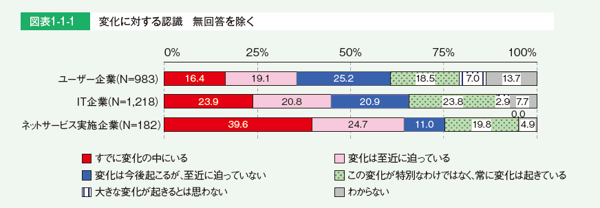
- 外部ITサービス利用状況、現在の事業【変化に対する認識別】
- “デジタルトランスフォーメーション”が進む企業では、経営者による主導の重要性を認識
- デジタルトランスフォーメーションには、大きな変化が伴うため、業務の部分的なデジタル対応やIT導入による効率化のみでは対応できない。
- “変化”には誰が主導して対応していくべきか尋ねた。
- 「すでに変化の中にいる」企業では、他の認識の企業に比べて「経営者」が主導していくべきだという回答の割合が高い。

- “デジタルトランスフォーメーション”の鍵を握るリーダー的人材
- 全体方針を示す経営者に加え、具体的な推進を行う人材も存在している。
- デジタル化の具体的な施策の決定や新事業の立ち上げなどを主導する、リーダー的な役割を担う人材が大きな役割を果たしている。
- この人材は、例えばCIOや、デジタル推進部門、デジタル技術を用いた新事業部門、IT系部門などに存在し、それぞれのデジタル化を推進している。
- 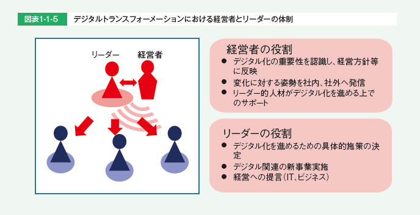
- 方針やビジョンの明確化」、「専門組織・部署の設置」、「Fail fastなどの風土改革」を重要視
- デジタル化を「主導すべき」人が実施すべき施策
- 「新たな市場創出のための方針やビジョンの明確化」
- 「新たな市場創出のための専門組織・部署の設置」
- 「新たなチャレンジを評価するFail fastなどの風土改革」

- 経営者とリーダーが周囲を巻き込み、改革を進める
- リーダー的存在が企業内の複数個所に存在する場合もあるが、経営者と現場に近いリーダーとがともに改革を進めていく大きな流れは変わらない。
- 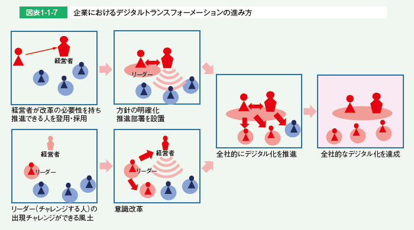
- デジタル化の推進をリードする人材に必要な能力と環境
- ・デジタル化を推進するリーダーに求められるのは、“他人を巻き込む力”、“ビジネスとデジタルの知見”
- ・デジタル化を推進するリーダーが育ってきた背景は、“多様な経験と新しいものへの挑戦”、“ネットワーク、外部とのつながり”
- ・デジタル化を推進するリーダーの育成に重要となる環境の整備
- 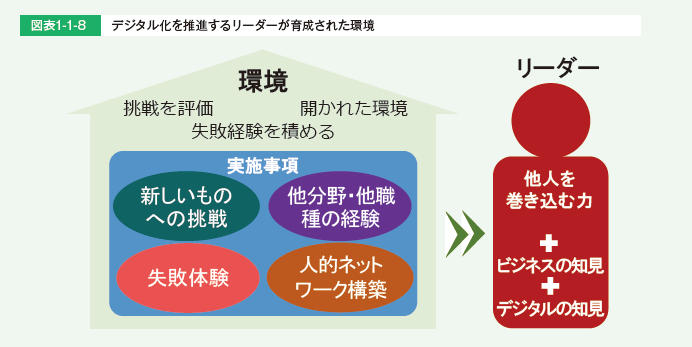
- デジタル化に携わる人材
- 必要な能力
- もともと製品の社内開発・運用を行ってきた企業の場合、
- 社内に既存の技術力はあり、加えて具体的な技術（データ解析やAI、クラウド等）が求められている。
- また、具体的な要素技術だけでなく、システムの構造設計を行い開発する能力（システムアーキテクト）の重要についても挙げられていた。
- 一方、これまでITが深くかかわっていなかった事業がデジタル化した場合、
- 今までIT部門が行っていた外部企業への開発委託を事業部門が直接行うことになり、ITを事業に適用する能力や、機能設計や要件定義を行う能力が求められる。
- 人材の獲得方法と育成
- 事業のデジタル化に必要なIT能力を、既存の人材でまかなうのは難しいとの意見があった。
- デジタル化した事業を行っている企業では、ネット系の企業等でデジタルビジネスの経験がある者を中途採用し、事業の推進を行っている例が見られる。
- また、新しい技術（データ活用やAI、IoTなど）を持った人材に関しては、中途採用の難しさを挙げる企業が多く、新卒採用した人材を育成して人材確保する傾向が見られ、新卒を採用する際に理数系人材を重視する企業もいくつかあった。
- 育成のスピードアップと高い技術力を持った人材の輩出につなげたい考えである。
- ただし、内部人材育成の難しさを挙げる企業もあり、必要な技術を持った人材を中途採用できる場合は行い、できない場合はアウトソーシングや、外部との連携を行うことで技術を補完する場合もあった。
- 2．日本と米国の情報処理・通信に携わる人材
- 日米、欧州等の情報処理・通信に携わる人材の所属企業
- 日本はIT企業に所属する情報処理・通信に携わる人材の割合が72%と突出して高くなっている。
- 一方、日本以外の国は、IT企業以外の割合が5割を超えており、米国はIT企業以外に所属する情報処理・通信に携わる人材の割合が65.4%と最も高くなっている。

- 日米の情報処理・通信に携わる人材の業種別人材の割合
- 米国では、「IT企業」に次いで「サービス」の割合が30.2%と高くなっている。
- 「金融」については日本の2%に対し米国では8.4%、「公務」については日本の0.5%に対し米国が6%と、日本より幅広い業種に情報処理・通信に携わる人材が所属していることがわかる。
- 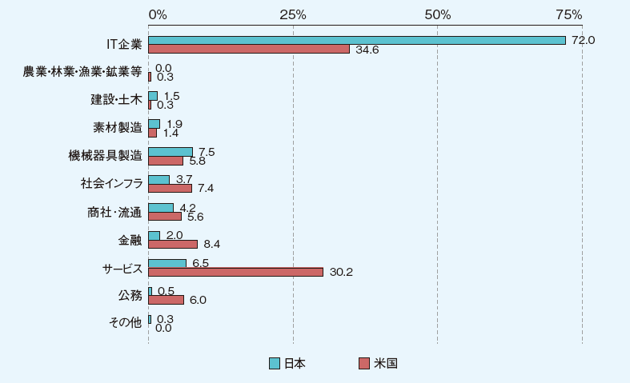
- 米国における情報セキュリティ技術者に必要なスキルや経験
- 「コンピュータ科学または関連科目の準学士号」の割合が68.8%と最も高く、「コンピュータ科学、サイバーセキュリティ、情報セキュリティまたは関連科目の学士号」（60.4%）、「情報システムに関する修士号（MS（Master of Science））」（57.2%）と続き、学歴を重視する傾向が見られる。
- 「資格（例えばCISSP）」が55.4%と、資格への関心も高い。

- 米国の組織のCISOに必要なスキルや経験
- 「リーダーとしての経験」の割合が92.1%と最も高く、「IT部門での業務経験」（72.8%）、「一般的な経営学修士号（または同等の修士号）」（71.3%）と続いている。
- 情報セキュリティ技術者にとって必要なスキルや経験の調査結果とは違い、経験を重視する傾向が見られる。

- 米国の組織におけるサイバーセキュリティ：トレーニングプログラム開発のための大学との連携・協業状況
- 約5割もの組織がサイバーセキュリティトレーニングプログラムの開発のために大学と連携・協業していることがわかる。
- 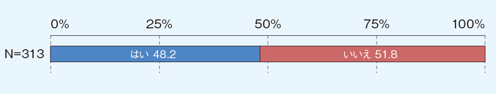
- 3．IT人材不足の動き
- IT人材の“量”に対する過不足感【過去10年の変化】
- IT企業では、リーマンショック以来高まり続けていたIT人材の“量”に対する不足感の高まりがやや緩和した。
- 「大幅に不足している」と答えた割合が、2015年度調査の24.2%から、今年度では20.3%と減少している。
- また、「特に過不足はない」は2015年度調査の8.1%から、今年度では11.9%と増加している。

- 人材不足改善の取り組みのうち効果があったもの
- 「社内人材の育成強化」が最も多く、66％に上っている。

- IT人材の「職種別の人材数」と「人材のレベル」の把握状況【経年】
- 計画的な人材育成には人材把握が必要となるが、今年度調査では、「職種別の人材数、人材のレベル両方を把握している」割合が大きく増加していた。
- 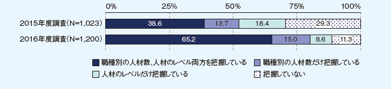
- IT人材の“量”に対する過不足感【過去9年の変化】
- 2010年ごろに不足感が減少した以降、2014年度調査までは不足感に大きな変化のなかったユーザー企業だが、2015年度調査の結果ではIT人材の“量”について、「大幅に不足している」「やや不足している」と回答した割合が増加した。
- 今年度も引き続き不足感が増す傾向にある。

- 4．IT人材動向（IT人材の意識の比較【2016年度と2011年度】）
- 仕事や職場の環境に対する満足度（30代-40代）【2016年度と2011年度】
- 2016年度、2011年度共に「仕事内容（希望に合った仕事かどうか）」、「休暇の取りやすさ」、「プライベートとの両立」「職場の雰囲気」に対する満足度は高い。
- 全項目に対して微増微少はあるが、変化は読み取れない。

- 仕事内容に対する考え方（30代-40代）【2016年度と2011年度】
- 「この仕事をしていることに誇りを持っている」では、「よく当てはまる、どちらかと言えば当てはまる」では2011年度の51.3％から2016年度の66.3％と増加した。
- 一方、「新しい部署や企画を立ち上げる仕事をしたい」では「よく当てはまる、どちらかと言えは当てはまる」の合計が、2011年度の67.7％から2016年度の35.4％、「関係者を説得し、社内改革する仕事をしたい」も同様に2011年度53％から2016年度の40.2％と割合が低下している。

- キャリアやスキルアップに対する考え方（30代-40代）2016年度と2011年度】
- 2016年度、2011年度共に「技術の変化に合わせて自分もスキルアップしなければならないと思う」について「よく当てはまる、どちらかと言えは当てはまる」と回答した割合は8割台半ばであり、「新しい技術やスキルを学ぶのは楽しい」の割合も共に7割強である。
- 一方、「将来のキャリアパスが明確である」で「よく当てはまる、どちらかと言えは当てはまる」と回答した割合は2011年度と2016年度共に約3割であり傾向に変化はない。

- 仕事と職場環境に対する満足度（30代-40代）【2016年度と2011年度】
- 全項目において「満足している」の割合が増加している。

- 仕事内容に対する考え方（30代-40代）【2016年度と2011年度】
- 「この仕事をしていることに誇りを持っている」では「当てはまる、どちらかと言えは当てはまる」を合計した割合が2011年度の57.7％から2016年度の67.3％と増加している。
- 一方、「新しい部署や企画を立ち上げる仕事をしたい」では「当てはまる、どちらかと言えは当てはまる」の合計は、2011年度の76.5％から2016年度の52.7％へと23.8ポイント低下した。
- また、「新しい顧客を開拓・獲得する仕事をしたい」の割合も2011年度の59.8％から2016年度の47％へと低下している。

- キャリアやスキルアップに対する考え方（30代-40代）2016年度と2011年度】
- 「将来のキャリアパスが明確である」では「当てはまる、どちらかと言えは当てはまる」を合計した割合が2011年度の31.5％から2016年度の45.9と増加し、「将来のキャリア目標を持っている」、「自分のキャリア目標は実現可能である」のいずれにおいても割合が増加している。
- しかしその一方で、「自分の将来のキャリアに対して強い不安を感じている」に対する「よく当てはまる」の割合はやや増加しており、キャリアは明確なったものの、不安感は弱まってはいないように見受けられる。
- 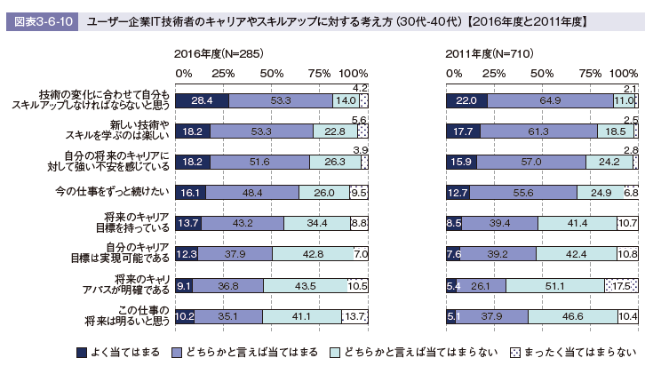
-
- サイバーセキュリティ関連→【詳細はサイバーセキュリティ関連各種施策等の内容要約を参照】
- サイバーセキュリティ基本法（2016年4月15日改正）
- 目的
- サイバーセキュリティに関する施策を総合的かつ効果的に推進し、もって経済社会の活力の向上及び持続的発展並びに国民が安全で安心して暮らせる社会の実現を図るとともに、国際社会の平和及び安全の確保並びに我が国の安全保障に寄与することを目的とする。
- サイバーセキュリティ戦略（2015年9月4日閣議決定）
- 2020年代初頭までを見据えつつ、サイバーセキュリティ政策の基本的な方向性を示す
- １ サイバー空間に係る認識
- サイバー空間は、「無限の価値を産むフロンティア」である人工空間であり、人々の経済社会の活動基盤
- あらゆるモノがネットワークに連接され、実空間とサイバー空間との融合が高度に深化した「連接融合情報社会(連融情報社会)」が到来。同時に、サイバー攻撃の被害規模や社会的影響が年々拡大、脅威の更なる深刻化が予想
- ２ 目的
- 「経済社会の活力の向上及び持続的発展」、「国民が安全で安心して暮らせる社会の実現」、「国際社会の平和・安定及び我が国の安全保障」に寄与する。
- そのために、「自由、公正かつ安全なサイバー空間」を創出・発展させる
- ３ 基本原則
- ① 情報の自由な流通の確保② 法の支配③ 開放性④ 自律性⑤ 多様な主体の連携
- ４ 目的達成のための施策
- ①後手から先手へ／ ②受動から主導へ／ ③サイバー空間から融合空間へ
- 経済社会の活力の向上及び持続的発展
- ～ 費用から投資へ ～
- ■安全なIoTシステムの創出
- 安全なIoT活用による新産業創出
- ■セキュリティマインドを持った企業経営の推進
- 経営層の意識改革、組織内体制の整備
- ■セキュリティに係るビジネス環境の整備
- ファンドによるセキュリティ産業の振興
- 国民が安全で安心して暮らせる社会の実現
- ～ 2020年・その後に向けた基盤形成 ～
- ■国民・社会を守るための取組
- 事業者の取組促進、普及啓発、サイバー犯罪対策
- ■重要インフラを守るための取組
- 防護対象の継続的見直し、情報共有の活性化
- ■政府機関を守るための取組
- 攻撃を前提とした防御力強化、監査を通じた徹底
- 国際社会の平和・安定及び我が国の安全保障
- ～ サイバー空間における積極的平和主義～
- ■我が国の安全の確保
- 警察・自衛隊等のサイバー対処能力強化
- ■国際社会の平和・安定
- 国際的な「法の支配」確立、信頼醸成推進
- ■世界各国との協力・連携
- 米国・ASEANを始めとする諸国との協力・連携
- 横断的施策
- ■研究開発の推進
- 攻撃検知・防御能力向上(分析手法・法制度を含む)のための研究開発
- ■人材の育成・確保
- ハイブリッド型人材の育成、実践的演習、突出人材の発掘・確保、キャリアパス構築
- ５ 推進体制
- 官民及び関係省庁間の連携強化、東京オリンピック・パラリンピック競技大会等に向けた対応
- 「政府機関等の情報セキュリティ対策のための統一基準群（平成28年度版）」（2016年8月31日サイバーセキュリティ戦略本部決定）
-
-
- 経営層に期待される“認識”や経営戦略を企画する人材層に向けた実装のためのツールを示す
- 基本方針
- ーサイバーセキュリティは、より積極的な経営への「投資」へー
- サイバーセキュリティをやむを得ない「費用」でなく、積極的な経営への「投資」と位置づけ、企業としての「挑戦」と、それに付随する「責任」として取り組むことが期待される
- I.基本的考え方
- 二つの基本的認識
- ＜①挑戦＞
- 新しい製品やサービスを創造するための戦略の一環として考えていく
- ＜②責任＞
- サイバーセキュリティに取り組むことは社会的な要求・要請であり、自社のみならず社会全体の発展にも寄与する
- 三つの留意事項
- ＜①情報発信による社会的評価の向上＞
- • 「セキュリティ品質」を高め、品質向上に有効な経営基盤の一つとしてセキュリティ対策を位置付けることで企業価値を高めることが必要。
- • そのような取組に係る姿勢や方針を情報発信することが重要。
- ＜②リスクの一項目としてのサイバーセキュリティ＞
- • 提供する機能やサービスを全うする（機能保証）という観点から、リスクの一項目としてのサイバーセキュリティの視点も踏まえ、リスクを分析し、総合的に判断。
- • 経営層のリーダーシップが必要。
- ＜③サプライチェーン全体でのサイバーセキュリティの確保＞
- • サプライチェーンの一部の対策が不十分な場合でも、自社の重要情報が流出するおそれあり。
- • 一企業のみでの対策には限界があるため、関係者間での情報共有活動への参加等が必要。
- II.企業の視点別の取組
- ITの利活用やサイバーセキュリティへの取組において、各企業の事業規模のみならず、その認識の違いなどを踏まえて取り組んでいく必要がある
- ITの利活用を事業戦略上に位置づけ、サイバーセキュリティを強く意識し、積極的に競争力強化に活用しようとしている企業
- （積極的にITによる革新と高いレベルのセキュリティに挑戦するあらゆる企業）
- 【経営者に期待される認識】
- • 積極的なITの利活用を推進する中で、製品やサービスの「セキュリティ品質」を一層高め、自社のブランド価値の向上につなげるべく、システムの基盤におけるセキュリティの向上、情報・データの保護、製品等の安全品質向上に取り組む。
- • 様々な関係者との協働が重要であるため、情報提供に主体的に取り組む。
- • 決して現存する標準や取り組みなどに満足することなく、実空間とサイバー空間の融合が高度に深化した明日の世界をリードし、変革していく存在となることが期待される。
- 【実装に向けたツール】
- • IoTセキュリティに関するガイドライン（「IoTセキュリティのための一般的枠組」等）
- • 自社のブランド価値としてのサイバーセキュリティに係る積極的な情報発信
- IT・セキュリティをビジネスの基盤として捉えている企業
- （IT・サイバーセキュリティの重要性は理解しているものの、積極的な事業戦略に組み込むところまでは位置づけていない企業）
- 【経営者に期待される認識】
- • 経営者のリーダーシップによって、社会的責任としてのサイバーセキュリティ対策に取り組む。
- • サプライチェーンやビジネスパートナー、委託先を含めた対策を行う。
- • 平時・緊急時のいずれにおいても、情報開示などの適切なコミュニケーションを行う。
- 【実装に向けたツール】
- • サイバーセキュリティ経営ガイドライン
- • 企業等がセキュリティ対策に取り組む上での保険等のリスク管理手法の活用
- • サイバーセキュリティを経営上の重要課題として取り組んでいることの情報発信
- 自らセキュリティ対策を行う上で、事業上のリソースの制約が大きい企業
- （主に中小企業等でセキュリティの専門組織を保持することが困難な企業）
- 【経営者に期待される認識】
- • サプライチェーンを通じて中小企業等の役割はますます重要となる中、消費者や取引先との信頼関係醸成の観点から経営者自らサイバーセキュリティ対策に関心を持ち、取り組む。
- • 外部の能力や知見を活用しつつ、効率的に進める方策を検討する。
- 【実装に向けたツール】
- • 効率的なセキュリティ対策のためのサービスの利用（中小企業向けクラウドサービス等）
- • サイバーセキュリティに関する相談窓口やセミナー、地域の相談員等の活用
-
- 第Ⅰ部 情報セキュリティの概要と分析
- 序章 2015年度の情報セキュリティの概況～10の主な出来事～
- 標的型攻撃により日本年金機構から個人情報が流出
- インターネットバンキングの不正送金、被害額は過去最悪を更新
- オンライン詐欺・脅迫被害が拡大
- 広く普及しているソフトウェアの脆弱性が今年も問題に
- DDoS攻撃の被害が拡大、IoT端末が狙われる
- 重要インフラへの攻撃と重要インフラのセキュリティを強化する国内の取り組み
- 法改正による政府機関のセキュリティ強化
- 企業のセキュリティ強化に経営層の参画が重要
- セキュリティ人材育成への取り組み
- 自動車・IoTのセキュリティ脅威が高まる
- 第1章情報セキュリティインシデント・脆弱性の現状と対策
- 1.1 2015年度に観測されたインシデント状況
- 1.1.1 世界における情報セキュリティインシデント状況
- 1.1.2 国内における情報セキュリティインシデント状況
- 1.2 情報セキュリティインシデント別の状況と事例
- 1.2.1 広く普及しているソフトウェアの脆弱性
- 1.2.2 活動妨害を狙った攻撃
- 1.2.3 インターネットバンキングを狙った攻撃
- 1.2.4 個人情報の大量取得を狙った攻撃
- 1.2.5 政府関連・重要インフラの機密情報を狙った攻撃
- 1.2.6 オンライン詐欺
- 1.2.7 ランサムウェアによる被害
- 1.2.8 内部者による情報の不正な持ち出し
- 1.2.9 不適切な運用による情報漏えい
- 1.3 攻撃・手口の動向と対策
- 1.3.1 広く普及しているソフトウェアの脆弱性を悪用する攻撃
- 1.3.2 巧妙化する標的型攻撃
- 1.3.3 巧妙化するばらまき型メール
- 1.3.4 DDoS攻撃
- 1.3.5 インターネットバンキングを狙った攻撃
- 1.3.6 オンライン詐欺
- 1.3.7 ランサムウェア
- 1.4 情報システムの脆弱性の動向
- 1.4.1 脆弱性対策情報の登録状況
- 1.4.2 脆弱性の状況
- 1.4.3 脆弱性評価の取り組み
- 1.5 情報セキュリティ対策の状況
- 1.5.1 企業における対策状況
- 1.5.2 政府における対策状況
- 1.5.3 地方公共団体における対策状況
- 1.5.4 教育機関における対策状況
- 1.5.5 一般利用者における対策状況
- 第2章情報セキュリティを支える基盤の動向
- 2.1 日本の情報セキュリティ政策の状況
- 2.1.1 政府全体の政策動向
- 2.1.2 経済産業省の政策
- 2.1.3 総務省の政策
- 2.1.4 警察におけるサイバー犯罪対策
- 2.1.5 電子政府システムの安全性確保への取り組み
- 2.2 情報セキュリティ関連法の整備状況
- 2.2.1 行政機関個人情報保護法等の改正
- 2.2.2 サイバーセキュリティ基本法の改正
- 2.2.3 情報処理の促進に関する法律の改正
- 2.3 国別・地域別の情報セキュリティ政策の状況
- 2.3.1 国際社会と連携した取り組み
- 2.3.2 米国のセキュリティ政策
- 2.3.3 欧州のセキュリティ政策
- 2.3.4 アジア各国におけるセキュリティへの取り組み
- 2.3.5 アフリカ地域におけるセキュリティへの取り組み
- 2.4 情報セキュリティ人材の現状と育成
- 2.4.1 情報セキュリティ人材の育成に関する政策と政府の取り組み事例
- 2.4.2 情報セキュリティ人材育成のための資格制度
- 2.4.3 情報セキュリティ人材育成のための活動
- 2.5 情報セキュリティマネジメント
- 2.5.1 情報セキュリティ対策の実施状況
- 2.5.2 情報セキュリティマネジメントシステム（ISMS）と関連規格
- 第3章個別テーマ
- 3.1 SSL/TLSの安全な利用に向けて
- 3.1.1 安全性と相互接続性を考慮した三つの設定基準
- 3.1.2 要求設定の概要
- 3.1.3 チェックリストと具体的な設定方法の紹介
- 3.2 自動車の情報セキュリティ
- 3.2.1 2015年度の攻撃研究事例
- 3.2.2 各国の取り組み
- 3.2.3 今後の見通し
- 3.3 制御システムの情報セキュリティ
- 3.3.1 制御システムの概要
- 3.3.2 制御システムのインシデント事例
- 3.3.3 海外における制御システムセキュリティの動向
- 3.3.4 国内における制御システムセキュリティの動向
- 3.4 IoTの情報セキュリティ
- 3.4.1 今、そこにあるIoTのセキュリティ脅威
- 3.4.2 IoTセキュリティへの取り組み
- 3.5 スマートデバイスの情報セキュリティ
- 3.5.1 スマートデバイスの普及状況
- 3.5.2 スマートデバイスを取り巻く脅威
- 3.5.3 今後の展望
- 3.6 情報システムにおけるログ管理の現状と対策
- 3.6.1 ログ管理の必要性
- 3.6.2 企業におけるログ管理の現状と課題
- 3.6.3 ログ管理ソフトウェアの特徴とログ管理要件
- 3.6.4 ログ管理の導入プロセス
- 3.6.5 取り組むべきログ管理のステップ
- 第II部 情報セキュリティ10大脅威2016 ～個人と組織で異なる脅威、立場ごとに適切な対応を～
- 付録 資料・ツール
- 資料A 2015年のコンピュータウイルス届出状況
- 資料B 2015年のコンピュータ不正アクセス届出状況
- 資料C ソフトウェア等の脆弱性関連情報に関する届出状況
-
- 本ツールの設間は、ISMS認証基準であるJIS Q 27001:2006をもとに作成された「セキュリティ対策の取り組み状況に関する評価項目」27間と、自社の状況を回答する「企業プロフィールに関する評価項目」19間の計46間で構成しています
-
- 職場や自宅のパソコンにインストールし、ナビゲーシ∃ンに従つて脆弱性の検証手法から原理、影響、対策までを自習することができる
-
- 入手したい情報が特定されている場合に、検索機能によって効果的に探すことが可能です
-
- JVN IPediaに登録された情報の中から、利用者自身に関係する情報のみを効率的に収集できるよう、IPAが開発したツール
-
- 序章 2016年度の情報セキュリティの概況
- 第1章 情報セキュリティインシデント・脆弱性の現状と対策
- 1.1 2016年度に観測されたインシデント状況
- 1.2 情報セキュリティインシデント別の状況と事例
- 1.3 攻撃・手口の動向と対策
- 1.4 情報システムの脆弱性の動向
- 1.5 情報セキュリティ対策の状況
- 第2章 情報セキュリティを支える基盤の動向
- 2.1 日本の情報セキュリティ政策の状況
- 2.2 情報セキュリティ関連法の整備状況
- 2.3 国別・地域別の情報セキュリティ政策の状況
- 2.4 情報セキュリティ人材の現状と育成
- 2.5 情報セキュリティマネジメント
- 2.6 国際標準化活動
- 2.7 評価認証制度
- 2.8 情報セキュリティの普及啓発活動
- 2.9 情報セキュリティ産業の規模と成長の動向
- 2.10 その他の情報セキュリティの状況
- 第3章 個別テーマ
- 3.1 制御システムの情報セキュリティ
- 3.2 IoTの情報セキュリティ
- 3.3 スマートデバイスの情報セキュリティ
- 3.4 金融の情報セキュリティ
- 3.5 オリンピックに向けた情報セキュリティ対策
- 付録 情報セキュリティ10大脅威2017・資料・ツール
- 情報セキュリティ10大脅威2017
- 資料A 2016年のコンピュータウイルス届出状況
- 資料B 2016年のコンピュータ不正アクセス届出状況
- 資料C ソフトウェア等の脆弱性関連情報に関する届出状況
- ツール 各ツールの紹介
- 議連、業界、任意団体等の動き
-
- 趣旨
- 2014年6月より内閣府、国土交通省、文化庁、大学、民間研究機関、企業等、様々な分野の専門家、実践者の有志が集まり、検討を重ねてまいりました「東京文化資源区構想策定調査委員会」が発展する形で新規に組織された
- 上野、本郷、谷根千、神保町、秋葉原、神田、根岸等の特色ある文化を保有する地域を中核とした上野寛永寺から旧江戸城に至る東京都心北部一帯に残り、育まれているソフト、ハードあわせた様々な文化資源を活かしたプロジェクトを進めていくことで
- 事業系プログラム
- 歩ける文化資源区の創造
- 文化資源の発掘・再生・活用
- 人材の育成・活動・交流の場の充実
- 基盤整備プログラム
- 文化資源区構想を支える制度の提案
- 文化資源情報の整理・蓄積。発信
- 地域プログラム
- 集大成として「東京ビエンナーレ」へ
-
- 設立総会【2017年4月15日】
- 発足【2017年5月1日】
- 会長：長尾真（京都府公立大学法人 理事長・京都大学名誉教授）
- 会長代行：吉見俊哉（東京大学大学院情報学環 教授）
- 目的
- 21世紀日本のデジタル知識基盤構築のために、デジタルアーカイブに関わる関係者の経験と技術を交流・共有し、その一層の発展を目指し、人材の育成、技術研究の促進、メタデータを含む標準化に取り組みます。
- デジタルアーカイブに取り組む諸関連学会、研究者を繋ぎ、共通の認識基盤を形成しながらこうした具体的政策課題に取り組む
- 21世紀日本のデジタル知識基盤構築で、国と自治体、市民、企業はいかなる連携体制を組んでいけるのか。
- オープンサイエンスの基盤となる公共的デジタルアーカイブの構築をどう促進するか。
- デジタルアーカイブ人材の育成とキャリアパス構築、技術的標準化を促進する諸方策とは何か。
- 地域のデジタルアーカイブ構築を支援する体制をどう整えるか。
- さらに、これらの諸方策の根幹をなすデジタル知識基盤社会の法制度はいかにあるべきか。
-
- MANGAナショナル・センター構想に関する有識者会議【2015年9月14日～】
- MANGAの世界的拠点として、MANGAナショナル・センター構想の検討
- 関連資料の収集・保存及び提供並びに連携拠点機能を有するミュージアムの新設を柱とする
- 国立漫画館、法整備で推進【2017年5月15日】
- 自民党のクールジャパン戦略推進特命委員会のプロジェクトチーム（ＰＴ）
- ＭＡＮＧＡナショナル・センター構想」
- 漫画やアニメの原画を収集、保存する国立の新施設建設を法整備で推進する方針を決めた
- 政府の経済財政運営の指針「骨太方針」に盛り込んで２０２０年開館を目指す
- 新施設を国立国会図書館の支部に位置付けると規定。漫画やアニメに携わる人材育成機能を持たせる。一定期間の財政措置を国に義務付ける。
- 政府絵の提言（案）
- 「ＭＡＮＧＡ（Manga, ANimation and GAme。以下、マンガ、アニメ、特撮及びゲームを総称して「ＭＡＮＧＡ」という。）は、「最古の漫画」ともいわれる12世紀頃の鳥獣人物戯画等、長い歴史に培われた豊かな文化を引き継ぐ、我が国における代表的な文化産業であり、高い国際競争力を有するのみならず、全国各地に約70ものＭＡＮＧＡの拠点が形成されており、我が国に対する優れた印象を形成することによりインバウンドの促進や地方創生等にも貢献が期待できる。
- 近年、仏や韓国等の諸外国において我が国のＭＡＮＧＡ資料の収集や展示・研究等が進められつつあるなど、国際的な関心が高まる中で、オリンピック・パラリンピック２０２０東京大会に集う世界の人々に向け、クールジャパンの重要な一翼を担うＭＡＮＧＡによる拠点を形成しおもてなしをする必要がある。一方、国内においては、ＭＡＮＧＡ関係者の引退等により貴重なコンテンツが散逸し、海外での評価が高いだけに「第二の浮世絵」との海外流出に懸念する声があがっている。また地方からは各地の拠点を結ぶハブ(軸)として国の拠点整備の要望も出ている。
- ○ 日本を代表する文化産業であるＭＡＮＧＡに関する、アーカイブ、ミュージアム、人財育成、産業振興の世界的な情報拠点の構築に向け、国立国会図書館を中心とした関係機関の連携を強力に推進する。
- 〇 上記の関係機関の連携を踏まえて、我が国において、２０２０年頃を目途に民間活力をも生かして「ＭＡＮＧＡナショナル・センター（仮称）」を創設することを目指し、必要な法制度の整備も含め検討し構想を強力に推進していくとともに、国立国会図書館を中心とした関係機関に対しても必要な協力を求めていくこととする。」
- 以上は、クールジャパン戦略推進特命委員会全体の提言の一つとして、党内の手続きを経て、政府に提言されます。今後、政府で取りまとめられる「経済財政運営と改革の基本方針(骨太の方針)2017」や、「日本再興戦略(経済成長戦略)2017」に反映させたいと思っています。
- MANGAナショナル・センター構想の実現に向けての立法措置（案）
- 文化芸術振興基本法の一分野について、MANGAナショナル・センター構想を特に推進するための措置を国に義務付けるプログラム法をつくる。
- 《法案の構成》
- ＊目的：ナショナル・センター構想の推進を通じて、国としてMANGA資料のアーカイブを構築するとともに、産業としてのMANGAの国際競争力を高めて日本経済の成長に資することなど
- ＊定義：MANGAの範囲、ナショナル・センターの定義など
- ＊基本理念：歴史的・国際的にみたMANGAの文化資源としての重要性など
- ＊国の責務：基本理念にのっとりナショナル・センターの整備を推進する責務など
- ＊法制上の措置等：基本方針に基づいてナショナル・センターの整備を推進するものとし、一定期間内に必要な法制上、財政上の措置を講ずべきことなど
- ＊基本方針：
- ・MANGA作品や原画等の中間生成物の幅広い収集による国のアーカイブの構築
- ・国立国会図書館の支部図書館として、納本制度等を活用して資料を収集
- ・原画等については、寄贈・寄託を受けることにより収集
- ・関係団体や大学等の教育機関との連携によるMANGAに携わる人材の育成
- ・アーカイブ、展示、人材育成等に関する国内外の関連施設との相互連携の強化
- ・アーカイブを活かした展示、イベント、関連商品の販売等の実施
- ・イベントホール、商業施設、アート・センターの併設
- ・PFI方式の活用など
- ＊計画：MANGA資料のアーカイブの構築に関する計画の策定など
- ＊体制整備：必要な法律案の立案等のための組織の設置など
- ＊施行期日等
- 《過去の類似例》
- ＊特定複合観光施設区域の整備の推進に関する法律（平成28年法律第115号）は、カジノを含む特定複合観光施設区域の整備の推進について、基本理念や基本方針を定めるとともに、政府に対して必要な法整備を、1年以内を目途に講じる義務を課し、そのための体制整備を行っている。
- 以上の法整備によって、国に対してナショナル・センター構想実現に向けた措置を講ずることを義務づけることになります。
- 日本電子出版協会（JEPA）
- 国立国会図書館による有償の電子書籍・電子雑誌等の収集と閲覧提供についての提案【2017年3月24日JEPA】
- 日本の文化的資産であるデジタル資料を永久に保管する機能と、国民の知る権利を担保する機能を分けて捉え、前者は出版者が義務として無償でNDLに納入するものとし、後者は出版者がNDLにサービスとして有償で提供するものとします
- 資料の収集について
- 各出版者は NDL に対し、電子配信を行う全ての資料の DRM の無い汎用的形式のデータを、無償にて納入する 義務を負います。NDL は納入されたデータを、商業的な配信が停止されるか著作権が消滅するまでは、館内閲 覧を含めて一切開示することなく、後世のためにダークアーカイブとして保管します。また、NDL は、同デー タをナビゲーションに活用し、公開されている資料への効果的な誘導を実現します。
- 資料の館内閲覧について
- NDL は、各出版者と話し合い、適正な価格と条件で利用契約を締結し、出版社あるいは配信業者を通して上 記の資料を NDL 館内での閲覧に提供します。
- 本提案の目的・狙い
- ・保管されたデータはどこにも開示されないことが担保されるため、各出版者の了解が得やすい。また、論議 のある代償金が不要となり、無料で収集可能。
- ・配信用の専用形式ではなく DRM などがない汎用形式で保管するため、技術環境が大きく変わる後世において も閲覧が担保される。また、NDL 管理下の設備により確実に保管が可能。
- ・閲覧においては、各資料に適した機能（検索・リンクなど）や表現（動画・音声など）が可能。
- ・ナビゲーションにおいては、これまで不可能だった全資料の全文検索を含む様々な検索が可能となり、文化 的資産の発見が高度に実現する。
- ・結果として、NDL による保管と閲覧の双方が強力に推進される。
-